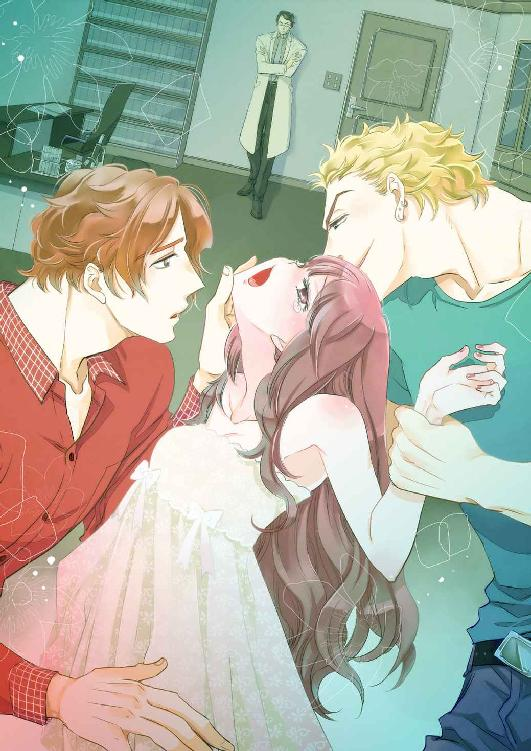
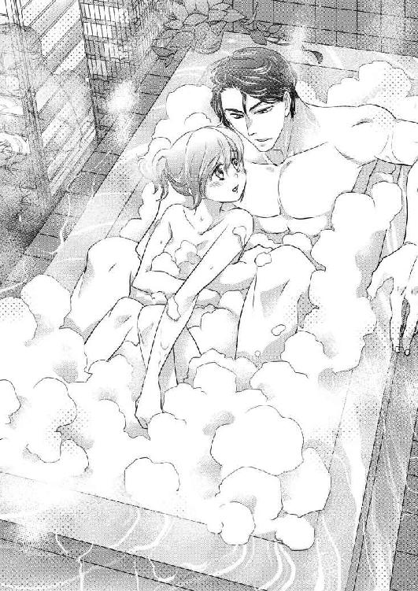
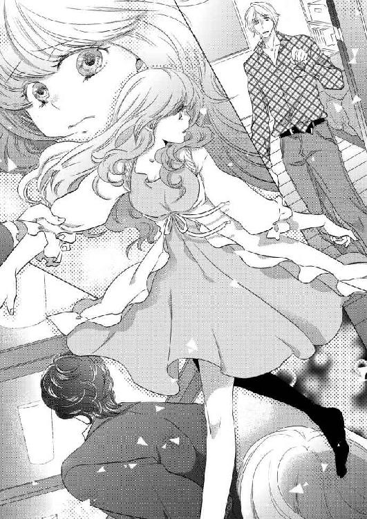
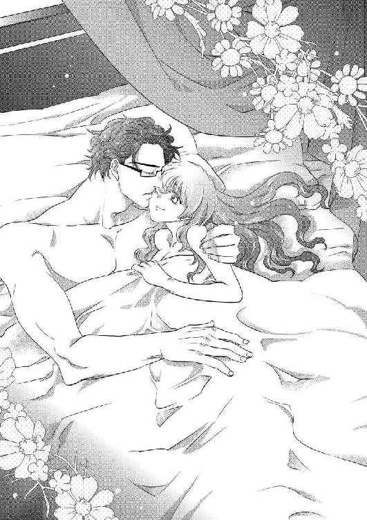

| セレブな教授の蜜愛実験～双子の美男子に抱かれて～ (アンジェラ文庫) | |
| 嶋下菜桜 & にん | |
| (2016) | |
セレブな教授の蜜愛実験
～双子の美男子に抱かれて～
嶋下菜桜

【キャラクター】
吉野 芽衣 21歳
私大の女子大生。亡くなった父の研究を継ぎたいと、田崎の研究室に入る。
田崎 俊之 38歳
私大の准教授で、芽衣の父の研究を引き継いでいる。
資産家で、郊外に自身の実験室を持ち、秘密の実験を行なっている。
夏目 陽斗 24歳
大学院生。田崎研究室の学生。
田崎の実験を手伝っている。晶の双子の兄。
夏目 晶 24歳
大学院生。田崎研究室の学生。
田崎の実験を手伝っている。陽斗の双子の弟。
生田 聡 22歳
卒業間際の大学四年生。芽衣に研究を引き継ぐ。
プロローグ
「時間だ。実験を再開したまえ」
俊之さんの言葉と共に、二人の男性が同時に私を昂ぶらせる。
その途端、私の身体の中を甘美な快感が駆け抜けた。
この部屋へ来てからというもの、俊之さんに高められ、身体はすっかり火照ってしまっていた。
太腿を軽く撫で上げられただけで、とろとろとした蜜がとめどなく溢れ、冷たい地下室の床を濡らしていく。
「気に入ったみたいだな」
晶さんが、耳たぶに息がかかりそうな距離で言う。
私を背後から攻め立てているのは、私が所属している田崎研究室の院生、夏目晶さん。
堀が深く欧風の顔立ちで、元は栗色だった髪はすっかり金色に染められている。
猛禽を思わせる鋭い眼差しで私を見つめ、指を巧みに動かしていく。
「だって、こんなっ、感じ過ぎて......あっ、んぅぅ......」
これはあくまでも実験で、そういう行為ではない。頭ではわかっていてもじっとりと濡れた唇からは甘い声が漏れ出てしまう。
「晶、あまり無理をするな。ただでさえ負担をかけているんだ。せめてもっとゆっくり」
満足そうな晶さんと対照的に、陽斗さんが不安げな顔で私を見つめた。
陽斗さん......夏目陽斗さんは晶さんの双子のお兄さん。
晶さんと同じく田崎研究室の院生で私の先輩に当たる。
柔らかな栗色の髪の持ち主で、細身ながらその腕は逞しく、整った顔立ちに憂いを帯びた瞳が美しい、校内でも評判の美男子だった。
「長引かせてどうする？ かえって苦しませるだけなんじゃねーの？」
晶さんが眉根をひそめながら言う。
「それは......」
困惑気に俯き。指の動きを止めてしまう。
「続けたまえ」
陽斗さんの迷いを断ち切るように、俊之さんが冷静な声で言う。
「しかし......」
「我々には時間がない。それは君も良く知っているはずだ」
「下手に手加減して失敗したらもう一回最初からやり直しだ。そっちのが酷いんじゃねーの？」
ぷっくりと赤く膨らんだ先端を指でくりくりと弄りながら、晶さんが畳み掛けるように言う。
「わかりました」
観念したように頷き、陽斗さんもまた指を動かし始めた。
背後から晶さんに抱きかかえられ、うなじにキスを落とされたかと思うと、前からは陽斗さんに胸元をしなやかな指でなぞられる。
「は、うぅぅん......あっ、あんっ......そこっ、いいよぉ」
これまでの実験で高められた私はほんの僅かな刺激にも敏感に反応し、喜びに打ち震えてしまう。
「............」
そんな私達を俊之さんは無言のままじっと見つめていた。
田崎俊之さんは私達が所属する研究室の准教授であり、今行われている秘密の実験の責任者だ。
美しい黒髪と東洋的でクールな顔立ち、眼鏡をかけたその姿はいかにも研究者といった風情でありながら、その体は逞しくとても引き締まっている。
まだ三十代という若さでありながら准教授になれたほど優秀な人物で、それ故憧れる女性は多い。
かく言う私もそのひとりだった。
ただ、私の場合、俊之さんに憧れたのは大学に入るずっと前のことだったんだけど......。
俊之さんは私大で教授をしていた父の教え子で、私が子供の頃、時折うちへやってきて、私に優しく接してくれた。
幼い私にとって俊之さんは、憧れのお兄さんであり、初恋の人だった。
大学で再会した時、俊之さんはずいぶんと雰囲気が変わっていたし、それに学生と准教授という立場では恋愛感情など抱いてはいけないと、私は幼い頃の想いを封じた。
それでも、こうして傍にいるとどうしても俊之さんを目で追ってしまう。
「んっ......」
あぁ、また、身体がびくんって、俊之さんに見られているのに、なんでこんなに反応してしまうんだろう。
この実験は、不治の病に侵されたお姉ちゃんを救うためには絶対に必要なものであり、それは実の妹である私でなければ出来ないことだった。
だから、私は自ら進んでこの実験に参加した。
実験を始めた当初は戸惑うこともあったけれど、薬や体内のバイオユニットの影響で快楽を得ることに抵抗がなくなっている。
今ではむしろ、自ら貪欲に快楽を求めてしまうことさえあった。
ただ、俊之さんに見られながらの行為には少し抵抗がある。
こんな実験に参加して、恥ずかしい姿を何度も見られて、恋愛なんて望めるはずもないとわかっているのに、心はどうしようもなく俊之さんを求めていた。
一章 憧れの人
大学三年の冬。私はめちゃくちゃ悩んでいた。
春になったらどこかの研究室に入り、一年間研究をして卒論を書かなくちゃいけないんだけど、その研究室選びが難しい。
研究室の選び方は人それぞれで、教授の顔が広くて就職に有利だからとか、そこの研究が面白そうだからとか、休みの日にあまり大学に出て来なくても良さそうだからとか。
私は元々やりたい研究があってそのためにこの大学に来たのでそういう意味ではすでに入りたい研究室は決まっていたんだけど、その研究室の准教授がある意味ちょっと問題だった。
「就職に有利なのは、山上研なんだけど、倍率高そうだし、面白そうなのは田中研かなぁ」
大学内のカフェでお茶を飲みながら研究室の話をする中、友人の千裕がアイスティーのストローをいじりながらそう言った。
「芽衣は？ もう決めた？」
「うん。まぁ......決めたというか決まっていたというか。でも、入れそうにもないからどうしようかなぁと」
言いながら私は頭を抱えた。
「なにそれ？」
「亡くなった父がね。前にうちの大学で研究してて、その頃は教授だったんだけど」
「え？ 芽衣のお父さん教授だったの？ っていうか、亡くなったって」
あ、そういえば千裕にはまだ話してなかったっけ。
「私が中学の時、事故で......」
私がそう言うと、千裕が悲しげな顔をする。
「ああ、でも、もうふっきれてるし、それは全然大丈夫」
私は手をぱたぱたと振りながら明るい口調で告げた。
「元々うちの大学を選んだのもお父さんの研究を継ぎたかったからなんだ」
私は子供の頃から理科の授業や実験が好きだったし、お父さんが時折話してくれる研究の話も好きだった。
いつかお父さんと一緒に研究したい。
それが私の夢だった。
けれど、お父さんが亡くなってしまった今、その夢はどうやっても叶わない。
お父さんが亡くなったのは私が中学の時だった。
夫婦そろっての事故死。
貯えがなかったわけじゃないけれど、お姉ちゃんは当時通っていた大学を辞め、就職して私を育ててくれた。
高校卒業後は働こうと思っていたけれど、お姉ちゃんが「あなたはお父さんの研究を継ぎなさい」と言ってくれたから、私は今ここにいる。
「だから、その研究を引き継いでいる田崎研に入りたいなぁと思っているんだけど......」
言って、私は大きなため息をついた。
「よりによって田崎研かぁ。そりゃ悩むわ」
千裕が納得したように言う。
「やっぱり今年も倍率高いかな？」
田崎研の准教授はまだ若く、見目麗しい資産家で、研究室の院生にはイケメンで有名な夏目兄弟がいる。それ故、女子人気はめちゃくちゃ高い。
「というか女子は入れないんじゃないかって噂になっているよ」
千裕が困惑気味に言う。
「田崎研って今は女子ゼロなんだっけ？」
理系だから、学部に女子は少ないし、研究室に女子がひとりもいないということは時々あるみたいだけれど、田崎研は女子人気が高いだけに不自然だった。
「おととしくらいまでは女子もいたみたいなんだけどね。他の女子にやっかまれて精神的に参っちゃったり、その前は数人の女子で田崎先生を取り合って研究室内がギスギスしたり、いろいろ大変だったって話だよ。それで、去年は女子をとらなかったんじゃないかって」
「男子だけにしておいた方が安心して研究できるってこと？ だから女子はとらないと？」
「ま、噂だけどね」
「やっぱり、厳しいかぁ」
大きなため息をつき、私はテーブルにつっぷした。
「でも、芽衣は別にイケメン目当てで田崎研に入りたいわけじゃないんでしょ？」
「うん。純粋に研究がしたいだけだよ」
「だったら、ダメ元で志望してみれば？ 公式に女子は入れませんって言われたわけじゃないんだし、運が良ければ入れるかもよ」
千裕が慰めるように言う。
「そうだね。やるだけやってみる」
「うんっ、頑張れ！」
励ますように明るく言い、千裕は私の背中をぽんっと叩いてくれた。
「面接だし、直接話せるんだよね」
田崎准教授の部屋へ向かう道すがら、私の脳裏に彼の姿が浮かんだ。
千裕には言わなかったけれど、私は子供の頃田崎准教授に会ったことがある。
それも一度や二度ではない。
彼は父が一番信頼していた研究者だったから、家族ぐるみの付き合いがあり、父が生きていた頃は幾度も家に来てくれた。
あれはまだ私がほんの子供だった頃......。
「ほら、芽衣。田崎俊之くんだよ。挨拶なさい」
父が家へ俊之さんを連れてきた。
「田崎......さん？」
「俊之でいいよ。芽衣ちゃん」
初めて会った時、俊之さんはにこりと微笑み、私の頭を優しく撫でてくれた。
「......！」
それがすごく嬉しかったのに、気恥ずかしさから私は母の背に隠れてしまった。
「すまんな俊之くん。この子はどうにも人見知りで」
「いえ、このくらいの年の子なら仕方がないですよ。いきなり知らない男の人が来たからびっくりしちゃったんだよね？」
すとんとしゃがみ込み、幼い私に目線を合わせてくれた。
その笑顔があまりにも眩しくて、幼いながらに胸がときめいた。
「あ、あの......えっと......」
ちゃんと挨拶しなきゃと思いながらも、ドギマギしてしまって言葉が出てこない。
すると俊之さんはくすっと微笑み、鞄からココア色のテディベアを取り出し、パペットのようにその手を軽く動かす。
「こんにちは芽衣ちゃん」
まるで熊のぬいぐるみが喋ったかのように思えて、自然と笑みがこぼれた。
「こんにちは。えと......」
「俊之だよ」
「としゆきさん。はじめまして、よしのめいです」
そう告げて、ぺこりと頭を下げた。
「ちゃんと挨拶ができて偉いね。これはプレゼントだよ」
そうして、俊之さんが私の腕に抱かせてくれたテディベアは今も私の部屋に大切に飾られている。
六つ上の姉も俊之さんを慕っていたけれど、俊之さんが来てくれた時の私のはしゃぎっぷりは半端なく、俊之さんはいつも姉よりも私を優先してくれた。
「俊之さんっ、見て見て、理科のテスト百点だったの！」
「わぁ、本当だ。すごいねぇ。芽衣ちゃん頑張っていたもんね」
答案を眺めながら、にこにこと微笑み、私の髪を撫でる。
「あのねっ。私、大きくなったらお父さんと一緒に大学で研究するんだ。だから、いっぱい頑張ったの」
「へぇ。芽衣ちゃんの夢は科学者さんなんだね」
「うんっ。お父さんと俊之さんと一緒に研究するのー」
あの頃はそれがどういうものなのかなんて良くわかっていなかった。
ただ、お父さんが好きで、俊之さんが大好きで、頑張って勉強をすればふたりとずっと一緒にいられるのだと、そう信じていた。
俊之さんは医学部を卒業し、医師免許を取得しながらも大学へ入り直し、父の研究室に入った。
でも、私が中学の時、父と母は事故に遭い他界してしまった。
俊之さんは父の研究を引き継ぎ、准教授として大学で研究を続けている。
学生と准教授という立場上、恋愛の対象にしてはいけないのだと頭では理解しているけれど、それでも俊之さんは今でも私の憧れのお兄さんで初恋の人。
父の研究を継ぎたいという気持ちに偽りはないけれど、他の女の子達のように俊之さんと親しくなりたいという邪な感情がないとは言い切れない。
「違う違う。私はお父さんの研究を継ぎたいだけ。余計な感情は捨てなきゃ！」
そう自分に言い聞かせ、私は教授室へ向かった。
「......ここ、だよね」
ドアの横にかけられた小さな札を確認し、私はふぅっと息を吐き出した。
子供の頃は俊之さんと普通に話せていたけれど、大学に入ってからは会話らしい会話を交わしたことはない。
彼の講義は全て受講していたとはいえ、私は単なる生徒のひとり、俊之さんが気にかけてくれることはなく、ただ淡々と講義を受けていただけ。
実力不足だと思われたくなくて、必死に勉強して、テストでは毎回満点に近い点数をとっていたけれど、だからと言って声をかけられるようなこともなく、完全に忘れられているか、もしくはまったく気づかれていないようだった。
受けられるテストは全部受けているし、あとやれるのはここでの面接だけ、それ以上のことはもうできない。
きっと、この面接で決まる。
そう思うと緊張してしまう。
「はぁ。ふぅ」
深呼吸ひとつして、気持ちを落ち着かせると、私はドアをノックした。
「どうぞ」
部屋の中から、冷静な声が聞こえてくる。
「あ、あのっ、三年の吉野芽衣です。私、父の研究をどうしても継ぎたくて、それでっ」
「......まずはかけたまえ」
テンパって部屋の入り口で話し始める私に向かい、冷静に言い放つ。
「は、はい」
ああ、もう心臓がばくばく鳴っている。
落ち着け、落ち着け。
私は胸を手で軽くおさえながら、応接用のソファに腰掛けた。
「君は確か、吉野先生の娘さんだったね」
ふと思い出したかのように言う。
「はいっ。次女の芽衣です」
私のこと覚えていてくれたんだ。
そう思った途端、胸がとくんと鳴った。
違うのに。
あれはあくまでも初恋であって、今はそんな風に思っていないはずなのに、どうしてこんなにも胸が高鳴ってしまうのだろう。
ああ、でも、覚えていてくれたのなら、研究室のこと少しは期待できるかも。
入れてもらえるといいのだけれど。
「君も知っていると思うが、うちの研究室は女生徒の希望が多い」
淡い期待をしたものの、俊之さんの言葉はそっけないものだった。
「......はい」
ああ、やっぱりダメなのかな。
私は落胆し、思わず俯いた。
でも、ここでがっかりしちゃダメ、落ち着いて、冷静に答えなきゃ。
「それは十分承知しています。それで去年、女子はひとりもいなかったんですよね」
私は平静を装いそう言った。
「でも、私は父の研究をもっと深く知りたい。その為にこの大学に来たんです。だから、最後まで諦めたくはありません」
顔を上げ、必死に訴える。
「その気持ちは理解できなくもない。だが、条件は他の学生と同じだ」
「............」
そう言われてしまえば黙るしかない。
学生の中には俊之さんや夏目兄弟とお近づきになりたいという不純な動機の人もいると思う。
でも、純粋にこの研究室で行っている研究に惹かれている人だっている。
仮に俊之さん達と親しくなりたいからここを選んだのだとしても、私と同じように「研究がしたいから」って言うだろうし、一度の面接でその人が本当は何を望んでいるのかなんてきっとわからない。
一体どうすれば、入れてもらえるんだろう。
「数年前まではうちの研究室にも僅かながら女生徒はいたが......」
私が黙り込んでいたら、俊之さんが先に話し始めた。
「少々やっかいなことになり、途中で外の研究室へ移ってしまってね。どうやら、ここは女生徒が安心して研究できる環境にないらしい」
そう言って苦笑する。
その複雑な表情に、やっぱりダメなのかな？ なんて、ついつい弱気になってしまう。
だけど、あきらめたくない。
「どんなに過酷な環境だったとしても、絶対に生きられないと思われる環境でさえ、生き残る固体はいると父は言っていました」
私は出来るだけ冷静に、まっすぐ俊之さんの目を見ながら語る。
「例え、安心して研究が出来る環境になかったとしても、情熱でカバーできると思います。父の研究を継ぎたい。その想いは誰にも負けません！」
それは私の正直な気持ちだった。
すると、俊之さんはすっと目を細め、じっと私の瞳を見つめた。
ここで目をそらしちゃダメだ。
意思を伝えなくちゃ。
そうして、しばしじっと見つめあう。
と、俊之さんがすっと視線を外した。
「なるほど」
ぽつりと呟く。
......伝わった......かな？
「志望動機はわかったが、君がどの程度、私達の研究について理解しているのか知りたい。もっと、具体的に何の研究がしたいのかを教えてくれないか」
想いが伝わったのかもしれない。
少なくとも、興味を持ってもらえた。
ここが正念場だ。
私がどれだけ真剣なのか、わかってもらうためにもちゃんと答えなきゃ。
「はい」
大きく頷き、私は過去の論文などから、自分が一番興味のある研究について語った。
「............なので、環境の変化における生物の順応性、形態の変化について、深く知りたいんです」
「ふむ。......となると生田君の行っている研究に近いな」
言いながら、ノートにメモをとる。
ちらりと、そちらに目を向けると、三年生の女子の名前がずらりと並び、その横に志望動機等の簡単なメモがかかれていた。
もう、こんなに面接に来ていたんだ......。
他の人は面接でどんなことを語ったんだろう。
すごく気になるけど、さすがにそんな事は聞けないし、質問したところで教えてはもらえるはずもない。
「一応、検討だけはさせてもらうが......。なにぶん、志望者が多いので、今の時点では何とも言えない」
ふぅと、ため息交じりにそう告げる。
「そう......ですか。あの、どうぞよろしくお願いします」
私は祈るような思いで頭を下げた。
「結果は追って知らせる。それまで待っていてくれ」
「はい」
「ああ、それと......。簡単な健康診断を受けてもらいたいのだが、かまわないか？」
立ち上がりかけた私を引き止めるように問いかける。
「健康診断......ですか？」
研究室の面接でそんなことをするなんて聞いたことがない。
最近はするのかな？
それとも、健康診断の結果も審査に含まれるのかな？
「ああ、ちょっとした血液検査だ」
「わかりました」
理由はよくわからなかったけれど、私は言われた通り、指先に軽く針を当て、数滴の血を採取し、その場を後にした。
「......はぁ......」
その日の夜、私は部屋で一枚の写真を見つめながらため息をついていた。
それは、以前、俊之さんが家に遊びに来た時に撮ったもので、写真の中では、父や母や姉、そして、今よりも若い俊之さんがいて、みんな楽しそうに笑っていた。
あの頃に戻れたらなんて思うこともある。
でも、それは絶対にできないことだから、せめて少しでも夢に近づきたい。
お父さんが目指していたものを感じてみたい。
だけど、その夢さえ叶えられる気がしない。
「希望者多いみたいだし、やっぱり無理なのかなぁ......」
声に出して呟くと、なおさら切なくなってしまう。
「第二志望の研究室も考えないと」
仕方なく他の研究室の資料に目を通してみたけれど、どうにも頭に入ってこない。
いくつか興味のある研究室もないことはないのだけれど、ずっとお父さんの研究を継ぐことだけを考えていたから、いまいち乗り気になれない。
「俊之さん、私のこと覚えていてくれたんだよね」
ふいに、あの時のことが思い出された。
ずっとそっけなかったから、てっきり忘れ去られていたとばかり思っていたのに、まさか覚えていてくれるとは思わず、僅かに頬が緩んでしまう。
「子供の頃はいっぱい可愛がってもらったっけ」
いい子だね。可愛いね。なんて言いながら、頭を撫でてくれたこともある。
あの頃の俊之さんはとても優しくて、幼い私は俊之さんが来てくれると聞いただけでご機嫌だった。
帰り際、「また来てね」とねだると、俊之さんは決まって「また来るよ。約束」と笑顔で指きりをしてくれた。
その時の笑顔を思い出すと、頬が熱くなってしまう。
「初恋だったんだよねぇ......」
とはいえ、俊之さんはあくまでも子供の頃に憧れていた初恋のお兄さん。
准教授と学生という関係になった今、俊之さんと付き合いたいなどというおこがましい想いを抱くつもりはない。
「それにしても、准教授になったから......なのかな。俊之さん、今はなんだか冷たい感じなんだよね......」
昔の俊之さんは、いつも柔らかな笑みを浮かべた優しい青年だった。
でも、今の俊之さんは感情をあまり表に出さず、淡々と授業や研究をこなすクールな理系男子って感じ。
「いつからあんな風になっちゃったんだろう......」
お父さんが亡くなってからは俊之さんが家に来ることもなかったし、お葬式の時に挨拶をしたくらいでそれからは全然会っていなかった。
再会したのは、私が大学に入ってからだし、その頃には今みたいになっていた。
お父さんが生きていた頃、俊之さんはまだ助手だった。それが今や准教授なのだから、きっと会っていなかった数年の間にいろいろあったんだろうな。
翌日。
私は授業の後、サークルルームで調べ物をしていた。
私の所属しているサークルのかつての先輩の中には、田崎研究室に所属している人がいて、資料をいくつかサークルルームの本棚に残してくれていた。だから、参考までにとそれを読んでいたのだけれど、読めば読むほど想いは募ってしまう。
「やっぱり、この研究したいなぁ......」
本当は父と一緒に研究をしたかった。
それが叶わないまでもせめて少しでも関わりたい。
そのためには研究室に入らないと。
「って、それが一番難しいんだけどね」
ため息をつきながら、何気なく時計に目を向けると予定の時刻をとうに越えていた。
「あっ、いけない。もうこんな時間っ！」
私は慌ててサークルルームを飛び出した。
私の通っている大学は、最寄り駅からバスで３０分程度のところにあるんだけど、あまり遅くまで大学に残る人もいないことから、最終バスの時間は早い。
もし、バスに乗れなければ、暗い夜道を１時間もかけて歩かなくてはならなかった。
「うぅぅ......間に合うかなぁ......」
不安になりながらも、私はバス停へと急いだ。
しかし――。
ブロロロロ。
バスが見えたと思った瞬間、無常にもそれはエンジンを吹かして遠ざかってしまう。
「..................」
しばし呆然と過ぎ行くバスを見つめるも、こうなってはどうしようもない。
「歩くしかないかぁ......」
力なく呟き、私は街灯の少ない夜道を歩き始めた。
「うぅぅ、寒い、暗い、お腹すいた......」
街灯すらほとんどなく、コンビニや自動販売機などもない。
飲み物ひとつ買えないまま、私はとぼとぼと歩き続けた。
「せめて、自販機であったかいコーヒーでも買ってから歩き始めれば良かった」
バス停には自販機があったのだから、その時に気づいていれば買えたのに。
そう思い、大きなため息をついた。
すると――。
ふいに背後で車のクラクションが鳴る。
「？」
一応すみっこを歩いていたのだけれど、邪魔だったのかな？
そんな風に思いながら振り向くと、クラクションを鳴らした車が俊之さんのものだと気がついた。
「え......？」
気づくと、俊之さんの車が私の真横に止まっていた。
と、俊之さん？ なんでここに？
「どうした？ 夜道のひとり歩きは危ないぞ」
窓を開け、声をかけてくる。
「えーと、その......バスに乗り遅れてしまって......」
混乱しつつも、私は素直に事情を話した。
「そうか」
頷くと、俊之さんは車を降り、助手席のドアを開けた。
「乗りなさい。駅まで送っていこう」
「えっ？ いいんですか？」
まさか俊之さんがそんなことを言ってくれるなんて。
夢じゃ......ないよね？
思わず腕を抓ってしまう。
うん。普通に痛い。
どうやら夢じゃなさそうだ。
だったらどうして？ 今まであんなにそっけなかったのに。
「気づいてしまったからな。無視するわけにもいかないだろう」
俊之さんが表情を変えずに言う。
「ありがとうございます」
お言葉に甘え、私は俊之さんの車に乗った。
俊之さんの車、見たことはあったけど、乗せてもらうのは初めてだ。
意識すると、自然と頬が赤くなる。
私は胸のドキドキをごまかすように流れゆく景色に目を向けた。
「............」
「............」
俊之さんは何も話さず、私も何も言わない。
そんな時間が続くと、次第に気まずくなってくる。
どうしよう。何か話しかけた方がいいかなぁ。
ちらりと俊之さんに目を向ける。
けれど、俊之さんは無言のままで、口を開く気配はない。
このまま黙っていたら、駅前のロータリーに着くまで会話がないままかもしれないなぁ。
「あの......」
私は思い切って、声をかけてみた。
「俊之さんに昔いただいたテディベア......今も大好きで、ベッドの枕元に置いてあるんです」
「ああ、あの時のぬいぐるみか......」
俊之さんが思い出したかのように言う。
......覚えていてくれたんだ。
どうしよう。すごく嬉しい。
「もう、すっごくすっごく可愛くて、私の宝物なんですよ」
「女の子の喜ぶ物など、そのくらいしか思いつかなかったからな。だが、気に入ってくれたのなら何よりだ。......それにしても、あの頃は小さな子供だったのに、ずいぶんと成長したものだ」
こちらにちらりと目を向け、当時と変わらぬ柔らかな笑みを浮かべる。
あ......いい笑顔。あの頃と同じだ。
とくんとくん。胸がときめく。
もっと、いっぱい話したい。今なら、昔みたいに話せるかも。
そう思い、口を開こうとした瞬間――。
プルルルル。
私のスマホがけたたましく鳴った。
「......知らない番号だ。誰だろう？」
不思議に思いながらも、電話に出てみた。
「はい、もしもし。え......？ お姉ちゃんが？」
それは、お姉ちゃんが倒れたという知らせだった。
「あ、あのっ、お姉ちゃんが倒れたって、救急車で運ばれたって......」
なんで？ どうして？ 昨日まで元気だったのに？
どこか悪かったの？ もしかして、隠していた？
もし、お姉ちゃんに何かあったらどうしよう......。
私の顔から血の気がさーっと引いていく。
「落ち着きなさい。まずは病院へ。君は彼女の唯一の身内だ。君がしっかりしなければ、お姉さんも不安になる」
俊之さんに一喝され、我に返った。
「は、はい......」
そうだよね。
今、お姉ちゃんの身内は私だけなんだから、私がしっかりしなくちゃ！
「病院の場所は聞いたね。私も共に向かおう」
ありがたいことに、俊之さんはそう申し出てくれた。
ひとりじゃない。
俊之さんが側にいてくれる。
それがとても心強かった。
「ありがとうございます」
私が病院の場所を告げると、俊之さんはすぐにそこへ向かってくれた。
病院で待ち受けていたのはあまりにも残酷な事実だった。
お姉ちゃんは、極めて稀な難病に冒されていて、現代の医療ではどうにもならない。
対処療法とその場しのぎの延命措置はできても、根本的な治療法はなく、このままでは１年生きられるかどうかわからないと告げられた。
「............」
「............」
それを聞いた私達は無言のまま病院を後にした。
本当はお姉ちゃんの側についていたかったけれど、手続きもしなくちゃだし、着替えも持ってこなくちゃいけなくて、一度家に帰らなきゃいけなかった。
「家まで送っていこう」
私の肩にそっと手を触れ、俊之さんがそう告げる。
「すみません。お願いします」
俊之さんに促され、私は再び俊之さんの車に乗った。
「......いつか、こうなるだろうとは思っていた。だが......」
家へ向かう中、俊之さんがぽつりと呟く。
「え......？」
どういうこと？
「君のお姉さんの病気は生まれついてのものだ。吉野先生もそのことを憂いておられた」
俊之さんが静かに語り出す。
「父は知っていたんですか？」
生まれつきだったなんて、そんなこと初めて聞いた。
「ああ。吉野先生は娘さんを助けたいといつもおっしゃっていた」
悲しげに顔を歪める。
「そう......だったんですか」
一体どうやって助けるつもりだったんだろう。
「......もし......もしも、君が協力してくれるなら、お姉さんを助けられるかもしれない」
俊之さんが搾り出すような声で言う。
「ほ、本当ですかっ!?」
私は思わず大声をあげた。
「ああ、まだ可能性に過ぎないが、できるかもしれない」
「協力させてください！」
私は迷わずそう言った。
「何をすればいいんですか？ 私に出来ることならなんだってします！」
前のめりにそう告げると、俊之さんが困惑し、小さくため息をついた。
「落ち着きなさい」
「ご、ごめんなさい......」
私は縮こまってあやまった。
「そうやってすぐに慌ててしまう所は変わらないな」
俊之さんが僅かに笑みを零す。
「そういえば、子供の頃も良く『落ち着いて』って言われていましたね」
あの頃は俊之さんが一緒にいてくれるというだけで大興奮だったっけ。
「ああ、だが、君はもう幼い子供ではない。そうだろう？」
「はい」
私は素直に頷いた。
焦っちゃダメだ。こういう時こそ冷静にならなくちゃ。
それに、私はひとりじゃない。
俊之さんがついていてくれる。だから、きっと大丈夫。
それからすぐ、私は詳しい話を聞くため、俊之さんの家へやってきた。
「すごい......。こんな広い家に住んでいらっしゃるんですね」
それは郊外の閑静な場所にある、屋敷と言っても差し支えのない広さの一軒家だった。
「いや、これは別宅だ。ここに住んでいるわけではない」
俊之さんがさらっと言ってのける。
「えっ!? べ、別宅......？」
こんなお屋敷みたいな家が別宅だなんて、一体普段どんな暮らしをしているのだろう？
そういえば、特許をいくつか取っていて毎年かなりの特許使用料が入ってくるんだったっけ。
それにしてもすごい......。
「ここでは、大学で行っているのとは別の......私的な研究を行っている」
俊之さんは淡々と述べながら廊下の明かりをつけていく。
「私的な研究......ですか？」
科学的な研究や実験には膨大な資金がかかる。
大学にある機器や器具、試薬などはかなり高額。
それを自力で集めようとすれば、とんでもない金額がかかってしまう。
それを自費でやってしまうなんてすごすぎる。
そんなことを思いながら、私はついつい家の中を見回した。
それからすぐ、応接室へと通され、そこで詳しい話をすることになった。
応接室のソファに腰掛けると、俊之さんは一冊のファイルを差し出す。
「これは......？」
「元々は吉野先生が行っていた研究の資料だ。そして、今は私が秘密裏にそれを引き継いでいる」
言われて、私はファイルを手に取り、目を通した。
「え......？ これって......」
それは、母の病を治すための研究だった。
「......お母さん病気だったの？」
資料を読みながら、私は思わず呟いた。
お母さんはあまり丈夫な方じゃなかったけど、入退院を繰り返すようなことはなかったし、大病を患っていたという記憶もない。
けれど、それは父の治療のおかげで、実は先天的な疾患を持ち、それに苦しめられていたのだと知った。
「そう......だったんだ。全然知らなかった」
きっと、心配をかけまいと秘密にしていたんだろうな。
でも、できれば言って欲しかった。
もっと早く知っていたら、お姉ちゃんが倒れる前に対処できたかもしれないのに......。
なんて今更言っても仕方がないよね。
「おそらく、君のお姉さんの病気も同等のものだろう。とすると、今行っている実験が成功すれば、助けられるかもしれない」
「協力します！ 協力させてください！」
今の私に出来ることなんてたかが知れている。
それでお姉ちゃんが助かるのならば、なんだってやってみせる。
「話は最後まで聞きたまえ」
俊之さんが諌めるように言う。
「そもそも、合法的、倫理的な研究ならば、大学で行っている。何故、私的に研究しているのか、そういった疑問を抱く間もなく、すぐに返答するというのはあまりにも短絡的ではないだろうか」
「あ......」
確かに俊之さんの言う通りだ。
ということは、その研究には何か問題があるのだろう。
「例え素晴らしい効果が期待できたとしても、実験の過程で倫理的な問題が生じては、公にどうこうすることなどできはしない」
倫理的な問題？
それって、どういうことだろう。
「あ、あのっ。具体的にどんなことをするんでしょうか？」
急に不安になり、私は恐る恐る問いかけた。
「まずは、投薬だな。最初は錠剤、そして準備が整い次第、特殊なバイオユニットを注入するのだが、これが少々やっかいでな」
言って、ふぅとため息をつく。
「何か副作用的なものがあるのでしょうか？」
私は少し怖くなって問いかけた。
「バイオユニットは活性化し、増殖することで特定の病状を押さえ込める。だが、活性化するためには人が快感を得た際に放出される物質が必要不可欠だ」
「快感......ですか？」
その言葉にドキっとしてしまう。
「ああ、バイオユニットをただ注入しただけでは何の役にも立たない。かと言って人工的に増殖させたものを注入してもすぐに体外へ排除されてしまう。このバイオユニットを使って病状を押さえ込む方法は二つ。一つ目は患者に直接バイオユニットを注入し、性的な刺激を与えて体内で活性化させる方法。そして、もうひとつは遺伝的に近しい人物にバイオユニットを注入し、その人物の体内で増殖したものを抽出して患者に使用する方法。入院中の患者に性的な刺激を与えるというのは難しいとなると残る方法は......」
言って、ちらりと私に目を向ける。
「私の身体にそれを入れて活性化させるしかない。ということですね」
「その通りだ」
俊之さんが大きく頷く。
「彼女の容態を考えれば、時間をかけている余裕はない。体力的にもかなりきついものになるだろうし、実験が進むにつれて身体は貪欲に快楽を求めるようになっていく。とても年頃の女性に勧められるような実験ではない」
眉をひそめ、苦しそうな顔で言う。
確かにちょっと......いえ、かなり抵抗のある実験だけど。
「それしかお姉ちゃんを救う方法はないんですよね」
例え過酷な実験なのだとしても、それしか方法がないのならやるしかない。
「だったらやります。やらせてください！」
顔をあげ、私はまっすぐに俊之さんの目を見ながら宣言した。
俊之さんはしばらく私の瞳を見つめ。
「わかった......」
と頷き、静かに立ち上がった。
そして、引き出しから、なにやら腕時計のようなものを取り出し、私の手首につける。
「バイオリズムを調べる装置......のようなものだ。シャワーの時以外は、就寝中でもつけていて欲しい」
「わかりました」
「それと、これを......」
言って、俊之さんが錠剤の入った小瓶を取り出した。
「一日一錠、必ず飲むように」
「はい」
それから、実験に関する簡単な説明を聞き、最後に実験に対する誓約書にサインして、私は家に帰った。
これから、どうなるかもわからない。
実験がどのようなものなのかも。
それでも、前に進むしかない、それしかないんだ。
二章 紅一点
俊之さんの別宅で誓約書を書いてから数日後、私は正式に田崎研究室の所属となった。
「吉野芽衣です。よろしくお願いします」
顔合わせの日、研究室の全員が揃った。
そこには、俊之さん、そして、夏目陽斗さん、夏目晶さん、そして私達新四年生と、これから卒業する四年生の先輩達がいた。
新四年生の中で女子は私だけ、というかこの場にいる女子は私だけだった。
「へぇ、今年は女子がいるのか」
晶さんが興味津々といった表情で私を見つめる。
「ふぅん。けっこう可愛いじゃん。これならまぁ合格だな」
言って、ぽんっと私の肩に手を乗せ、顔を近づける。
う......顔近い。
っていうか、近くで見るとすごくかっこいい。
確かにこれだけイケメンだったら、みんなが騒ぐのも頷ける。
「あ、あの......」
こういう時、何と言っていいのかわからず私は口ごもった。
「晶、いきなり怯えさせるなよ」
陽斗さんが、晶さんの腕を掴んで引き離す。
「はいはい」
つまらなそうに言い、晶さんが離れていく。
「ごめんね。こいつ悪い奴じゃないんだけど、ちょっと......いや、かなり手が早くて......。もし、変なことするようならすぐに僕に言って、ちゃんとやめさせるから。ねっ」
にこっと微笑み、アドバイスをしてくれる。
「は、はい」
変なことって何だろう？
不思議に思いながらも私は小さく頷いた。
「あ、そだ。田崎教授、研究の引継ぎって......」
「それについては調整中なので後日連絡する。それと、私はまだ教授ではない」
木村くんの言葉を遮り、俊之さんが眉根をひそめる。
「田崎は教授呼びされるの嫌なんだよな」
晶さんがからかうように言う。
「私はまだ若輩だからな。吉野教授の域には程遠い......」
憂いを帯びた瞳で窓の外に目を向ける。
「僕達は田崎さんって呼んでいるよ」
陽斗さんがにっこり微笑みながら教えてくれた。
田崎さんかぁ......。
私もそう呼んだ方がいいんだよね。
以前は俊之さんって呼んでいたし、心の中ではそう呼んじゃっているけれど、うっかり表で言わないようにしよう。
それから、皆それぞれ自己紹介をして、実験棟の設備などを見学し、その日は解散した。
同じ研究室に入る新四年生の人達もみんないい人そうだし、楽しく研究できそう。
俊之さんは、女子が安心して研究できる環境ではないと言っていたけれど、少なくとも研究室内では何の問題もなさそうだった。
あくまでも、研究室内ではだけど......。
「ねぇ、芽衣。大丈夫？ なんか変な噂たてられてるよ」
「うん。知ってる。でも、根も葉もない噂だから」
顔合わせから数日も過ぎると、学内に妙な噂が流れ出した。
もともと女子はとらないと言われていたのに私が入ってしまったのだから不思議に思う人もいるだろう。
だからと言って、色仕掛けで強引に入ったとか、元々付き合っていたとかそういう根も葉もない噂を立てられても困る。
そりゃ、俊之さんは私の初恋の人だけれど、研究室に入るからにはけじめをつけなくてはいけないし、諦めようと頑張っているのに。
「ねぇねぇ、聞いた。田崎研究室のこと」
「ああ、吉野さんでしょ。ずるいよね」
田崎研究室に入りたかった女子達がひそひそと囁きあう。
「私、直接聞いてくる！」
中にはどうしても納得できず、俊之さんに問いかける人もいたらしい。
俊之さんはその都度、純粋に研究に必要な基礎知識の有無と、研究への熱意を考慮して選んだと説明してくれたみたいなんだけど、納得しない人も多かったんだよねぇ。
「......はぁ......」
これで私の成績が悪かったのなら、噂をたてられても仕方がないと思うけど、一生懸命頑張っていい成績をキープしたのに、ずるをしたみたいに言われると悲しくなってしまう。
前にもやっかまれて研究室にいられなくなってしまった人がいるって話だったけど、その人もこんな気持ちだったのかもしれないな。
「せっかく念願の田崎研究室に入れたのに、これじゃあ落ち着かないね」
千裕が心配して声をかけてくれた。
「まぁね。でも、このくらいは覚悟の上だから......」
力なく言い、肩を落とす。
ある程度のやっかみはあるだろうと思っていたし、このくらいのことで辞めるつもりはさらさらないけれど、それでも多少は気が滅入る。
「そりゃ、女の子はとりたくなくなるよね......」
怪文書に目を落としながら、千裕がぽつりと呟く。
「でもさ。それでも芽衣を研究室に入れてくれたってことは相当期待されているってことなんじゃない？」
千裕が気を取り直したように言う。
「期待......かぁ。もし、そうなら頑張らないといけないね」
たぶん、俊之さんが私を自身の研究室に入れたのは秘密の実験のために都合がいいからなんだろうな。
まだ本格的な実験は始まっていないけれど、時折部屋に呼び出されては簡単な検査をされている。
もし、私が他の研究室の人間だったら怪しい事この上ない。
だけど、理由はどうあれせっかく入れたんだから、後悔のないよう頑張ろう。
「田崎准教授が吉野さんと付き合っているって本当ですかー」
少し離れた場所からそんな声が聞こえてきた。
どうやら、ひとりの生徒が俊之さんに質問しているらしい。
私は思わずそちらに意識を傾けた。
「そのような事実はない」
俊之さんはきっぱり言い放つ。
「............」
もちろんその通りだし、私をかばっての発言なんだってわかっている。
わかっているんだけど......あんなにはっきり言われてしまうと少し落ち込む。
「でもぉ、吉野さんだけ入れたなんておかしいじゃないですかー」
「来年度ということであれば、うちの研究室には他にも四人いるが？」
俊之さんが怪訝な顔で反論する。
その子が言っているのはそういうことじゃないと思うんだけど......俊之さんのことだから素で答えてそう。
「それは、だって男子じゃないですか」
女の子が唇を尖らせる。
「成績順だからな。残念ながら、君の成績ではついて来られないと判断した。他に得意な分野もあるようだし、そちらで努力した方が卒業の可能性が上がるだろう」
「う......」
言葉に詰まり、怯んでしまう。
「他に質問は？ なければこれで」
言うなり、俊之さんはその子に背を向け、スタスタと歩き出した。
「この調子なら、噂はすぐに収まりそうだね」
千裕が明るい口調で言う。
「う、うん......」
その言葉に頷いてはみたものの、なんだか素直に喜べなかった。
そんなある日のこと。
「ねぇ、吉野さん。ちょっといい」
「え、えーと......」
私は数人の女の子に取り囲まれた。
これってやっぱり、あの噂のせい......だよね。
なんか怖いし、出来れば逃げたい。
でも、ここで逃げたらやましいことがあるみたいな感じになっちゃうし......。
少し迷ったけれど、私は素直に女の子達の後をついていった。
連れて行かれたのは人気の少ない校舎の裏。
「単刀直入に言うわ。田崎先生と別れて」
女の子のひとりがいきなりとんでもないことを言い出した。
「わ、別れるもなにも、そもそも付き合っていませんっ！」
私は慌てて否定した。
「嘘。だったら、どうしてあなただけ研究室に入れたの？ おかしいじゃない」
そんな決め付けられても......。
「それは、私の父が元々ここの教授で、田崎先生は父の研究を受け継いでいて、私は父の研究を継ぎたくてここへ来たから、一年の時からずっと頑張ってきたし。あの研究のこと前からずっと調べていて......」
ああ、なんだか上手く説明できない。
「嘘っ！ そんな言葉には騙されないわ」
説明している途中で遮られてしまった。
しかも、嘘って......。
本当のことなんだけどなぁ。
一体何を言えば納得してくれるんだろう。
「............」
適切な言葉が見つからず、私は黙り込んだ。
「なんとか言いなさいよ！」
女の子がイラついて怒鳴り散らす。
ど、どうしよう。
やっぱり逃げた方がいいかな。でも、この人数じゃ逃げようにも逃げられないかも。
万事休すといったその時。
「お前ら、こんなとこで何してんの？」
晶さんがひょこっと顔を出した。
「あ、晶さん......？」
なんでこんなところに？
「てか、吉野じゃん。お前、俺の許可なくこんなとこで女子と戯れてんじゃねーよ」
許可なくって......。
っていうか、別に戯れているわけじゃないんだけどな。
「えーと、それはその......」
素直に問い詰められていましたって言うのも告げ口みたいで嫌だし、なんて説明すればいいんだろう。
「晶さんからも言ってくださいよ、田崎先生に近づくなって！」
女の子が晶さんに訴えかける。
「近づくもなにも、殆ど会話なんかないぜ。研究室ん中じゃ一番喋ってないんじゃねーの？」
晶さんがあっけらかんと言う。
「なにそれ、秘密の関係ってやつ」
何故そんな発想に？
一体彼女の頭の中で私と俊之さんはどんな事になっているんだろう......。
「違う違う。こいつは俺のお気に入りなんだよ。田崎もそれ知ってるから遠慮してんじゃねーの？」
「え......？ そう、なの？」
女の子がきょとんとして小首を傾げた。
この場合、私は頷くべきなんだろうか。
反応に困る。
そんな中、女の子は呆然として、私と晶さんを見比べていた。
「っていうか、田崎って年下には興味ないって話だぜ」
「............」
その言葉に女の子が複雑な顔で黙り込む。
それが本当なら、私にも彼女にもチャンスはない。
「とにかく、こいつは俺のお気に入りだから、あんまり苛めないでくんない？」
言って、私の肩を強引に引き寄せる。
「......！」
急にそんなことをされたので、思わず頬が赤くなる。
「別に苛めてなんか......」
「そ、そうよ。ただ、田崎准教授との関係が知りたかっただけで......」
女の子達が気まずそうな顔をする。
「だったら、こいつと田崎はなんでもない。つーか、こいつ田崎の恩師の娘だろ？ 恐れ多くて手なんか出すわけないじゃん」
「......なら、いいけど......」
「ねぇ、もう行こう」
「う、うん」
女の子達は逃げるように去っていった。
「......はぁ」
私はほっとして安堵の息を漏らした。
「あの、すみません。助かりました」
「何が？」
あれ？ 今のって助けてくれたんじゃ......。
「何がって、私が女の子達に囲まれていたから助けてくれたんじゃないんですか？」
「別に。ここ、俺のお気に入りだから、うるさい奴らをおっぱらっただけ。つーか、礼なら言葉じゃなく身体で示せよ」
「え......？」
にやりと笑い、唇を近づける。
「えっ。ええっ！」
びっくりして目を丸くしていると。
「叫ぶなよ。ムードねぇなぁ」
晶さんがつまらなそうに言う。
「ムード以前にお前はデリカシーがない」
その言葉と同時に、晶さんの頭にごんっと拳骨が落ちてくる。
「痛っ」
顔をしかめ、晶さんの顔がぱっと離れる。
「あ、陽斗さん」
「大丈夫？ 晶に何もされなかった？」
「い、いえ、むしろ助けていただきました」
私がそう言うと、陽斗さんが不思議そうな顔をした。
「助けた？ こいつが？」
驚き、目を見開く。
「はい。さっきまで女の子達に囲まれていて、でも、晶さんがきちんと説明してくださったので、みんなちゃんとわかってくれたみたいです」
「へぇ、晶がねぇ」
「悪いかよ」
言って、晶さんが唇を尖らせる。
「いや、珍しいなと思ってさ。それより、晶、田崎さんが呼んでるよ。サボってないで、早く行こう」
「ちっ。しょうがねぇなぁ」
ぶつぶつと文句を言いつつも、晶さんは陽斗さんに連れられ去っていった。
晶さん、雰囲気はちょっと怖いけど、悪い人じゃないのかもしれないな。
その後、何度か女の子達に質問攻めにされることもあったけれど、俊之さん達がうまく立ち回ってくれたおかげか徐々に減っていき、テストの時期には完全に何も言われなくなった。
そして、大学は休みに入り、卒業予定の四年生から新四年生への研究の引継ぎが始まった。
新四年生はよほどのことがない限り、研究のおおまかなテーマを現四年生から引き継ぐことも多い。
私は、同じサークルの生田先輩の研究を引き継ぐことになった。
「生田先輩、研究の引継ぎ、どうぞよろしくお願いします」
「よろしく！ っていうか、吉野が引き継いでくれるなら安心だな。とりあえず、これ、今までつけてた研究ノート」
言って、生田先輩は私に研究ノートを差し出した。
「へぇ、けっこう細かい作業があるんですね」
顕微鏡を覗き込みながらピンセットでつまみあげるのとか、慣れないと大変そう。
「まぁ、最初は苦労するけどね。よほど不器用じゃない限り、一ヶ月もすれば普通に出来るようになると思うよ」
もともとサークルの先輩でもあり、面識もあったことから、引継ぎはスムーズに行われた。
「そうそう、染色の際はしっかり染めて、ちょっと時間長くてもいいくらい。色合いの調整はエタノールをくぐらせる時に出来るから、そこが腕の見せ所かな。まぁ、昔と違って、今は写真にした時に色の補正ができちゃうんだけどね......。って、これ、去年の先輩にも言われたんだけど、一体いつから、おんなじこと言ってんだろ」
言いながら、生田先輩が苦笑する。
「あははっ。伝統みたいですね」
私がいたサークルは人数も多かったし、千裕達とばかり話していたから、面識こそあったものの生田先輩とはあまり話したことはなかった。
でも、先輩教え方上手いし、話しやすい。
「ああ、なるほど......」
「そうそう、いい感じ。顕微鏡を見ながらの作業は慣れるまで大変だから、何度も練習するといいよ」
「あ、でも、練習用に使っちゃうのは申し訳ないというか......」
「だったら、これ使って。卒論では使わなかった部位なんだ。誰か使うかと思ってとっといたんだけど、誰も使わないみたいだからさ」
「ありがとうございます」
「えーと、ここをこうして......」
言われた通りにやってみたものの、難しくてうまくいかない。
「それでもいいけど、こっち先に摘んだ方が綺麗に取れるよ」
「あ......」
ふいに手が触れ合う。
「ああ、ごめん」
「いえ......」
なんとなく気まずくて目をそらすと、壁際に立っていた俊之さんと目が合った。
けれど、その途端、俊之さんはふいっと顔をそむけてどこかへ行ってしまった。
今のは偶然？
それとも俊之さん、私達のこと見ていたのかな？
少し気になったけれど、私は研究の引継ぎに集中することにした。
「あれ？ 吉野、そんな時計つけてたっけ？」
生田先輩がふいに私の腕に目を止めた。
「ああ、これですか？ これはその......」
それは、俊之さんからいただいた腕時計型の計測機器だった。常につけておくよう言われたので、あれからずっとつけていたけれど、まさか本当のことを言うわけにはいかないし、どうやってごまかそう。
「えーと。と、友達にもらったんです。お気に入りなのでいつもつけているんですよ」
「ふぅん......」
生田先輩が意味ありげに呟き、じっと時計に目を向ける。
「あの......。これが何か？」
もしかして、俊之さんからもらったって気づかれちゃったかな？
「いや、なんでもない。かっこいいなと思ってさ」
「ああ、なるほど......。あの、それより、さっきの実験についてなんですけど」
あまりつっこまれたくなかったので、私はすぐに話題を変えた。
翌日、私は俊之さんの部屋に呼び出された。
そして、いくつか検査を受けると、今日からは毎日この薬を飲むようにと、錠剤の入った小さな小瓶を渡された。
「以前渡した薬は残っているか？」
「はい」
「では、今度持ってきたまえ、そちらは回収する」
「......これって、あの実験に必要なものなんですよね」
私はおずおずと問いかけた。
「そうだ。それでしばらく様子を見る」
俊之さんが淡々と告げる。
「あ、あのっ。その実験っていつから始まるんですか？ お姉ちゃんは大丈夫なんでしょうか？」
「今の所は問題ない。そちらも対処はしている。実験開始の時期は追って知らせる。それまではあまりこの話題を口にしないように」
「はい」
「話は以上だ。下がりたまえ」
必要な事を告げると、俊之さんは無情にもそう告げた。
下がれと言われては、素直に従うしかない。
でも、できればもっと、詳しい話を聞きたかったな。
そんなことを思いながら俊之さんの部屋を後にする。
と、ドアの外に生田先輩がいた。
「おっと」
危うくぶつかりそうになったが、なんとかよけてもらえた。
「ご、ごめんなさい」
「ああ、いや、大丈夫。たまたま通りかかってさ。はは......」
どこかごまかすように言う。
「それより、時間大丈夫？ 引継ぎの続きしない」
「はい。大丈夫です」
頷き、先輩と一緒に実験室へ向かった。
「じゃあ、今日はここまでにしよう」
「はいっ！」
最初は上手くできなかったけど、ちょっとはコツがつかめたかも。
そんな事を思いながら、上機嫌で片付けをしていると。
「あのさ、吉野。この後時間ある？」
生田先輩が頬をかきながら問いかけてきた。
「え......？ あ、はい。まだ、大丈夫ですよ」
もしかしたら、まだ何か教わることがあるのかも。
「ああ、いや、そうじゃなくて、晩飯とか一緒にどう？ 駅まで送るし」
言いながら、ポケットから車のキーを取り出す。
「いいんですか？ 嬉しいです」
この時間、バスの本数はあまり多くない。
駅まで送ってもらえるというのはありがたいことだった。
「やっぱり、車があった方が便利ですよねぇ......」
助手席に乗りながら、私はそう問いかけた。
このあたりは田舎だし、徒歩で行ける範囲にはお店なんてほとんどない。
一応学内に購買や食堂はあるけれど、車があればもっといろいろなお店に自由に行ける。
「夜になるとバスの本数がぐっと減るからなぁ。最寄り駅まで歩くとめちゃくちゃ遠いし、終電ぎりぎりまで研究したい奴とかは、最寄り駅の側に駐車場借りて学校まで車で往復してる。って、俺のことだけど」
言って、生田先輩がおどけたような顔で笑う。
「まぁ、今の四年だと、近くに下宿している奴もいるから、半々ってとこかな。この辺田舎だし、車あった方が便利だけど、誰かしら車で来る奴はいると思うから、帰りとか、何かあったら乗せてもらえばいいんじゃない？」
「それは申し訳ないような......」
「女の子なんだから気にする必要なんかないって。あぁ、でも、晶先輩にだけは要注意、あの人ドＳだから、車になんか乗ったら、何されるかわかんないよ」
「そ、そうなんですか？」
そこまで悪い人な感じはしなかったけれど、この前もいきなりキスされそうになったし、気をつけた方がいいのかも。
「それと、田崎さんに対して、色恋沙汰はＮＧだから」
その言葉に一瞬ドキっとしてしまう。
「そもそも年が違いすぎますよ」
慌ててごまかすようにぱたぱたと手を振って見せたものの、自分で言っていて落ち込んでしまう。
「吉野がそう思っているならいいんだけどさ。ちょっとでもそういう空気出すと嫌がるからあの先生」
やっぱりそうなんだ。
好きにならないようにしなくちゃって思うけど、傍にいたら惹かれてしまう。
ああ、せめて俊之さんに彼女がいるなら、変なことを考えずに済むのになぁ。
「田崎さんは、彼女は作らないんでしょうか？ そういう方がいらっしゃれば、みんなあきらめるのでは？」
気づくと、私はそんなことを口走っていた。
「今のとこ、そういう話は聞かないなぁ。いてもおかしくないと思うんだけど......。そもそも、恋愛事は苦手みたいだよ」
言って、生田先輩が苦笑する。
「まぁ、モテすぎて、女の子に苦手意識があるのかもしれないけどさ。あれだけ格好良かったらよりどりみどりなのにもったいないよな」
そんな事を話しながら、私達は街道沿いのファミレスへと向かった。
私以外の新四年生は早々に引継ぎを終え、あまり研究室には顔を出さなくなった。生田先輩以外の四年生は卒論で忙しそうにしていたけれど、何故か生田先輩だけは、もう少し教えたいことがあるからと、私を何度も大学へ呼んだ。
細かいことまで丁寧に教えてもらえるのは嬉しかったし、とてもありがたいけれど、先輩も忙しいだろうし、そろそろ引継ぎも終わりかなぁ。
そんなことを思いながら実験室へ向かうと。
「......はい。ええ、そうです。あの研究の......必ず連れて行きます......」
廊下の片隅で、生田先輩が誰かと電話で話していた。
「じゃあ、失礼します」
言って、先輩が電話を切った時、ふいに私と目があった。
「あ......。もう来てたんだ。早かったな」
「はい。一本早いバスに乗れたので。それより、先輩、お忙しいんじゃ......」
「いや、へーき。それより、どこまで教えてたっけ」
「えーと......」
メモを開き、この前教わったことを話すと、じゃあ、その続きと言いながら実験室へ向かった。
そして、その日の帰り。
「ええっ！ ふたりきりで映画って、そ、それって......」
「まぁ、ありていに言うと、デート......みたいな？」
生田先輩が照れくさそうに言う。
「ええと、そのっ、あのっ、私、こういう経験がなくて。だから......」
こういう時、なんて答えたらいいんだろう。
「ああ、知ってる。彼氏いたことないんでしょ？ 女子校だったんだっけ？」
「は、はい......」
ずっと女子校だったから男の子の友達もいないし、大学に入ってからも、高校時代の友人が側にいてそれとなくガードしてくれていたおかげなのか、浮いた話なんてひとつもなかった。
「いきなり、つきあってくれ、なんて話じゃないし、とりあえずふたりでどっか行きたいなぁって思ったくらいだから、嫌なら断ってくれてもいいし、返事はいつでもいいからさ。まぁ、ちょっと考えてみてよ。ね」
「......はい」
そんな風に言われてしまうと、今ここで嫌ですとも言えず、曖昧に頷くことしかできなかった。
どうしよう......。まだ引継ぎ終わってないし、断ったら変な空気になっちゃうかな？
生田先輩のことは決して嫌いではない。
話しやすいし、とてもいい先輩だと思う。
けれど、恋愛となると話は別。
そもそも私、俊之さん以外の人を好きになったことってないんだよね。
中、高と女子校だったため出会いもなく、なんとなく恋らしい恋もしないままここまで来てしまった。
どうしよう。行った方がいいのかな。それとも、断るべき？
一瞬、千裕に相談しようかとも思ったけど、あまり人に話すべきじゃないような気がして、黙っていた。
お姉ちゃんのお見舞いには行っているけれど、そんな話を出来るような状態じゃないし。
誘われたのは私なんだから、私がちゃんと決めないと......。
ああ、でも、一体どうすればいいんだろう。
考えても答えが出てこないまま時間だけが過ぎていった。
そんなある日のこと。
私は俊之さんに呼び出され、教授室へ行った。
「引継ぎの具合は？」
俊之さんが淡々とした口調で問いかける。
「順調......だと思います」
正直、こういうことは初めてなので、どこがゴールなのか良くわからない。
「そうか。他の者よりも時間がかかっているようだが......」
俊之さんが非難めいた声で言う。
「それだけ、丁寧に教えてくれているのだと思います」
淡々とした質問はまるで尋問のようで、思わず萎縮してしまう。
「ならいいが......。これからは君一人で研究を進めていくことになる。あまり、頼り過ぎては独り立ちできなくなるぞ」
確かに、俊之さんの言う通りかも。あまり先輩に甘えていないで、自分ひとりで出来るようにならないと。
「そうですね。気をつけます」
「それと......。生田には気をつけろ、安易に近づくな」
すっと目を細め、鋭い口調で言う。
「え......？ それって、どういう意味ですか？」
気をつけろって、なんでそんなこと言うの？
「意味などない。単なる忠告だ。研究室で会う分にはかまわないが、それ以外の場所でふたりきりになるのは控えた方がいいだろう」
「............」
「返事は？」
俊之さんが冷たく聞き返す。
「わかりました......」
しぶしぶ了承したもののどうしても納得できなかった。
なんで俊之さんがあんなことを......？
恋愛に厳しいって、研究室内の恋愛そのものがＮＧってこと？
でも、そんな話、今まで聞いたことないし......。
ああ、でも去年は研究室に女の子はいなかったんだっけ。
だけど、大学生になってまで恋愛禁止になんてするかなぁ？
っていうか、生田先輩になんて返事をしよう。
お姉ちゃんのことも心配だし、今はそれどころじゃないよね。やっぱり断ろう。
でも、なんて言って断ったらいいんだろう......。
断った方がいいだろうと思いつつも、いざ断るとなると気が重かった。
「なんかあんまり眠れなかったな」
翌日、私はため息交じりに大学へ向かった。
睡眠不足でだるかった上に駅から大学へのバスが混んでいて、ずっと立ちっぱなしだったから気分が悪くなってきた。
「ふぅ......」
バスを降りて少し歩いた所でふらついてしまい、私はその場にしゃがみ込んだ。
貧血はたまにあるし、この程度ならすぐにおさまると思うけど、ちょっと辛い。
「はぁ......」
もう一本後の電車にすれば良かったなぁ。
後悔したところで今更どうしようもなく、私は座り込んだまま大きく息を吐き出した。
すると。
「吉野さんっ！」
ふいに陽斗さんの声が聞こえてきた。
「大丈夫？ ほら、つかまって」
血相を変えて私に駆け寄ると、腕を伸ばして体を支えてくれた。
「すみません。ちょっと貧血で......」
陽斗さんに支えられながらよろよろと立ち上がる。
「とにかくすぐに横になった方がいいね」
言うなり、私を横抱きに抱きかかえ、すたすたと歩き出す。
「あ、あのっ。平気です。自分で歩けますから」
恥ずかしくなりそう告げるも、陽斗さんは足を止めない。
「何言ってるの。顔真っ青だよ。歩けるわけないでしょう」
声を荒げ、私を抱きかかえたまま医務室へ向かう。
「ん？ 陽斗......つーかそいつ......」
途中で晶さんが通りかかり私達に駆け寄った。
「晶、悪いけど田崎さん呼んできて」
え？ 俊之さんを......？
「ああ、医務室でいいのか？ それとも向こうに連れてくか？」
晶さんが真面目な顔で問いかける。
「いや、今は医務室にしておくよ」
「そうか。わかった」
真剣な顔で頷き、晶さんが走り去る。
「あ、あの......本当にただの貧血で......」
私は恐縮しそう告げた。
「そうとは限らないでしょう？ 恥ずかしいのはわかるけどもう少しだけ我慢して」
優しく諭すように言い、陽斗さんはそのまま私を医務室へと運んでくれた。
幸いベッドは空いていたので、私はすぐに横になれた。
医務室には担当の先生もいらっしゃったけれど、陽斗さんと何かを話した後、医務室を後にした。
なので、今この部屋には私と陽斗さんしかいない。
「ふぅ......」
バスの中はすごく辛かったけれど、今はだいぶ落ち着いてきた。
「なんかすみません」
気恥ずかしくなり、私はブランケットで顔を半分隠しながら陽斗さんにあやまった。
「あやまる必要なんかないよ。でも、無理をするのは良くないね。もし僕が通りかかっていなかったらと思うとぞっとする」
眉根を寄せ、唇をぎゅっと噛み締める。
「もしまた具合が悪くなったらすぐに僕か田崎さんに連絡して。いいね？」
「はい。ありがとうございます」
そういえば、今は秘密の実験中なんだった。
具合が悪くなって病院に行ったら投薬のこと知られてしまうかもしれないし、体調が悪い時はまず俊之さんに相談しないと......。
ぼーっとした頭でそんなことを考えていると俊之さんと晶さんが医務室へやってきた。
「容態は？」
私の顔を見ると僅かに眉をひそめ、陽斗さんにちらりと目を向け、鋭い口調で問いかける。
「本人は貧血だと言っています」
「そうか」
ベッドの前の椅子に腰掛け、私の腕を取る。
脈でも測るのかなと思ったら、私の腕につけていた腕時計型の計器を操作し始めた。
「............」
俊之さんの表情が曇っていく。
もしかして、この貧血って薬の副作用だったりするのかな？
それから、熱や血圧などを測り、軽い問診などがあった。
そういえば、俊之さんって医師免許を持っているんだよね。
「薬を変えよう。それと、明日の夜から実験を開始する。今日はもう帰って体を休めておくように」
俊之さんが、陽斗さんに聞こえぬよう私の耳元で囁いた。
その言葉に無言のまま頷いて見せたけど、俊之さんは不安そうな瞳で私の顔を見つめていた。
その日は陽斗さんが私を家まで送ってくれた。
「今日はありがとうございました」
「お礼なんていいよ。それより本当に平気？」
心配そうに問いかける。
「はい。今は元気です」
帰り際に俊之さんからもらった薬が効いたのかも。
「ならいいけど、何かあったらすぐに連絡するんだよ。ひとりで我慢しちゃダメだからね」
何度もそう念を押し、陽斗さんは不安そうな顔のまま立ち去った。
そして翌日、私は指定された場所へ向かった。
「ここ......だよね？」
大学から少し離れた空き地は薄暗く、少し不気味だった。
人通りの少ない場所だし、ふたりで会うからには人目を避けたのかな？
ああ、でも、そうかふたりきり......なんだ。
そう思うと少しドキっとしてしまう。
そして、ドキドキしながら待っていると、すぐに一台のワゴン車がやってきた。
運転席から、俊之さんが降りてくる。
「体調は？」
私の顔を見るなり、いつもの淡々とした口調で問いかける。
「今はなんともないです」
「そうか。では乗りなさい」
さっきまでドキドキしていたけれど、俊之さんはいたって普通だし、密会というような雰囲気はまるでない。
「はい」
小さく頷き、私はワゴン車に乗り込んだ。
すると......。
「え？ 陽斗さん？ それに晶さんも......」
後部座席には陽斗さんと晶さんが乗っていた。
「あ、あの......」
秘密の実験じゃなかったの？
混乱し、俊之さんに目を向ける。
「彼らは協力者だ。情報が漏洩することはないので安心したまえ」
「は、はい......」
秘密は守られるのかもしれないけれど、夏目先輩達も実験に参加するってことだよね。
ああ、私これから一体どうなってしまうんだろう。
三章 秘密の地下室
連れて行かれたのは以前訪れたことのある俊之さんの別宅だった。
秘密の実験室は別宅に地下にあり、そこにはたくさんの計器類や薬品などが置かれていた。
そして、そんないかにもな部屋の真ん中に何故か天蓋付の大きなベッドがドンっと不自然に置かれている。
「まずはこれに着替えたまえ」
そう言って、俊之さんは私に真っ白なドレスを手渡した。
「これ......に？」
なんでドレス？
何か意味があるのかな？
「私服を汚したくはないだろう」
不思議に思っていると、俊之さんが静かにそう告げた。
白衣の代わりということなんだろうか？
「出来るだけ女性が好みそうなものを選んだ。気に入らないのなら言ってくれ」
「いえ、すごく素敵です」
「では、着替え終わったら言ってくれ」
言いながら、夏目先輩と共に地下室を後にした。
「あ、これシルクだ」
そのドレスは手触りがとても良く、着心地は最高だった。
「背中とか胸元が大きく開いていてちょっと恥ずかしいけど、なんだかウエディングドレスみたい」
そう思うとなんだか照れてしまう。
「着替えは済んだか？」
ドアの外から声がかかる。
「は、はい。今、着替え終わりました」
慌てて答え、ドアを開けた。
すると、先生と夏目先輩達が部屋に入ってきた。
「ほぅ。良く似合っている。思った通りだな」
私の姿を確認すると、俊之さんは満足気に頷いた。
その言葉にますます照れてしまう。
気に入ってくれたのかな？
だったら嬉しい。
これから秘密の実験が始まるというのに、私は妙に浮かれていた。
「あ、ありがとうございます......」
「まずはかけたまえ」
「はい」
頷き、私はベッドに腰を下ろした。
その瞬間、ベッドはふわりと柔らかに沈み込む。
すごい。このベッドふかふかだ。
すると、俊之さんが私の前に跪き、そっと左手を取った。
「えっ、あ、あのっ」
意図がわからずあたふたしてしまう。
「ふむ。少し脈拍が速いな」
あ......。脈を測っていたのね。
そうだよね。いきなり何が始まったのかと思ってびっくりしちゃった。
でも、今のはちょっとドキっとしたな。
俊之さんは脈拍が速いと言っていたけれど、それは俊之さんのせいですよ。
なんて、思っていたら、俊之さんが私の手の甲にちゅっとキスを落とした。
「！」
「......なるほど。君はこの程度で赤くなるのか」
「す、すみません。慣れていないもので......」
私はしどろもどろになって答えた。
「いや、あやまるようなことではない。ただ、あまり緊張状態が続くといい数値は出せないので、出来るだけリラックスして実験に臨んで欲しい」
「は、はい」
リラックスかぁ。
心がけてはみるけれど、この状況じゃ難しいかも。
ちらりと俊之さんに目を向けると、俊之さんと視線が合った。
「！」
たったそれだけのことで胸がドキドキしてしまう。
「リラックスと言っただろう」
俊之さんは苦笑し、ぽんっと私の頭を撫でた。
「......すみません」
「まずは少量のバイオユニットを注入する。初回で無茶はしないので安心したまえ」
「はい」
バイオユニットの注入というと大げさだけれど、実際には単なる注射だった。
針を見るとちょっと怖いので、注射の際、私は視線をそらした。
「針を見るのが怖いのか？ 子供だな」
そう言って、俊之さんがくすっと笑う。
「刺さるのがわかるとつい身構えちゃうので......っ」
会話の途中でちくりと痛む。
「なるほどな」
小さく頷き、俊之さんはすぐに針を抜いてくれた。
「念のために聞くが、君は今、好意を寄せている男性はいるのか？」
俊之さんがノートを片手に持ちながら問いかける。
「えっと......好きな人がいるかってこと......ですよね？」
「その解釈で問題ない」
冷静な声で言い、すっと注射の針を抜いていく。
どうしよう。なんて答えたらいいんだろう。初恋の人は俊之さんだけど............。
「今は、いません」
気づくと、私はそう答えていた。
「ふむ」
頷き、ノートにメモを取る。
「では、男性経験は？」
「な、ないです！ 彼氏なんていたことないですから......」
私は慌てて否定した。
そういえば、彼氏が欲しいと思ったこともなかったな。
「まぁ、手を握られただけで赤くなるくらいなのだから当然だろうな。では、破らないよう気をつけよう」
破らないようって、何を......？
私がドギマギする中、俊之さんは淡々と述べ、ノートにペンを走らせる。
「活性度を測る。これから本格的に肌に触れていくが、不快ならその旨を伝えるように」
「......はい」
私が頷くと、俊之さんは私の肩を抱き寄せ、首筋に軽く口づけた。
「！」
ぞくぞくとした刺激が背中から頭に向けて駆け上がる。
と、同時に指先がぴくんと震えた。
「不快か？」
「い、いえ、ただちょっとくすぐったくて」
唇が触れた箇所が熱くて蕩けそう。
「そういえば、首筋は敏感だったな」
まるで確かめるように指先で私の顎の下をなでる。
子供の頃、私はちょっと首筋に触れられただけでものすごくくすぐったがっていた。
俊之さんはその事を覚えていてくれたのだろう。
たったそれだけのことが嬉しくて、胸がときめく。
俊之さんの指が動くたび、くすぐったいのとは違うぞわぞわとした感覚が込み上げる。
「っ......ぁ......」
頭がふわふわとして、唇から吐息にも似た声が漏れる。
「感じているのか？ ならば声をあげればいい」
俊之さんの冷静な声で我に返った。
「い、いえ、これはあくまでも実験です。そういう行為じゃないから、感じたりなんかしません」
そう強がってみせたけれど、俊之さんに撫でられる度、胸の奥は震え、肌は熱を帯びていった。
「......んっ......」
それでも、夏目先輩達が見ている前で声を上げたくなくて私は必死に堪えていた。
「感度は悪くない。だが、少々緊張しているようだ。......見えているから怖いのだろう。視界を遮ろう。陽斗、あれを......」
俊之さんが指示をすると、陽斗さんが引き出しからアイマスクを取り出し、俊之さんにそっと手渡す。
「あの......視界を遮るって......」
私は恐る恐る問いかけた。
「そのままの意味だ。目から入ってくる情報をカットすることで感度は格段に跳ね上がる。余計なことなど考えず、君はただ与えられた刺激を素直に受けていればいい」
言いながら、アイマスクで私の瞳を隠してしまう。
「あ......」
暗闇に襲われ、緊張から肌がじっとりと汗ばんでゆく。
「初回から無茶はしない。痛みを感じることはしないから安心したまえ」
いつになく優しい声で言う。
「は、はい......」
「ああ、美しい肌だ」
肩口から指先に向けて、俊之さんの手の平が滑るように動いていく。
かと思うと、ちゅっと軽い音を立てて、その唇がうなじに吸い付く。
「......っ！」
甘い刺激に熱が上がっていく。
「頬が桃色に染まっているぞ。心地良いのか？」
耳元で囁くように問いかける。
「そんなこと......」
恥ずかしくて、素直に「はい」とは頷けない。
こんな目隠しまでされて、陽斗さんや晶さんの見ている前で感じてしまうなんて......。
「嘘はいけないな」
たしなめるように言い、耳たぶを甘く噛む。
「あっ」
背筋がびりりとして、足が軽く震えた。
「なるほど。耳も弱いと......」
楽しげに言い、探るような手つきであちこち触れていく。
「んっ、ふっ......」
陽斗さん達に聞かれちゃうから、声を出さないようにしようって思うのに、唇から甘い吐息が漏れてしまう。
「ではここはどうか？」
冷静な声で言いながら、指先を私の胸元へと伸ばしていく。
「......っ！」
指先が僅かに先端を掠める。
「あ、そ......こは......」
快感に耐えかねて、私は思わずぎりりと唇を噛み締めた。
ダメ、声が出ちゃう。
「ふむ。いい数値だ。重点的に高めよう」
冷静な声が響いた直後、とろりとした液体が塗りこめられ、手の平で優しく包み込まれる。
柔らかなふくらみをそっと揉みしだいたかと思うと、指先できゅっきゅと蕾を摘みあげる。
「ふぁっ......んっ。っ！」
声をたてまいと唇を噛み締めるけれど、身体の疼きは治まらない。
「リラックスしなさいと言ったのに......。そのように強く噛み締めては唇が傷ついてしまう。どうしても声をあげたくないと言うのなら」
私の口をふさぐように手を当て、唇と平行に添えられた人差し指を僅かに潜り込ませる。
ああっ、俊之さんの指が口の中に......。
どうしよう、こんなのいけないことなのに胸のドキドキが止まらない。
「これなら噛んでもかまわない」
俊之さんの指を噛むなんて、そんなことできない。
「んっ、ふっ......」
唾液が俊之さんの指を伝う。
申し訳ないと思うけれど、今の私にはどうしようもない。
それに、薬のせいなのか身体がどんどん熱くなって、頭がぼーっとしてしまう。
「苦しかったら言ってくれ」
「ふぁ......い......」
確かに少し苦しいけれど、それ以上に感じてしまい舌が俊之さんを求めて蠢く。
「どうやら気に入ったようだな」
ぽつりと呟き、もう片方の手を下半身へ向かわせる。
お腹のあたりを軽く撫でられ、ゆっくりと確かめるような手つきで茂みへと伸ばしていく。
「！」
自分でもめったに触れない箇所をまさぐられ、足ががくがくと震えだす。
「っ！ んっ」
恥ずかしさから身を捩るも、その手から逃れられない。
形を確かめるように指先を動かし、ゆっくりと私の感情を高めていく。
くちゅり。
気づくと地下室に怪しげな水音が響き渡っていた。
目隠しをされていて地下室の様子は見えないし、陽斗さんと晶さんは静かにしているのでその声は聞こえない。
けれど、確かにふたりはそこにいる。
大好きな俊之さんに翻弄され、心はすっかり溶かされてしまっているけれど、乱れた姿を見られるわけにはいかない。
快感と羞恥の間で私の心が揺れ動く。
だけど、もし今ここにふたりがいなかったら？
俊之さんとふたりきりだったら、私は実験だということも忘れ、俊之さんに想いを告げていたかもしれない。
研究室にいたいなら、恋心は封印するべきだし、安易に想いを告げてはいけない。
覚悟を決めていたはずだったのに、俊之さんに触れられた箇所が熱くて、それを忘れそうになってしまう。
もっと、心を強く持たなきゃ！
快楽に負けてしまわぬよう私は必死に自分に言い聞かせた。
結局その日は触診のように身体をあちこち触れられただけで実験は終了した。
「お疲れ様。身体大丈夫だった？」
実験が終わると、陽斗さんが温かい濡れタオルで私の身体を拭ってくれた。
「はい。なんとか......。でも、恥ずかしいです」
一部始終を見られていた、その思いから頬がかーっと熱くなる。
「女の子には辛いよね。計器類を見ていなくちゃいけないから部屋からは出られなかったんだけど。その......君の姿は見てないから！ ちゃんと視線を外していたから。だから、大丈夫だよ」
私を安心させようと、陽斗さんが力説する。
「ただ、今日は初回だったし、感度を測る意味でも田崎さんが君に触れたけど......」
すまなそうに目を伏せ、言いにくそうに口ごもる。
「実験の進み具合によっては俺や陽斗もお前に触れるぜ」
それまで黙っていた晶さんがおもむろに口を開いた。
「え......？ それって、その......さっきみたいなことを？」
私は恐る恐る問いかけた。
「ああ、ひとりで何もかもできるわけじゃねーからな。だから俺らが呼ばれた。その意味わかるだろ？」
「晶、威圧的な言い方は寄せ、ただでさえ辛い実験なのに怖がらせるんじゃない」
陽斗さんが強い口調で窘める。
けれど、晶さんは怯まない。
「いくら気を使った所でやることは変わらない。だったら変に気を使うよりちゃんと話しておいてやった方がいいんじゃねーの？」
「それは、そうだけど......でも言い方ってものがあるだろう」
「はいはい。俺が悪うございましたよ」
ふてくされたように言い、部屋から出ていってしまう。
「ごめんね」
「いえ、何も知らないよりは知っておいた方がいいです。......触れられるのはその......恥ずかしいけれど、それも必要なこと、なんですよね」
これも全てお姉ちゃんを助けるため。覚悟を決めてこの実験に参加したのだから、少々のことで怯んではいけない。
「バイオユニットを活性化させるためにはある種の刺激を与えなくてはいけないんだけど、慣れてしまうと効果が薄れてしまうんだ」
陽斗さんが慎重に言葉を選びながら語り始める。
「時間をかけてゆっくりと活性化させる方法もあるけど、今はその余裕がなくて......」
それはつまり、それだけお姉ちゃんの容態が悪いということ。
「急いで結果を出すためには必要なことなんですね」
私の言葉に陽斗さんが頷く。
「だったら、大丈夫です。お姉ちゃんを救うためならなんだってする。その覚悟で実験に参加しているんです。だから、あまり気にしないでください」
務めて明るく告げると、陽斗さんがふっと笑みを零した。
「君は強いね。そんな君だから田崎さんは......。ああ、いや、なんでもない」
陽斗さん何を言いかけたんだろう。
「頑張ろうとしているその気持ちはわかったけど、君はか弱い女の子なんだし、あまり無理をしてはダメだよ。辛くなったらすぐに言ってね」
「はい。ありがとうございます」
陽斗さん優しいな。
俊之さん以外の人に触れられるのは少し怖かったけれど、陽斗さんなら大丈夫かもしれない。
翌朝、目覚めるとすぐに熱を測り、血圧等をチェックされた。
朝食を済ませ、少し落ち着くとすぐに実験が始まった。
まだあまり慣れていないということで定期的に休ませてもらえるけれど、火照りが治まる前に実験は再開された。
「次はこちらを高めよう」
俊之さんが私の下半身に顔を埋めてしまう。
「あっ......」
秘部に息がかかり、肩がぴくんと震えてしまう。
けれど、そんな私にかまうことなく、俊之さんは花弁へと舌を伸ばしていく。
「そんな、とこ......汚いです......」
私は思わずそう告げた。
「問題ない」
けれど、返ってきた言葉はそっけない。
「万が一痛みを伴うようなら言ってくれ」
それだけ告げると、唇が敏感な箇所にきゅっと吸い付く。
「ふぁっ」
あまりの気持ちよさに腰が浮いてしまう。
実験を進めるためには、感じた方がいいんだけど、それを顔に出すことは憚られた。
今日もこの部屋には陽斗さんや晶さんがいる。
陽斗さんは私を恥ずかしがらせまいと、目を背けてくれるけれど、晶さんは計器類を眺めながらも時折こちらへ視線を向けてくる。
ああ、また見られている。
恥ずかしいのに、俊之さんが舌を動かすたび胸の奥に熱いものが込み上げてくる。
なんで？ こんなところにキスされて、気持ち良くなってしまうんだろう。
これも薬のせい？
初めての感覚に戸惑い、逃げ出したい衝動に駆られる。
けれど、ここで逃げたらお姉ちゃんは助からない。
ものすごく恥ずかしいけれど、耐えるしかないんだ。
「何身構えてんだよ。ほら、もっと力抜け」
晶さんがぽんっと私の肩を叩く。
「ひゃうっ」
ただ、肩に軽く触れられただけなのに背筋にびりっと快感が駆け抜けた。
「......ふむ。想定外の刺激に弱いのか......」
唇を僅かに離し、俊之さんが納得したように言う。
「陽斗、君も参加したまえ」
「え......？」
計器類に目を向けていた陽斗さんが驚きの声をあげる。
「身体に余計な力が入っているようだ。緊張がほぐれるよう髪を撫でてやってくれ」
「わかりました」
陽斗さんは静かに頷き、私ににこりと微笑みかける。
「大丈夫だから、リラックスして。ね」
耳元で囁き、私の髪を撫でていく。
その優しい手つきに強張っていた心が解けていく。
なんだろう。こうして頭を撫でてもらうとすごくほっとする。
「は、はい......」
小さく頷き、息を大きく吐き出すと全身の力がふっと抜けた。
「それでいい」
ぽつりと呟き、俊之さんが舌で花弁を抉じ開ける。
「んんっ......」
強い刺激に眩暈を覚える。
俊之さんの舌が動くたび、心の奥がじんとしてもっと強く弄って欲しいような複雑な気持ちになった。
「なんか......身体が熱くて......っ」
唇から荒い息が漏れる。
「感度良好ってことだろ？ 自信持っていいぞ」
言うなり、晶さんがちゅっと背中に口付ける。
「ひゃんっ」
「こちらもいい具合だ。そろそろいいだろう。私は数値を確認する。少しの間、君達に任せる。ひとまず軽い愛撫を続けてくれ。ただし、唇へのキスは禁じる」
「ちっ」
俊之さんの言葉に、晶さんがつまらなそうに舌打ちをする。
「晶、これはあくまでも実験なんだから、ファーストキスを奪ってしまったらかわいそうだろ」
そんな晶さんを陽斗さんが諌める。
ファーストキスを奪うって......。
「体勢を変えた方が良いかもしれないな。陽斗は前、晶は後ろからそれぞれ刺激するように。抱きかかえてかまわない」
「......はい。芽衣ちゃん。ちょっとごめんね」
陽斗さんが私を抱きしめ、立ち上がる。
「んじゃ、俺はこっちから」
晶さんが私の背後に立ち、後ろから私の腰を支えた。
不安定な体勢に心まで揺れ動き、劣情に苛まれる。
「なんか......身体が変......すごく熱くて......んんっ......」
吐息が頬とうなじに同時にかかり、胸の奥が震えてしまう。
「そういう実験だからな。それだけ活性化してるってことだろ？」
楽しげに言い、ふっと首筋に息を吹きかける。
「......んっ......」
甘い刺激につま先がぴくりと動き、空を切る。
「深く考えなくていいよ。大丈夫だから、今は素直に感じて」
軽く頬に口付けられ、心まで熱く溶けていく。
「っ......」
陽斗さんは私の髪を優しく撫でながら、細くしなやかな指で私の肌をなぞっていく。
そうして、陽斗さんと晶さんはゆっくりと私の快感を高めていった。
夜を迎える頃、私の身体はすっかり快楽の虜になっていた。
「んっ、熱......」
「後少しで今日は終わりにできるから、もうちょっとだけ頑張って」
陽斗さんが励ますように私の頭を撫でる。
けれど、そんな優しい刺激にすら、私の身体は敏感に反応してしまう。
「ふぁっ」
そして、晶さんもまた指を動かし、私を高めていく。
最初に触れられた時はびっくりしたけれど、ずっと弄られているうちにすっかり慣れてしまい、貪欲に快楽を求めるようになっていた。
もっと刺激が欲しい。
もっと弄って欲しい。
そんなことばかり考えてしまう。
「ふっ、ぅ......」
まるで熱に浮かされたみたいに朦朧としてしまう。
陽斗さんと晶さんに刺激される中、俊之さんは壁際に立ち私達をじっと見つめている。
「............」
ああ、俊之さんに見られている。
その想いが私の心を熱くする。
そして、別の欲求を呼び覚ます。
「俊之さん......」
気づくと、私は俊之さんを呼んでいた。
「何か問題でも？」
俊之さんが冷静に問いかける。
「俊之さんは？」
私の唇から甘えたような声が飛び出した。
「俊之さんは弄ってくれないんですか？」
「......っ」
私の言葉に俊之さんが困惑したように息をのむ。
「私には私のやるべきことがある」
いつも通りのクールな声が地下室に響き渡る。
「そう、ですか......」
晶さんや陽斗さんの愛撫は気持ちいい。
けれど、身体が火照れば火照る程、心は俊之さんを求めてしまう。
俊之さんに触れられたら、きっともっと気持ちよくなれるのに......。
結局、その日は俊之さんに触れられることなく実験が終わった。
翌日も私は蜜に塗れていた。
陽斗さんと晶さんに左右から愛撫され、その刺激に心はびくびくと振るえ、花弁から甘い蜜を滴らせる。
「......っ！ ま、またびりびりって......」
敏感な部分を指先で軽く摘み上げられ、私は身体をびくりと震わせた。
ああ、身体が熱い。
なんだか、自分の身体じゃないみたい。
昨日から、私の身体にはかなりの刺激が与えられている。
まだ愛撫しかされていないとはいえ、幾度となく達した。
私の身体の中にあるバイオユニットは活性化し、増殖を続けている。
それらは快楽に寄って発生する物質を欲している。だから、脳に働きかけ更なる刺激を求めるようになってしまう。
俊之さんはそんな仮説をたてていた。
だとすれば、今こうして気持ちよくなっているのは私の意志ではなく、バイオユニットのせいなのかもしれない。
私はぼんやりする頭でそんなことを考えていた。
そして、実験中、心ここにあらずといった人がもうひとり。
「............」
「おい、陽斗、何ぼーっとしてんだよ。お前も早く始めろよ」
「でも......」
陽斗さんはためらい、視線を彷徨わせた。
「やらねーと、いつまで経っても終わんねーぞ。助けたいつったのはお前だろ？」
「そう......だったね」
小さく頷き、陽斗さんは私の身体に顔を埋めた。
「んっ、あっ。ふぁっ」
陽斗さんの優しい舌使いに、思わず甘い声が漏れる。
「あっ、びくんって......」
心のままに声をあげ、腰を僅かに動かす。
「ずいぶんと感度が上がってきたようだな。では、次の段階に移行しよう」
私達の様子を見て、俊之さんが冷静な声でそう告げた。
「次の......段階......？」
朦朧とする意識の中、私は俊之さんに問いかけた。
「ああ、肝心の場所はまだ刺激していなかったからな」
肝心な場所......？
「そっちは弄っちゃいけないんじゃなかったけ？」
そう言って、晶さんが唇を尖らせる。
「そうは言っていない。ただ、万が一のことがあってはいけないから、ここは私が引き受けよう」
言うなり、俊之さんが私の肌に触れた。
「あ......」
触れられた箇所が熱い。
「細心の注意を払うつもりだが、もし痛みを感じるようなら言ってくれ」
え......？ 痛いの？
「さすがにそれはまだ早いのでは？」
陽斗さんが心配そうに問いかけた。
今だって、ちょっとした刺激でも身体が反応してしまうのに、これ以上何をするつもりなんだろう。
「時間をかけている余裕はない」
ゆっくりと指が入ってくる。
けれど、痛みなどはまったく感じなかった。
「んっ」
触れられた箇所が熱くて蕩けそう。
あぁ、俊之さんが......俊之さんの指が私の中に......。
胸の奥がぞくぞくとしてドキドキが加速する。
「ふぁっ......」
唇から自然と声が漏れた。
どうしよう。昨日よりずっと熱くて、頭がぼーっとしてしまう。
「俊之、さん......」
他の誰でもない、俊之さんに触れられている。
その事実が余計に私を高ぶらせた。
「ふぁ......」
蜜が溢れ、太ももを濡らしていく。
これは実験で、俊之さんは私のことをなんとも思っていない。
そんなことはわかっているはずなのに、恋人じゃなきゃ触れることのない箇所に俊之さんの指があると思うと、どうしても心が熱くなってしまう。
「良く締まっている。だが、思った以上に感度がいい。これならすぐに慣れるだろう」
言って、くいっと指を軽く折り曲げる。
「......っ！」
強い刺激に太ももががくがくと震えだす。
「やはりここは強く感じるか」
「はい......気持ちいい、です」
私は素直に頷いた。
「では、今日はＧスポットを中心に高めよう」
俊之さんは私の反応を確かめながら、指をぐにぐにと動かしていく。
「......っ、ぁ......んっ」
ダメ、声が出ちゃう。
恥ずかしい声を聞かれたくなくて、私はきゅっと唇に力を入れる。
けれど、俊之さんが指を動かす度に身体はきゅんきゅんっと響き、快感がつま先から頭のてっぺんまで駆け抜けていく。
「ふ、ぅ......」
くらくらとして、何も考えられなくなる。
こんなこといつまで続くんだろう。
このまま身体が快感を覚えたら、もう普通の恋なんか出来なくなってしまうんじゃないか。
そう思うと少し怖くなった。
四章 危険なデート
数日後、私はようやく解放された。
「研究室行かなきゃ......」
体はだるいけれど、まだ研究の引継ぎが残っているし、生田先輩はもうすぐ卒業してしまうのだから急いで教わらないといけない。
とはいえ、大学に行くのは気が重い。
「はぁ......」
俊之さんや夏目先輩達とどんな顔をして会えばいいんだろう。
大学では顔を合わせざるを得ないけれど、あんなことがあった後では、どうしたって意識してしまう。
「おはようございます」
私は恐る恐る実験室へ足を踏み入れた。
「あ、おはよう」
すると、すぐに生田先輩が気づいて、笑顔で手を振ってくれた。
幸いといってはなんだけど、俊之さんや夏目兄弟はいない。
「あの......今日、先生は？」
「今日は来ないって、しばらくは忙しいからあまり顔を出せないかもって言ってたよ」
「そうですか」
ほっとしたような残念なような......。
「なに？ 田崎さんに会えなくてさびしいの？」
生田先輩がからかうように言う。
「いえ、そうじゃなくて、いらっしゃるなら挨拶しないと」
私は慌てて取り繕った。
「ふぅん。真面目だねぇ。そういうとこも可愛いんだけどさ。とりあえず、時間もないしはじめようか」
「はい」
生田先輩はさきほどのように時折、口説くようなことを言うものの、引継ぎに関しては真面目に教えてくれていた。
「なるほど」
話を聞きながら、ノートに事細かくメモをとっていく。
「で、次は......っと、まだメモってる途中か」
生田先輩が私の様子に気づいて、説明を中断してくれた。
「すみません」
「ああ、いいって。ちゃんと覚えとかないと大変だからね。ゆっくり覚えていけばいいよ」
「ありがとうございます」
先輩、優しいな。
「もう、教えることもあんまりないし、引継ぎも次で最後かなぁ」
生田先輩がぽつりと呟く。
「あのさ。これ、もらってくんない？」
言いながら、私の手に映画のチケットを握らせる。
「え......？ あ、あの......」
「気が向いたらでいいからさ。見に行こうよ。ね」
そう言われたものの、どう答えてよいかわからず曖昧に頷いた。
「あ、メール」
そろそろ帰ろうかという時に俊之さんからメールがきた。
それは、しばらく忙しいので実験はできないという連絡だった。
「そっか、そうなんだ」
忙しいのなら仕方がないけれど、お姉ちゃんのことを考えるとのんびりしている時間はない。
この前の実験で少しは先に進めたんだろうか。
早く実験を進めたいような、しばらくあんなことをせずにすんでほっとしたような、複雑な気分。
「でも、実験しないなら時間も出来たしお姉ちゃんのお見舞いに行かないと」
そう思っているところへちょうど病院から連絡があり、お姉ちゃんの意識が回復したと知らせてくれた。
「お姉ちゃん！」
私は急いで病室へ駆けつけた。
「芽衣......。心配かけてごめんね」
私の顔を見るなり、お姉ちゃんがすまなそうな顔であやまる。
「私の方こそ、気づいてあげられなくてごめん。具合悪かったんだよね」
私がそう言うと、お姉ちゃんはふるふると首を横に振った。
「私も全然気がつかなかったの。あなたは悪くないわ。それより......」
言って、顔をあげ、まっすぐに私の目を見つめる。
「私の事はいいから、あなたは自分の事だけ考えなさい。一度きりの人生なんだから後悔しないようにね」
「............」
その言葉に、私は何も言えなかった。
お姉ちゃんは金銭面では保険に入っているから何も心配ない、時折見舞いに来てくれればいいからと言い、私に心配をかけまいと気丈に振舞ってくれた。
「後悔しないように......かぁ......」
自室に戻ると、お姉ちゃんの言葉が胸に蘇ってくる。
今まで自分が生きてこられたのはお姉ちゃんのおかげだし、お姉ちゃんを救うために俊之さんの実験に協力したことは今でも後悔していない。
でも、このまま実験を続けていたら、私の身体は一体どうなってしまうのか。
今だって、実験中にされたことを思い出すだけで身体の芯が熱くなる。
「俊之さんの指、気持ちよかった......」
長くしなやかな指が脳裏に浮かぶ。
「......俊之、さん......」
熱に浮かされるかのように、私は思わず呟いていた。
そして、その指は自然と俊之さんが刺激していた部分へと向かってしまう。
「は、ぅ......あっ、あぁぁん......いいっ......いいの......あっ、俊之さんっ、俊之さぁんっ！」
俊之さんの笑顔を思い浮かべながら、二本の指で泡が立つ程ぐちゃぐちゃにかき回す。
「......っ、くっ......あぁっ！」
軽く達し、はっとして我に返った。
「私、なにやってるんだろ」
実験でもないのになんでこんなこと......。
まだデートもしていない。キスだってまだなのに、どんどん淫らになっていく。
恋はもっと純粋で、告白してデートをしてキスをして、それからああいうことをするんだとばかり思っていた。
それなのに、告白もなにもないままにあんな風に触れられて気持ちよくなっちゃって、こんな実験でもなんでもない時でさえ、それを求めてしまう。
あんなことを続けていたら普通の恋なんて出来なくなってしまうかもしれない。
それに、もっと段階が進んだら、実験中にキスやそれ以上のことだってされてしまうかも。
俊之さんは気をつけると言ってくれているけれど、気持ちよくなりすぎると前後不覚になってしまうから自分から求めるなんていう恥ずかしいことをしてしまいそうで怖い。
「せめて、ファーストキスは、ちゃんとした場所で愛されながらしたい。実験中に弾みでなんてことになったら一生後悔するかも......はぁ......」
ため息をつきながら鞄の中を整理していると、映画のチケットが目についた。
「あ、これ......」
それは生田先輩からもらった映画のチケットだった。
デートかぁ。
してみたくないと言ったら嘘になる。
でも、あんな実験をしている中、他の誰かと付き合うなんて出来ない。
「やっぱり断ろう！」
私はその日のうちに生田先輩に電話をかけた。
できるだけやんわり、本当のことを言わずに断ろうと思っていたのだけれど、なかなか上手くいかない。
「別に今すぐ付き合おうって言っているわけじゃないし、映画くらいいいんじゃない？ 好きな人がいるわけじゃないんでしょ」
「それは、そうなんですが......」
好きな人という言葉に俊之さんの笑顔が浮かぶ。
俊之さんへの気持ちは誰にも知られちゃいけない。
もし知られてしまったら研究室にいられなくなってしまう。
「とにかく、今は事情があって誰ともお付き合いできないんです。だから、申し訳ないのですがデートもできません」
私は静かに、けれどきっぱりと言い切った。
これで納得してくれるかな？
「ふぅん。事情ねぇ。それって田崎さんとの関係のこと？ 秘密の実験をしているんでしょう？」
「え......？」
なんで知っているの？
「ああ、図星なんだ」
「ち、違います。そもそも秘密の実験ってなんですか？」
私は慌てて否定した。
「隠さなくていいよ。全部知っているから。それに証拠もある」
証拠って......。
「ただでさえ良くない噂が立っているのに、もしバレたら研究室にいられなくなっちゃうね。まぁ、それ以前に田崎さんの立場が危ういと思うけど」
「なんでそんなこと言うんですか？ 秘密の実験なんて知りません」
「もしかしてハッタリだと思ってる？」
生田先輩の言う証拠がどんなものなのかわからないけれど、うかつな事を言ってしまえば、先輩の主張を認めてしまうことになる。
「別に、強引に付き合って欲しいってわけじゃないんだよね。一緒に映画に行ってくれればそれでいいんだ。そうすれば田崎さんとの事は黙っていてあげる」
どうしよう。
突っぱねた方がいいのかな。
でも、下手に怒らせて実験のことをみんなにバラされてしまったら......。
この前の実験でバイオユニットはある程度活性化したけれど、まだお姉ちゃんに投与できるレベルには達していない。
ここで中断してしまったら、お姉ちゃんを救えなくなってしまう。
「......そんな嘘までつくなんて、よっぽど映画に行きたいんですね。わかりました。行きます。だから、妙な噂を流すのはやめてください」
「嘘......ね。まぁいいや、そういうことにしておいてあげる」
それから、生田先輩は時間と場所を指定して電話を切った。
「......はぁ......」
電話をベッドの上に放り投げ、大きなため息をついた。
「さっきの話本当かな？ どうして先輩がそんなこと知っているんだろう」
ふいに俊之さんの忠告を思い出す。
『生田には気をつけろ、安易に近づくな』
俊之さんはそう言っていた。
「もしかして、俊之さんは何かに気づいていたのかな？」
生田先輩のこと俊之さんに相談してみようかな。
でも、近づくなって言われたのにデートＯＫしちゃったし......。
それに、相談するにしても先輩がどこまで知っているのか探ってからの方がいいかもしれない。
結局、デートの当日まで私は誰にも言わなかった。
「......いよいよ今日か......」
ただ一緒に映画に行ってくれればそれでいい。生田先輩はそう言っていた。
だけど、証拠の件があるからどうしても身構えてしまう。
「この格好変じゃないよね」
鏡を見ながら、何度も確認する。
脅されて仕方なくとはいえデートだし、俊之さんとのこと黙っていてもらうためにも生田先輩には満足してもらわないと......。
ファッション雑誌を買って、デートにふさわしい服装を研究し、ショップの店員さんに相談しながら買ったから大丈夫だとは思うけど、デートなんて初めてだからこれでいいのか不安になってしまう。
「......！ いけない。もうこんな時間、急がなきゃ！」
時計に目を向け、私は慌てて部屋を飛び出した。
遅刻なんかしたら、何をされるかわからない。
とにかく穏便に、満足してもらって口止めしないと。
待ち合わせ場所には五分前に着いたものの、生田先輩はすでに来ていた。
「すみません。遅くなりました」
私は小走りに駆け寄り、頭を下げた。
「そんなに待ってないよ。っていうか、まだ約束の時間になってないしね」
そう言って、生田先輩がにっこり微笑む。
良かった。機嫌はいいみたい。
「それより、早く行こう。映画始まっちゃうよ」
さりげなく私の手を取り歩き出す。
「あ......」
「ごめん。つい......」
照れくさそうに言い、生田先輩がぱっと手を放す。
「わかっていたはずなんだけど、本当にウブなんだね」
くすっと笑い、リードするように歩く。
「すみません。慣れてなくて......」
そうか。デート......だもんね。手ぐらい繋ぐよね。
でも、なんだかすごく普通。脅すようなことを言って誘ってきたから、何かあるんじゃないかと身構えていたけれど、本当にただデートがしたかっただけなのかな？
よくわからなくなって、生田先輩にちらりと目を向けたけど、生田先輩は私の視線に気づき、にこりと微笑むだけだった。
こういう時、どういう顔をすればいいんだろう？
複雑な気持ちを抱えたまま、映画館へ向かった。
映画館に着くと、生田先輩は私の分の飲み物も買い、映画のパンフレットも買って、私に渡してくれた。
なんかすごく慣れている感じ。きっと、何度もこういうデートをしているんだろうな。
映画はとても面白かった。
でも、切ないストーリーに涙腺がゆるんでしまう。
「ぐすっ......」
瞳に涙を滲ませていると、先輩がさりげなくハンカチを差し出してくれた。
「映画、面白かったですね」
先輩の要求は一緒に映画を見ること。
その目的は果たせたと思うけど。
「でしょ、どうしても君と見たかったんだ」
「あの......この前の話なんですが、私は本当に田崎先生とはなんでもなくて......」
私がそう言った途端、先輩は内ポケットからＩＣレコーダーを取り出し、再生する。
『......これって、あの実験に必要なものなんですよね』
『そうだ。それでしばらく様子を見る』
それは以前、俊之さんの部屋で交わした会話だった。
「これって非合法な実験のことでしょ？」
生田先輩が意味ありげな視線を向けてくる。
あの時の会話だけなら、決定的な証拠にはならない。なんとかごまかさないと。
「卒論の研究について相談していただけです」
「ふぅん。しらばっくれるんだ。でもさ。『それまではあまりこの話題を口にしないように』なんて言っちゃってるし、怪しいことこの上ないよね。この音声を公開したらどうなるか......」
「やめてください！」
私は思わず声を荒げた。
「いいよ。ただし、もうちょっと付き合って。映画だけじゃ味気ないし、今日一日は俺とのデートを楽しんでよ。そうしたら、これは君にあげる。ねっ。悪い取引じゃないでしょう？」
本当にそれだけなんだろうか？
でも、今日一日つきあったら証拠のデータを渡してくれるというのなら言う通りにした方がいいのかも。
「わかりました」
他にいい方法も浮かばず、私は先輩の言う通りにした。
映画館を出ると、ショップをいくつか見て周り、予約をしてあるというレストランへ向かった。
「どう？ 美味しい？」
先輩がにこにこしながら問いかける。
「はい。とても」
展望フロアの高級レストラン、しかもコース料理なのだから美味しくないはずがない。
でも、先輩が何を企んでいるのかわからないし、緊張から味が良くわからなくなってくる。
今日一日付き合ってと言われたけれど、まさか本当に日付が変わるまでなんてことはないよね？
「もしかして、俺が君をホテルにでも連れ込むんじゃないかって思ってる？」
「い、いえ、そんなことは......」
もし、そうだったらどうしよう。
「さすがに初デートでそんなことはしないから安心して。この後もう一箇所付き合ってくれたらそれでおしまい。証拠の品もちゃんと渡してあげるよ」
その言葉を信じたいけど......どこまで信用していいんだろう。
やっぱり、俊之さんに相談すれば良かったかな。
急に不安になってくる。
「それと、ここは俺のおごりだから。遠慮せず好きなものなんでも頼んでいいよ」
「......ありがとうございます。でも、大丈夫です。もうお腹いっぱいですから」
映画も食事もおごってもらった。その上、証拠も消してくれるという。一体、生田先輩に何のメリットがあるんだろう。
デートしてみたかっただけ......とか？
でも、生田先輩なら相手なんかいくらでもいそうなのにな。
先輩の意図が読めないままデートは続き、レストランを出た後は、海の見える公園へとやってきた。
対岸の夜景がキラキラと輝く。
公園の噴水もライトアップされているし、とても雰囲気のあるいい場所だと思う。
「ここいいでしょ？ キスシーンにはぴったりだよね」
「キ、キスって......」
まさかキスを迫られたりしないよね。
「身構えないでよ。傷つくなぁ。さすがにそこまで強要しないよ」
言って、肩をすくめて見せる。
「ならいいんですけど......。デートの誘い方がちょっと強引だったのでもしかしたらって思ってしまって......」
「ま、疑われてもしょうがないか。けどさ。本当にデートがしたかっただけなんだ。はい、これ」
私の手にＩＣレコーダーを握らせる。
「あ、あの......」
「あげる。ここでデータを消去してみせたとしてもコピーがあるんじゃないかって不安でしょ？ 誓ってコピーはしてない。それはこれを調べればわかるから」
「本当にいいんですか？」
これがあれば何度だって脅迫できるのに。
「うん。目的は果たせたしね」
その顔はとても清々しかった。
「本当はもっと一緒にいたいけど、あまり遅くなったら家族が心配しちゃうかな」
「えと、それは......」
今、家には誰もいない。
けれど、どうしてだか、それを告げる気にはなれなかった。
「ああ、いいっていいって、さすがにそこまで望めないしね」
何かを勘違いしたのか、生田先輩が慌てて取り繕う。
「とにかく今日はありがとう。すごく楽しかったし、満足したよ。もちろん、田崎さんとの事は誰にも言わない。約束する」
「......本当になんでもないんです。秘密の実験とかそういうのありませんから」
「強情だね。でもいいよ。そういうことにしておいてあげる」
これで本当に終わり？
もう証拠はないよね。
「さてと、そろそろ帰ろうか。もう遅いし、車で来ているから家まで送るよ」
「え？ いえ、ひとりで帰れますから」
「あれ？ もしかしてまだ警戒してる？ 大丈夫何もしないよ」
ちょっと不安だけど、機嫌を損ねてＩＣレコーダーを返して欲しいって言われえも困るし、送ってもらうだけなら大丈夫だよね。
「じゃあ、お言葉に甘えて」
家に帰ればそれで終わる。
そう思い、私は生田先輩と共に駐車場へ向かった。
「あれ？」
駐車場へ向かう途中で、私はふと足を止めた。
今、信号の向こうに晶さんがいたような気がしたけど。気のせいかな？
「どうしたの？」
「いえ、なんでもないです」
私はぱたぱたと手を振り、再び歩き出した。
助手席に座ると、生田先輩は安全運転で行くから、と微笑みながら言う。
「それと、これ......」
言いながら、ドリンクを手渡してくれた。
「喉渇いたでしょ。紅茶、吉野の分も買っておいたから」
「ありがとうございます」
微笑みながら頷き、私は差し出された飲み物に口をつけた。
ＩＣレコーダーは鞄にしまったし、もし変な所に連れ込まれそうになったらすぐに電話で誰かに助けを求めればいい。
でも、そんなに悪い人には見えないし、さっきの先輩の笑顔に嘘はないように思う。
どうして私達の声を録音していたのか、とか。秘密の実験のことどこまで知っているのか、とか。気になることはたくさんあるけれど、今は先輩の言葉を信じよう。
そんなことを考えながら流れ行く景色を見ているうちに、瞼が重くなり、いつしか眠りに落ちていた。
「あ......あれ？」
目覚めると、私は知らない部屋にいた。
「ここ......どこ......？」
朦朧とした頭で呟くも、そこがどこなのかわからない。
確か生田先輩とデートして、帰りに車で送ってもらって......あれ？ それから、どうしたんだっけ？
必死に思い出そうとするが、頭がくらくらしていて考えがまとまらない。
ああ、そうだ。私、先輩の車で寝ちゃって......ってことは、ここは先輩の部屋？
迷惑をかけてしまったかもしれないと慌てて起き上がろうとするものの。
「え......？」
その時になって初めて、自分の手首が縛られていることに気がついた。
しかも、縛り上げられた手首はベッドに固定されていて身動きが取れない。
「えっ？ えっ？ どうして......？」
わけがわからず、私はあたりを見回した。
「あれ？ もう起きちゃったんだ。思ったより早かったな」
生田先輩が平然とそう言い放ちながら部屋に入ってきた。
「せん、ぱい。あの......これは......？」
「本当はこんなことしたくなかったんだけどね」
苦笑し、ベッドに腰掛けると、私の前髪を指で軽くかきわけた。
「デートでもすれば気が緩んで何か喋ってくれるんじゃないかと思ったんだけどな。まぁ、最終的にここへ連れて来られたからよしとするか」
「......デートだけすればそれでいいって言っていたのに......」
なんで信じちゃったんだろう。
悔しくて涙が零れそうになる。
「だからＩＣレコーダーは渡したでしょ。返せなんて言わないよ」
「......私をどうするつもりですか？」
私は震える声で問いかけた。
「さぁ？ 最終的にどうなるかまではわからないな」
「わからないって......」
あまりにも無責任な言葉に、つい声を荒げてしまう。
「俺の就職先が君を求めているんだ。もっと言えば、田崎さんの研究成果としての君......かな。君を渡せば俺の将来は安泰だ。ちょっと乱暴な手段だけど田崎さんの実験だって非合法なものだし、そうそう表沙汰には出来ないだろう？ 君がきちんと協力してくれるなら、今まで通りに大学に通うこともできる。それに、田崎さんの実験にだって参加していい。無論、その都度情報を流してもらうことになると思うけど」
言って、にやりと笑う。
「先輩の言っている意味がわかりません。それに、仮に私が何か知っていたとしても、協力なんてしません。絶対に......」
私は強気に言い返した。
「ふぅん。案外強情なんだ。でも、そんなことどうでもいい。説得は上の人間の仕事だし、俺は会社の人間に君を引き渡せばそれでいいんだ。朝になれば会社の人達がここへやってくる。口を割らせる方法なんていくらでもあるからな」
拉致をしてでも連れて行こうとしている企業の説得など、まともな方法であるはずがない。
どうしよう。怖い。誰か助けて。
「でも、その前に......。せっかくだから楽しませてもらおうか。どうせ、先生達とよろしくヤっているんだろう？」
下卑た笑みを浮かべ、生田先輩は私の身体に覆いかぶさった。
「い、いや......！」
拒絶するもどうしようもなく、私はあまりの恐怖に目を閉じた。
すると......。
「芽衣！」
乱暴にドアが開いたかと思うと、俊之さんが部屋に飛び込んできた。
「た、さきさん。なんで......ここに？」
驚き目を見開く生田先輩を俊之さんは殴り倒して気絶させた。
「う......」
生田先輩が倒れると、俊之さんは私の手首の拘束を解き、無言のまま部屋から連れ出した。
「あ、あのっ......」
「だから、気をつけろと言っただろう！」
怒ったように言い、私を助手席に乗せ、車を発進させた。
「ごめんなさい。......でもどうして私がここにいるってわかったんですか？」
「......晶が知らせてくれたんだ。君が生田と歩いているのを見かけて、気になって追いかけたらしい。気絶した君を生田が部屋へ運び込むのを見て、私に連絡してくれたんだ」
「晶さんが......」
そういえば、駐車場に向かう途中で晶さんに似た人を見かけた気がする。
今度会ったらお礼を言わなくちゃ。
あぁ、でも、それより、俊之さん、さっき私のこと芽衣って......。
子供の頃、俊之さんは私のことを「芽衣ちゃん」と呼んでくれていた。
そのことを思い出し、胸の奥が熱くなる。
ちらりと運転席に目を向けてみたけれど、俊之さんは無表情のままハンドルを握っているだけだった。
五章 快楽の甘い罠
「............」
運転している間中、俊之さんはずっと無言だった。
あ、あれ？ でも、ここどこだろう？
最初は家へ送ってくれるのかと思っていた。
けれど、あきらかに方向が違う。
もしかして、これから実験......？
でも、それなら俊之さんの別宅に向かうはずだし、そっち方向でもなさそう。
俊之さん、どこへ行くつもりなんだろう。
生田先輩と内緒で会っていたこと怒っているのかな？
俊之さんは、私に「生田には気をつけろ」と忠告をしていた。
もしかしたら、俊之さんは生田先輩の企みに気づいていたのかもしれない。
その忠告を無視したのだから、怒られても仕方がない。
でも、助けに来てくれたんだよね。
その事実が私の胸を高鳴らせる。
ただ単に自分の研究を邪魔されたくないだけだったのかもしれない。
それでも、他の誰でもなく、俊之さんが助けに来てくれた。
そのことが嬉しくてたまらない。
もう、憧れのお兄さんではないのに。
そんな不純な動機で研究室に入ったわけじゃない。違うのに......。
胸のドキドキが止まらなくて、私はただただ困惑していた。
「着いたぞ」
そう言って、俊之さんが車を止めたのは、高級ホテルの前だった。
「え......？」
「行くぞ」
私の手を取り、ロビーへと入っていく。
行くってどこへ？ なんで、こんなところに......？
不思議に思いながらも私は俊之さんについていった。
「あ、あの、ここって......？」
俊之さんが連れてきてくれたのはホテルの最上階スイートルームだった。
「不服か？」
俊之さんが真顔で問いかける。
「いえ、そういうことじゃなく、どうしてここに？」
家でも別宅でもなく、なんでホテルなんだろう。
「事後処理に少々時間がかかる。その間の隠れ家だとでも思っておけばいい。それよりも、何故忠告を無視して生田の部屋に行った？」
リビングの椅子に腰掛けながら、俊之さんがするどい口調で問いかける。
「部屋に行ったわけじゃありませんっ！」
私は慌てて否定した。
「一緒に映画を見に行って、車で送ってもらって、そしたら眠っちゃったみたいで、気づいたら先輩の部屋に......」
部屋に行く気はなかったのだとしても、不注意だったことに変わりはなく、言い訳の声は次第に小さくなっていく。
「ふむ。君の危機感のなさを計算に入れていなかったのが問題か」
言いながら、俊之さんは手の平で私に座るよう促した。
私は肩を落としながら、俊之さんの正面の椅子に腰掛けた。
ひとりがけのその椅子は、座った瞬間ふわりと優しく沈み込む。
「生田が何か探っていることは知っていた。だが、思いのほか動きが早かったな。そちらの方は数日中に処理しておく。ここを出たらまたあの実験を再開する。君が家に帰る頃には片付いているだろう」
具体的に何をどうするかは告げられなかったものの、何か大きな力が動くような気がして、なんだか怖くなった。
......俊之さん、遠い世界の人みたい。
もう、私が知っているあの優しい俊之さんはどこにもいないのかもしれない。
そう思うと悲しみが胸に溢れた。
「君は貴重な被験者だし、何より吉野先生の娘さんだ。だから、それなりの配慮をしていたのだが、逆効果だったのかもしれないな」
ふぅと小さくため息をつき、窓の外に目を向けた。
「あの実験は非合法な物だが、君のお姉さんを救う唯一の方法だ。それは理解しているな」
「はい」
私は小さく頷いた。
「今行っている研究は、君のお姉さんを助けるためのものだが、新薬開発のためのヒントもある。使い道によっては莫大な利益をもたらすだろう。内密に動いてはいるが、ごく稀に嗅ぎ付ける者もいる。生田の件はこちらの落ち度だ。その点は謝罪しよう」
言って、軽く頭を下げる。
「そんな......忠告を聞かず二人で会ってしまったのは私の責任ですから......」
私は恐縮し、深々と頭を下げた。
生田先輩に脅された時点で俊之さんに相談していればこんなことにはならなかった。
「だが、君にもっときちんと説明していれば、あんな目に遭うこともなかっただろう。それに、処女だからと、手加減をしたことで、君に隙を与えてしまった。今日のことはその結果だろう」
すっと視線を逸らし、窓ガラスに目を向けた。
「隙......ですか......？」
「あのような実験を続けていては普通の恋などできなくなるかもしれない。その前にせめてデートだけでも、そう思ったから生田の誘いに乗ったのではないのか？」
「それは......」
そう思わなかったといえば嘘になる。
結果的に、今回は脅されてデートしたけれど、心のどこかでそう思っていたのは本当のことだ。
「今後、同じことが起きないという保証はない。その都度、今回のように救出できるとは限らない」
気をつけます。と、言おうとして黙り込む。
生田先輩のことだって、怪しいってわかっていたはずなのに捕らえられてしまった。
隙だらけだと言われれば反論できない。
「後生大事に取っておくから迷いが生じる。だったら、そんなものは早く捨てた方がいい」
言って、俊之さんが立ち上がり、切なげな顔で私を見下ろした。
早く捨てる......？
それって、どういう意味......？
今、ここには私と俊之さんしかいない。
もしかして、俊之さんが私を......？ でも、俊之さんは私のことなんか好きじゃないし......。
寝室の大きなベッドが目に入り、胸が早鐘のように鳴り響く。
「初めてが地下室ではあまりにも不憫だからな。せめて場所だけでも、良い思い出になりそうな所をと思ったのだが、ここでは不服か？」
その問いかけに、私はふるふると首を横に振って答えた。
「ここが不服だなんてそんなこと......。すごく素敵な部屋ですし、こんな所一生に一度来られるかどうかで。でも、その......私、まだ、キスもしたことがなくて......」
混乱し、自分でも何を言っているのかわからない。
俊之さんと私が......？
どうしよう。胸がドキドキする。
愛情があるわけじゃない。俊之さんにとってはこれも実験のうちなんだ。だから、そういうんじゃない。わかっている。でも......。
冷静になろうという気持ちとは裏腹にどうしようもなく胸は高鳴り、頬が熱くなってしまう。
「ふむ......」
私の様子を見て、俊之さんが少し考え込む。
「無理やりどうこうしようというつもりはない。これはあくまでも契約だ。どうしても嫌だと言うなら言ってくれ。別の方法を考えよう。だが、処女のままでは出来ることは限られている。君が決断してくれたら、予定よりも早く実験を終わらせられるだろう」
「............」
俊之さんに抱かれるのが嫌なんじゃない。でも、触れ合ってしまったら、想いを抑えきれなくなりそうで怖い。私は今夜のことを綺麗な思い出にできるんだろうか。
「まぁ、年も離れているからな。生理的に受け付けないということもあるだろう。なんなら、夏目兄弟のどちらかでも......」
「あっ、あのっ！」
俊之さんの言葉を遮るように私は大きな声をあげた。
初めては俊之さんがいい。
俊之さんじゃなきゃ嫌だ。
そんな想いが溢れ、他の選択肢を与えられた瞬間、泣き出しそうになってしまった。
それ以上、悲しいことを言われたくなくて、私は思わず声をあげていた。
「私が受け入れたらお姉ちゃんを助けてくれるんですよね？」
俊之さんじゃなきゃ嫌なんです。
その一言が言えなくて、私は気づくとそう問いかけていた。
「あぁ、約束しよう」
俊之さんが静かに答えてくれた。
だったら、私がすべきことは決まっている。
「わかりました」
私は素直にその申し出を受け入れた。
すると......。
「明日の朝まで、君の時間だ。願いは可能な限りかなえよう。何でも言ってくれ」
俊之さんはそう言って、優しい笑みを浮かべた。
その笑顔に胸が高鳴る。
本当になんでも叶えてくれるの？
だとしたら、私の願いはひとつだけ。
「......だったら、今晩だけでいいから、恋人になってください」
私は自然とそう告げていた。
「......恋人か......」
俊之さんが複雑な表情で呟く。
「嘘でもいいから、初めての時は愛されていたと思いたいんです」
初めては好きな人とがいい。俊之さんになら処女を捧げてもいい。それが実験のためだったとしてもかまわない。
でも、できることなら愛されたい。愛して欲しい。
「わかった。では、今から君は恋人だ」
俊之さんが静かに頷いた。
「......田崎さん......」
思わぬ言葉に目頭が熱くなる。
「恋人なのだろう？ 他人行儀な呼び方はやめてくれ」
くすっと笑い、私の顔を覗き込む。
「じゃ、じゃあ......俊之さん......」
「それでいい」
私が遠慮がちに名を呼ぶと、俊之さんは満足気に微笑み、私の肩を抱き寄せた。
「あ............」
「なんだ。もう照れているのか？」
私の顔を覗き込み、楽しげに言う。
「だ、だって......ドキドキして......」
嬉しさと恥ずかしさで、胸が熱くなる。
俊之さんが恋人だなんて、例え今夜限りだとしてもまるで夢のよう。
「この程度でドキドキしていたら、これから先持たないぞ」
「それは、そうだけど......」
俯いたまま、もじもじと指を動かす。
「ふっ。そうやって、困ると指を動かすクセ、変わらないな」
「え......？」
驚き、私は思わず顔をあげた。
「変わらない......って......」
昔のこと、今でも覚えているってこと......？
「初めて会った時から、可愛いと思っていた」
その言葉に頬がますます熱くなっていく。
「もっとも、君はまだほんの子供だったけれど......」
そう言う俊之さんはとても優しい顔をしていた。
「もう、子供じゃないですよ」
私はちょっとだけ拗ねたような声でそう言った。
昔は子ども扱いも嬉しく思っていたけれど、今は違う。ひとりの女性として見て欲しい。
「ああ、わかっている。しばらく見ない間にずいぶんと綺麗になったものだ。君はもう一人前の女性だよ」
言って、頬にそっとキスをする。
「あ......」
胸の奥がとくんと跳ねる。
「好きだよ。本当はずっと好きだった......」
その言葉は、演技のはずだったのに、とても自然でまるで本心から出た言葉のように思えた。
「わ、わたしも......好き......です......」
私の言葉を聞き終えると、俊之さんはゆっくりと顔を近づけ、唇にキスをする。
「んっ......」
軽くついばむような、甘い、甘いキス。
その刺激にくらくらしてしまう。
勘違いしちゃ駄目。これはきっと演技。俊之さんは私に配慮してくれているだけ。
舞い上がりすぎないよう、心の中でそう言い聞かせるも、胸のドキドキは止まらない。
俊之さんの「好きだった」という言葉が、何度も何度も胸の奥に蘇る。
「俊之さん。抱いて......抱いてください」
気づくと、私はそうねだっていた。
「本当にいいのか？」
それを望んでいるはずの俊之さんがどうしてためらうんだろう。
でも、抱いて欲しい。
思いが溢れて、私は心のままにぎゅっと俊之さんに抱きついた。
「......はい。お願いします」
私は俊之さんの胸に顔を埋めながらそう告げた。
「そういう所はまだまだ子供だな。だが、それもいい」
髪に口付け、ゆっくりと服を脱がしていく。
「間に合って良かった......」
上着に手をかけながら、俊之さんがぽつりと呟く。
「......？」
間に合って良かったって、どういう意味？
「あやうく他の男に奪われる所だった。そんな事は許せない」
髪を指に絡ませながら、その身体を強く抱きしめる。
「怒っているんですか？」
その姿はどうしても演技には思えず、私は恐る恐る問いかけた。
どうして俊之さんが怒るの？
俊之さんは私のこと好きじゃない。私が誰と付き合ってもいいはずなのに。
それとも、私が被験者だから？
生田先輩に研究成果を知られるのが嫌だっただけ？
「ああ、もっと気にかけていれば未然に防げたはずなんだ。何故そうしなかったのか......。昨日の自分を殴りたい気分だよ」
とても苦しそうな顔で言う。
「そんな。悪いのは私なのに......」
もっと気をつけていれば良かった。
「そう思うなら、もう余所見はしないでくれ。これでも案外嫉妬深いんだ」
苦笑し、奪うようにキスをする。
嫉妬深いか......。
そんなことを言われたら、俊之さんはもしかして本当に私のことを好きなのではないかと期待してしまう。
「んっ。んんっ、んっんぅ」
舌で唇をこじ開け、深く深く口づける。
「ふぁっ。んっ、んぅぅ」
唇を重ね、舌を絡ませあう。
それだけで、心が愛で満たされていく。
どうしよう。今夜だけなのに。偽りの恋人なのに。俊之さんのことどんどん好きになる。
私は子供のころ俊之さんに憧れていた。
大学に入り、その関係性が変わったことで一度はあきらめようとはしたけれど、私の心にはずっと俊之さんが住んでいた。
いくら偽りだと自分に言い聞かせても、焦がれる想いは止められない。
「あっ、んんっ！ 俊之さん......」
「芽衣......」
私が名を呼ぶと、俊之さんもまた私を名前で呼んでくれた。
ああ、どうか、夢なら覚めないで......。
すがるような思いで、私は俊之さんに抱きついた。
「......ん？ この香りは......」
ふいに俊之さんが眉をひそめる。
「......？」
香り......？
香水なんてつけてないのに。
なんのことだろう？
「......そうか、あいつの......」
むっとしたように呟き、私の身体をゆっくりと離していく。
「仕方がないこととはいえ、あいつの痕跡は消しておきたい。来なさい」
目をすっと細め、私の手を取り歩きだす。
「えっ？ え......？」
「君も汗を流しておきたいだろう」
ふっと微笑み、バスルームへ向かう。
「は、はい。でも、その......。一緒に......？」
私はドギマギしながら答えた。
「何か問題でも？」
今は恋人なんだから、一緒にシャワーを浴びるのも普通......なんだよね。
「えっと、それはその......。問題は......ないです」
私は真っ赤になって答えた。
「よろしい」
俊之さんは満足気に言い、私の肩を抱き寄せ、頬に口づける。
「......！」
そのしぐさにどきりとしてしまう。
「この程度で反応していてはもたないぞ」
俊之さんがくすりと微笑む。
「それは、そうなんですが......。嬉しくて」
その言葉に、俊之さんが複雑な笑みを浮かべる。
「君は本当に可愛いな。そんなことを言われたら、今すぐにでも抱いてしまいたい衝動にかられてしまうよ。だが、夜は長い。ゆっくり楽しもう」
本当に演技なのかな？
俊之さん、なんだか心から楽しんでいるみたい。
「あっ......」
脱衣所に着くと、俊之さんは手馴れた様子で私の服を脱がしていく。
「もう感じているのか？ いけない子だ」
「だって、恥ずかしいし......」
もじもじと身体をよじるも、抵抗することなく、されるがままに肌をあらわにしていく。
「美しい肌だ。何を恥らうことがある？ 他の者には見せたくないが......ここには我々しかいない」
上着を脱がし、その背を軽く手の平で撫でた。
「ひゃうっ！ なんかびくんって」
たったそれだけの刺激で私の足はがくがくと震えだす。
これもあの実験のせい？
それとも、相手が俊之さんだから？
「昂ぶっているのか？」
「だって、俊之さんの手が優しいから」
気づくと私はそう答えていた。
ああ、そうだ。実験のせいなんかじゃない。
私はずっと俊之さんにこうされたかった。その夢が叶ったから、いつもよりずっと敏感に俊之さんを感じてしまうんだ。
「そうか。では、もっと優しく接しよう。君が心地よくなれるように」
耳元で囁いたかと思うと、耳たぶに甘く口づけて、するすると下着を脱がしていく。
そうして、すっかり衣服を取り去ると、にっこり微笑み、私をバスルームへと連れて行く。
「わぁ。綺麗」
広いバスルームからは宝石箱のような都会の夜景が見下ろせた。
「気に入ったか？」
「ええ、とても」
一糸まとわぬ姿だというのに、その羞恥も忘れ、私は眼下に広がる夜景に目を奪われた。
「君は夜景が好きだったな。今もタワーにはよく行くのか？」
懐かしそうな顔をしながら問いかける。
俊之さん、覚えていてくれたんだ。
私は東京タワーがお気に入りで、両親が生きていた頃は、しょっちゅうタワーに行っていた。
それを知っていた俊之さんは、家に遊びに来た時、ライトアップできる東京タワーの模型を私にプレゼントしてくれた。
あの模型は今でも大切に部屋に飾ってある。
「今はあまり。でも、少し前まで友達とは良く遊びに行っていました。覚えていてくださったんですね」
「君に関する出来事で忘却したことなど何一つないよ」
柔らかな笑みを浮かべ、後ろからそっと私の身体を抱きしめた。
「あ......」
俊之さんの腕、すごく逞しくてあったかい。
「いつまでもこうしていては風邪をひいてしまう。来なさい。髪を洗ってあげよう」
シャワーが適温であることを確認し、丁寧に私の身体を清めていく。
「んっ。くすぐったい」
「それだけ君の感度が良いということさ」
微笑みを交わしながら、きめの細かいシャボンの泡で互いの身体を洗いあう。
偽りの恋のはずなのに、その時間はあまりにも甘く切なく、まるで本物の恋人同士のようだった。

身体をすっかり洗い終えると、私達はバスタブに半身を沈めた。
後ろから優しく抱きしめられながら、夜景を眺め、たわいのない会話を交わしてゆく。
「君は母親似なのだな。若い頃のあの方に良く似ている」
「若い頃って、俊之さん、昔の母をご存知なんですか？」
俊之さんが家に来るようになったのはせいぜい十年前くらいだと思っていた。
その程度では、若い頃の母という言葉には違和感がある。
きっと、もっと前からの知り合いなんじゃないかな。
でも、俊之さんとお母さんが昔からの知り合いだったなんて話初めて知った。
「ああ、遠い親戚だからな。あの方は本家の一人娘で。私は分家の人間だったが、跡継ぎとして養子に入る話もあったので、あの方にとっては年の離れた弟のようなものだったのだろう。子供の頃はずいぶんと可愛がってもらったよ」
当時のことを思い出したのか、俊之さんが懐かしそうな顔で言う。
「そうだったんですか。全然知りませんでした。両親が生きていた頃も、母の実家の話は殆どでなかったので」
そういえば私、母方のおじいちゃんやおばあちゃんにも会ったことないんだよね。
「周囲の反対を押し切っての駆け落ち同然の結婚だったからな。絶縁してしまったし、あまり話したくなかったのだろう」
「初めて知りました」
仲の良い夫婦だったけれど、過去の事は殆ど語らなかった。
それに、穏やかな雰囲気だったから、まさかそんな情熱的な恋愛をしていたなんて思ってもみなかった。
「古い家だからな。しきたりやら何やらいろいろとしがらみがあったんだよ。かく言う私もほぼ絶縁状態なのだけれどね」
自嘲気味に苦笑する。
「......俊之さんも？」
「勝手に医師を辞めて、それもよりにもよって吉野教授の研究室へ入ったものだから本家の人間を怒らせてしまってね。とはいえ両親ももういないし、一人で十分生きていけるから、変に縛られるよりはその方がいいのさ。おかげで君にも会えた」
くすっと微笑み、頬に軽く口づける。
「あの。俊之さんは知っていたんですよね。お父さんがお母さんの駆け落ちの相手だって、なのにどうしてお父さんの研究室へ？」
私の問いかけに、俊之さんは切なげな顔で窓の外へ目を向けた。
「吉野先生の研究に惹かれたから。ただ、それだけだよ」
直感的に、その言葉は嘘だと感じた。
けれど、それ以上問いかける気にはなれなかった。
きっと、何か深い事情があるんだろうな。
「本当はもっと、吉野先生に教わりたかった」
言いながら、私の身体をぎゅっと抱きしめる。
「お父さんもきっと同じ思いだと思います。でも、お父さんの研究を俊之さんが継いでくれた。お父さん、俊之さんのこと一番信頼していたから、天国で喜んでいると思います」
「だといいのだが......」
呟き、私の肩口に顔を埋める。
「俊之......さん？」
「君が面接に来た時、本当は嬉しかったんだ」
頬を寄せたままぽつりと呟く。
「やはり、吉野先生の研究は君が継ぐべきだと思う。だが、うちの研究室は女性には少々酷だからな。正直、少し迷ったよ」
肩をすくめ苦笑する。
「俊之さん、とても素敵だから、女の子達みんな夢中になっちゃいますもんね」
「君は？」
ねだるように問いかける。
「もちろん、大好きです。初めて会った時から。ずっとずっと好きでした。初恋だったんです私の......」
これは恋人ごっこなのだと、頭ではわかっているつもりでもついつい本音が漏れてしまう。
このチャンスを逃せば、一生告白できないかもしれない。
今なら、本当のことを言っても、心に留めず、聞き流してもらえるかもしれない。
そう思うと止まらなかった。
「でも、それは誰にでもある年上の人への憧れというか......。私、男の人とあまり喋ったことなかったし、俊之さんすごく優しかったから」
当時のことを思い出し、ぽっと頬を赤らめる。
「ずっと憧れのお兄さんで。だけど、大学に入ったら、学生と准教授だから、そういう感情は抱いちゃいけないって。あれは淡い初恋で、だから......でも......」
切なさに胸が押しつぶされそうになる。
何度、その気持ちを押さえ込んだことだろう。
その言葉を、その想いを伝えられるのは今夜だけ。
明日になれば、また学生と准教授、研究者と被験者の関係に戻ってしまう。
「本当はずっと好きで、今だって大好きで、こんな風に触れ合えるなんて思ってもみなかったから、なんだか夢みたいで......」
瞳から涙がぽろぽろと零れ落ちる。
そんな私を慰めるように、指先で涙をぬぐい、キスをする。
「んっ、んんっ」
夢なんかじゃない。俊之さんがそう告げることはなかった。
けれど、そのキスはあまりにも甘く、激しい。
まるで自身の存在を刻み込むかのように深く口づけ、私の心を強引に引き寄せる。
「んっ、っふっ。はっあぁ、んんっ」
何も考えるな。今はただ感じればいい。
そう言っているように思えて、私は余計なことを考えるのをやめ、素直に快楽に身を委ねた。
「んんぅっ......」
唇を重ねながら、俊之さんは私の身体をまさぐってゆく。
「そこ、は......。んんっ」
次第に身体から力が抜けていく。
「芽衣......好きだよ」
私の身体を優しく抱きとめると、俊之さんは耳元で甘く囁いた。
「あっ、わ、私も......俊之さんが......好きで......あっ、んんっ......」
眩暈がする程感じてしまい、俊之さんの身体に体重を預けた。
「大丈夫か？」
俊之さんが心配そうに私の顔を覗き込む。
「は、はい。なんだか、頭がぼーっとしてしまって」
「もしかして、のぼせたのか？ すまない。長湯をし過ぎたようだ」
そういうわけじゃ......。
言いかけたものの、すぐさま俊之さんに抱きかかえられ、驚きのあまり言葉を失ってしまう。
「......！」
こ、これって......お姫様抱っこ......だよね？
バスルームを出ると、俊之さんはさっとバスタオルを手に取り私の身体にかけてくれた。
「これならば、恥ずかしくないだろう？」
「はい......」
もう十分に見られているとはいえ、バスルームを出ても裸体でいるのは恥ずかしかったためこの気遣いはとても嬉しかった。
俊之さん、やっぱり優しいな。
それから、もう大丈夫だからと起き上がろうとした私を優しく諭し、身体や髪の水分を丁寧にぬぐい、乾かしてくれた。
「............」
ふかふかのベッドに私を寝かせると、俊之さんはベッドの端に腰掛けたまま、まるで小さな子供にそうするように、私の頭を優しく撫でた。
「このまま眠ってしまえれば......いや、それでは本末転倒だな」
言って、自嘲気味に微笑む。
「君といると調子が狂うな。君の心があまりにも綺麗で......あの頃のままだから......」
「俊之さん......？」
どうしてそんなこと言うの？
俊之さんは実験のために私を抱こうとしているのではないの？
「いや、なんでもない」
頭を振り、私の上へと覆いかぶさる。
「もう一度だけ聞く、私でいいのか？」
顎に手をかけながら鋭い目線で問いかける。
ここで「はい」と言ってしまったら、もう後戻りはできない。
だけど、それでもいい。一晩だけでもいいから、夢がみたい。
「俊之さんが......俊之さんがいいんです。抱いて......ください」
瞳にうっすらと涙を浮かべ、懇願するように言う。
「そうか......」
小さく頷き、額にキスを落とすと、そのまま頬や首筋、胸元へとキスの雨を降らせていく。
「んんっ......」
優しく口づけられているだけなのに、肌は火照り、その唇を敏感に感じ取る。
「君は本当に感度がいいな」
あまりの反応の速さに、俊之さんが笑みをこぼした。
「それは......だって、俊之さん......だから......」
俊之さんじゃなかったら、きっとこんな風に身体が喜んだりなんかしない。
「夏目兄弟ではこうはならないと......？」
俊之さんが意地悪く問いかける。
「あ、あれは実験で......薬のせいで感度があがっているだけです。で、でも、今は違います。今はただ、嬉しくて」
私は必死にそう訴えた。
実験中の行為と今では全然違う。
同じだなんて思われたくなかった。
「ああ、わかっている。ちょっとした冗談だ」
「もうっ......」
拗ねたように言うと、俊之さんはくすりと笑い耳元に唇を寄せてくる。
「すまない。君があまりにも愛しくて、少々嫉妬してしまったんだ」
「嫉妬って......」
それなら何故、彼らを実験に参加させたのだろう。
疑問に思いながらも、それを問うことは憚られた。
私が困惑していると、それを悟ったのか、俊之さんは私の隣に寝転がり、腕枕をして身体をそっと抱き寄せてくれた。
「彼らを実験に参加させると決めたのは私だ。ひとりでは、いろいろと効率が悪かったんだ。実験中に数値を確認しなくてはならない時もあるからな。今でもその判断に間違いはないと確信している。しかし......」
自身の顔を見られたくないのか、私の瞳を隠すように強くその胸に抱きしめてしまう。
「やはり、最愛の人が他の人間に触れられている様は気持ちの良いものではないな」
切なげに言い、何度も何度も私の髪を優しく撫でる。
俊之さんは、処女を奪うと言って私をここへ連れて来た。
私は受け入れるつもりでいるのだから、その目的を果たすだけならいつでもできたはず。
それなのに、俊之さんはなかなか私に手を出そうとしない。
キスをして、肌には触れても、一線を越えることをためらっているようだった。
初めてだから大切にしてくれているのかな。それはすごく嬉しいけど。俊之さん、なんだか少し苦しそう。
私が本気で俊之さんのことを好きだと気づいて、迷っているのかな？
「ほんの子供だと思っていた。あの頃は可愛い妹のようで、ただただ愛らしかった。例え再会したとしても、その感情に変わりはないと、そう思っていた」
まるで独り言でも呟くように言う。
「だが、久々に会った君は、幼い少女ではなかった。面差しはあの方に良く似ていたが、会う度に、あの方とは違う、君だけが持つ輝き、魅力に気づかされた。君は気づいていないだろうが、私はいつも君を見ていた」
俊之さんが私を？ 本当に......？
そんなはずはない。
授業で顔を合わせることはあっても、会話らしい会話など殆ど交わしていない。
きっと、私を気遣って私の事を好きな振りをしているんだ。
これ以上、好きになっちゃダメっ！
私は必死に心のブレーキをかけた。
けれど、その言葉を嘘だと思いたくない自分もいて、複雑な思いを抱えたまま、胸はどんどん高鳴っていく。
「会う度に美しくなっていく君を、私はただ遠くから見守ることしかできなかった。立場上教え子にそういう感情を抱いてはいけないし、他の学生の目もあるからな。せめて、君が恋人でも作ってくれたらあきらめもついたのだが......」
ふぅと小さなため息をつく。
「だって、俊之さん以上の人なんていないから」
大学に入ってから、授業で男の人と言葉を交わす機会も増えたし、サークルには男性もいた。
共同で何かをするという機会も増えた。
けれど、私の目は常に俊之さんを追っていた。
「私もだ。君以上の女性などいないよ」
俊之さんがきっぱりと言う。
その言葉に、胸の奥が熱くなる。
「俊之さん......」
「芽衣......」
互いに名を呼び、唇を重ねあう。
演技......なんだよね。気を使ってくれているだけなんだよね。
でも、なんだか、本当に両思いみたい。
夢でも、今だけでもかまわない。私は俊之さんが好き。それは紛れもない真実なのだから。今だけはこの優しさに甘えよう。
「俊之さん。抱いて。もっと強く抱きしめて。私の初めての人になってください」
「ああ。他の誰にも渡したりしない。君は私の......私だけのものだ」
私の身体を強く抱きしめ、情熱のままに口付ける。
「はぅっ......あっ、あぁ......いいっ......そこ......いいのぉ......」
胸の先端を強く吸われ、唇から甘い声が漏れる。
「もっと、他も触れて、いっぱい触ってください」
私の身体を気遣うように、優しく感度を高め、甘く熟れた身体をほぐしていく。
「ふっ。もうこんなに濡れて......君の身体は本当に素直だな」
「だ、だって、気持ちよくて。今までと全然違......実験の時はすごく恥ずかしかったけど。今は嬉しくて」
「状況が違うだけでこうも反応が変わるのか、興味深いな」
ふっと、研究者の顔になる。
「もう。今は実験じゃないですよ」
「すまない。つい、気になってしまってね。けれど、今のこの時を実験に含むつもりはないよ。私とて、君とこうして触れ合っている時間は大切なんだ」
言いながら、頬に甘く口づける。
そんな風に言われてしまえば、文句なんて言えるわけがない。
「わかっています。だって、俊之さんは科学者だから。でも、今は私だけ見つめてくださいね」
こんな会話を重ねていると、まるでずいぶん前から恋人同士だったみたいに思えてくる。
「無論だ」
私の前髪を軽くかきわけ、額にキスを落とす。
「んっ......」
そんな軽い刺激さえ、私の心を熱くする。
「ああ、もうこんなになって......」
肌に軽く触れると、俊之さんは嬉しそうに目を細める。
今は薬を使っているわけじゃない。
その反応は私が俊之さんを求めている証拠だった。
「もっと君を知りたい」
しなやかな指がするすると潜り込んでいく。
「っ！」
甘い刺激に、つま先がぴくりと跳ねた。
「指が、俊之さんの指が......中に入って......そこっイイっ。すごく感じ、ます」
私は思わずぎゅっと俊之さんの身体にしがみついた。
「そのようだ。先ほどから、甘い蜜がたっぷりと染み出しているよ」
「ふぁっ、あっ、そんなにかき回されたら......っ。あぁっ......すごく溢れて......んん......」
「それでいい。その方が痛みは和らぐ。それに......」
言って、ふっと柔らかな笑みを浮かべる。
その優しい笑みに、私の心がとくんと鳴った。
「それ、に......？」
「これは君が私を受け入れようとしてくれている証だからな。もっと、もっと感じたい」
ふいに、俊之さんが私の下半身へ顔を埋めた。
「だ、め。そんなとこ、舐めちゃ......。んんっ」
その言葉とは裏腹に腰が浮いていく。
軽く吸い上げられただけで、めまいがするほど気持ちいい。
このまま、俊之さんの舌に翻弄されていたい。
けれど、こんなこと恥ずかしい。
私の心は揺れていた。
「あっ。恥ずかしい......のに、気持ちいいよぉ......」
「恥らう必要などない。素直に感じていたまえ」
命じるように言われ、私は静かに頷いた。
「胸の奥が、じんじん......して。もっと......もっといっぱい触れて......欲し......っ......」
心を解き放つと、唇から溢れんばかりに甘い声が漏れ出した。
「俊之さぁん。そこっ、いいのぉ。もっと強く......はぅぅ......」
その声に従うように、俊之さんは私の敏感な部分を刺激した。
「んんっ、なんだか、身体が変......なの......」
私は荒い息を吐きながらそう告げた。
「実験の時は、身体の奥が......熱く、なっても。こんな気持ちにはならなかった......のに......」
息を大きく吐き、俊之さんの手を取り、指に唇を寄せる。
「んっ。ちゅっ。この手でもっといじって欲しい」
今はこの指がどうしようもなく愛しい。
「君がそう望むなら......」
ふっと微笑み、二本の指を差し入れて、ぐちゃぐちゃにかき回す。
「あっ、声がっ、大きな声......でちゃう......ふぁぁっ」
「愛らしい声だ。もっと、聞かせてくれ」
耳元で囁き、更に刺激を加えていく。
「もっと、欲しい。指じゃ......足りない、の。もっと、奥も......」
胸の奥がじんじんとして辛い。
もっと奥へ来て欲しい。二度と忘れられないくらいめちゃくちゃにかき乱して欲しい。
「これ以上となると指では難しいが？」
確認するように問いかける。
「わかって、ます。でも、これ以上焦らされたら私......」
それが何を意味しているのか、私にもちゃんとわかっていた。
だけど、俊之さんへの想いは溢れ、早く繋がりたい、もっと俊之さんを感じたいと、その欲望を抑えきれなくなっていた。
そんな私の想いを察してくれたのか、俊之さんは私を優しく抱きしめ、その頬にキスをした。
「私も君をもっと感じたい。もっと愛したいと思っている。だが、だからこそ、迷う......」
どうして......？
実験のためには必要なことなのでしょう？ そのためにここへ連れて来たのでしょう？ それなのに、何故、俊之さんは迷っているのだろう。
もしかしたら、俊之さんは本当に私を愛してくれているのでは？
そんな期待に胸を焦がす。
「愛しているからこそ......穢したくないと......」
言って、唇をぎゅっと噛み締める。
「穢れたりなんかしません」
俊之さんの頬に触れ、まっすぐに目を見つめながら告げた。
「ただ、俊之さんのものになるだけ......身も心もあなただけのものに......」
微笑み、俊之さんにきゅっと抱きついた。
「わかった。では最高の夜にしよう」
何度も何度もキスを交わし、たっぷりと濡れた部分へゆっくりと挿入していく。
「っ......」
指とは違う感覚に、腰がぴくりと動く。
「大丈夫か？」
「は、はい。平気......です」
ずぶずぶとそれが潜り込んでくるたび、中が押し広げられていく。
それは少し苦しかったけれど、それ以上にその感覚が愛おしかった。
「......っ！ 俊之さんのが......中に入って......。すご、い......」
実験中、晶さんに乱暴に開発されたせいで、入り口付近はずいぶんと柔軟になっていた。
「苦しくはないか？」
「だいじょうぶ、です」
ふぅと息を吐き出しながら、腰を僅かに動かし俊之さんのものをもっと奥へと導いていく。
「っ！」
痛みを感じ、私は思わず眉をひそめた。
「やはり、痛むか......」
一度引き抜き、入り口付近をほぐすように、優しく抜き挿しを繰り返す。
「ふぁっ」
甘い刺激に脳が痺れる。
「あっ......」
痛みを感じないよう、最新の注意を払いながら腰を動かし、更に感度を高めようと、首筋や胸元へキスを落としていく。
「俊之さんっ。もっと、奥を......奥まで......ああっ、せつない......の」
これ以上焦らされたらどうにかなってしまいそう。
「感じてくれているのだな」
唇を肌から離し、嬉しそうな顔で言う。
「は、い。すごく、気持ちいい、です。でも......もっと欲しく、て」
「そうか。君は欲張りだな」
俊之さんがふっと微笑む。
「だって、大好き......だから......。もっと、もっと感じたくなっちゃうんです」
「まったく、可愛い事を言ってくれる」
くすっと笑い、耳元に唇を寄せる。
「私も君が好きだ。愛しているよ。芽衣」
その言葉に心が蕩けた瞬間、鈍い痛みと共にその時は訪れた。
「......っっ！ っくっ」
「すまない。痛かったか？」
僅かに眉をひそめると、俊之さんが心配そうな顔をする。
「は、い。でも、大丈夫、です。痛いけど......嬉しい、から......」
俊之さんが腰の動きを止めてしまう。
「大丈夫......だから......俊之さんの好きなように、動いて......ください......」
今はこの痛みさえ愛しい。
遠慮なんかせず、もっとこの痛みを刻み付けて欲しい。
「ありがとう。でも、それはできない。慣れるまでもう少しこうしていよう」
まるで子供をあやすような優しい口調で言うと、深く繋がりあったまま、私の痛みを紛らわせるかのようにキスをする。
「んんぅっ」
「んんっ」
深く口づけ、舌を絡ませあう。
「......っ。ふっ、あっ......」
「そういえば、キスも初めてなのだったな」
僅かに唇を離し、俊之さんがふっと微笑む。
「はい。俊之さんが初めて......です」
「では、いろいろと教えよう。君の身体が私を忘れられないように......」
言って、再び深く口づけた。
忘れない。忘れられるわけない。これが一夜の夢だとしても、この気持ちが消えることはない。
「んっ、ちゅっ......んっ、ふっ......」
深く重ね、舌を絡ませてくる。
「ふぁっ、んっ、ちゅっ......んんっ......」
甘いキスに心が痺れる。
そうして、夢中で唇を重ねるうちに痛みは和らぎ、俊之さんが動かずにいることがもどかしくなってきた。
「......っ」
自身で腰を動かすと、先端がこつりと奥に当たった。
「あぁっ！ い、今の、すごい。びくびくってして......はぁぁんっ」
びりびりとして快感が胸の奥を突き抜けていく。
「突いて欲しいのか？」
耳元で甘く問いかける。
「はい。もっと突いて......もっと深い所まで触れて欲しい......」
ねだるように言い、腰を軽く浮かせた。
「わかった」
小さく頷き、俊之さんがゆっくりと腰を動かしていく。
「っ！ ふぁぁっ、腰......動いちゃう。気持ちいい。気持ちいいよぉぉ......」
実験中とは全然違う。
すごく心地よくて、満たされた気分。
もっと愛されたい......もっと......。
「俊之さん......俊之さぁん。愛して......もっと......一生忘れられなくなるくらい。めちゃくちゃにして。私を......俊之さんでいっぱいにして......お願い......だから......」
この行為が終わってしまえば夢が醒めてしまうかもしれない。
そんな不安を抱えながらも、もしかしたら愛してもらえるかもしれない、そんな淡い希望を抱いていた。
この痛みは嘘じゃない。優しいまなざしも、このぬくもりも本物だ。偽りなんかじゃない......そう信じたい。信じさせて。
「ああ、愛しているよ。芽衣......」
「うれ、し。あっ、だめっ！ 終わっちゃう。もっと、もっと感じたい、の。夢なら醒めない......で......お願いっ」
涙声で言い、必死に俊之さんの背にしがみつく。
「............」
その言葉に俊之さんは切なげに顔を歪める。
「芽衣......好きだよ。君だけを愛している」
再び、耳元で囁くと、腰の動きを早めた。
「あっ、あぁっ......俊之さんっ......なか、に。いっぱい、出して。お願い......」
それが叶わぬ夢だと知りながら、ついついすがりついてしまった。
もし、子供が出来たら、俊之さんはずっと私を愛してくれるかもしれない。
そんな思いが脳裏を過ぎり、つい口からついて出た。
結婚の約束をしているわけでもない、ただ一夜の関係で、その発言は無責任だったと思う。
だけど、愛しているなら、そうしてくれるんじゃないか。そんな思いを止められなかった。
「芽衣......。もっと自分を大切にしなさい」
優しく窘められ、瞳から涙が零れ落ちる。
「君は幸せになるべきだ。私はそう願っている」
「俊之さん......」
切なげな表情のまま、俊之さんは私を強く抱きしめた。
「あっ、深、いっ。もうだめっ、あぁっ、イクっ、イっちゃうぅぅ」
最深部を深くえぐられ、瞬く間に果ててしまった。
めちゃくちゃに痙攣するけれど、俊之さんは中から引く抜くこともせず、奥へ打ちつけたままじっとしていた。
それがまた刺激となって、身体がびくびくと震えてしまう。
「俊之さんっ、俊之さぁん。頭、真っ白に......なって......んんっ」
「......それでいい......もう何も考えるな。ただ心を解放できればそれでいい。今はそれだけでいいんだ」
額にキスを落とし、私の身体を優しく抱きしめる。
「......俊之さん......」
余韻に浸りながら、私は俊之さんの身体にもたれかかった。
「大丈夫か？ 初めてだというのに少々無理をさせすぎてしまったようだ」
その言葉に、ふるふると首を横に振る。
「そんなことない......。俊之さんはとても優しかったです。優しすぎて、私......」
ふいに涙が溢れ、何も言えなくなってしまう。
そんな私を抱きしめ、俊之さんは、よしよしと頭を撫でた。
「優しいのは君だろう......。昔から、君は愛らしく、そして、とても心の優しい少女だった......それは今も変わらない。だから、私は......」
そこまで言って、ためらいがちに視線を彷徨わせる。
「俊之さん......？」
「いや、なんでもない。今日はもう疲れたろう。少し眠りなさい」
「でも......」
目が覚めたら、俊之さんがいなくなってしまいそうで、私はきゅっと俊之さんの身体にしがみついた。
「目が覚めるまでは、ずっとこうしていよう。それなら怖くないだろう？」
思い出したかのように言い、くすっと微笑む。
子供の頃、私は自分の部屋以外ではなかなか寝付けなかった。
旅館やホテルなどはお化けが出そうで落ち着かなかったからっていう子供っぽい理由なんだけど。
俊之さん、もしかして、そのこと知っていたのかな？
「もう、子供じゃないって言っているのに......。でも、嬉しいです。目が覚めるまで、側にいてください。もっと、あなたのぬくもりを感じていたいから......」
そして、俊之さんに優しく抱きしめられる中、私は心地よい眠りへと落ちていった。
その夜、私は夢を見た。
夢の中の私はウェディング姿の花嫁で、式場にはお父さんもお母さんもお姉ちゃんも来てくれた。
そして、新郎は俊之さん。
みんなに祝福され、指輪を交換して、愛を誓い合いキスをする。
幸せで、幸せすぎて涙が溢れた。
けれど、それは夢。
決して叶わないただの夢なのだと醒めかけた頭で気づいていた。
「ん......？」
目を覚ますと、俊之さんと目が合った。
「お、おはようございます」
俊之さんは約束通り一晩中私を抱きしめてくれていた。
それがとても嬉しい。
俊之さんの腕の中がとても心地よくて、もしかしたらあれは正夢だったのかもなんて期待してしまう。
だけど――。
「目は覚めたか？」
その声は、瞳は冷静そのものだった。
昨日の優しい俊之さんの姿が嘘だったみたいに、いつものクールな俊之さんに戻ってしまっている。
「はい」
私は落胆し、静かに頷いた。
「では、すぐに仕度をしたまえ」
「え......？ あ、あの......」
そんな、今目覚めたばかりなのに。
ここを出たら、学生と准教授の関係に戻ってしまう。
もう少し、もう少しだけこうしていたい。
俊之さんを感じていたいのに。
けれど、そんな願いはすぐに打ち砕かれた。
「夢の時間は終わりだ。明日からまた実験を再開する」
すっと立ち上がり、私に向かって、冷たく言い放つ。
ああ、やっぱり昨日の事はただの夢だったんだ。
夢から醒めた私には悲しい現実しか残っていない。
けれど、それでもなお初めての人が俊之さんで良かったと、私は心から思っていた。
六章 優しさに揺られて
その後、再開された実験は、今まで以上に激しいものだった。
正面から俊之さんに愛されて、背後から晶さんに抱きかかえられながら刺激され、陽斗さんに胸元や首筋を愛撫される。
「はぁぁんっ」
甘い刺激に脳が痺れ、僅かな刺激でもすぐに達してしまう。
「ふぅ......」
「............」
私が荒い息を吐くと、俊之さんは、ほんの僅かにすまなそうな顔をして、一瞬動きを止めてくれたけれど、すぐに気を取り直し、腰をゆっくりと動かした。
「ったく、前はいじるなとか言ってたくせに、いつの間にそういう関係になっていたんだか」
晶さんが呆れたように言う。
「実験の段階を進めただけだ。そのような関係ではない」
俊之さんがすぐさま反論する。
その通りなんだけど、はっきり言われると落ち込んでしまう。
俊之さんにとってこの行為は実験の一環で、恋愛の延長ではない。
頭では理解しているはずなのに、心が割り切れない。
それなのに、たった一度きりとはいえ、俊之さんとの甘い時間を過ごしてしまったせいか、俊之さんとの行為に身体が敏感に反応してしまう。
なんとなくうやむやになってしまい、ＩＣレコーダーのことは俊之さんにはまだ告げていない。
生田先輩に聞かれてしまったことと併せて、そのうちちゃんと話をしないとなぁ。
でも、俊之さん、私が生田先輩とデートをした理由を勘違いしたままだろうし、なんとなく言い出しにくい。
「......今日のところはここまでにしておこう」
日付が変わる頃、俊之さんはそう告げて、私を解放してくれた。
「はぁ......」
荒い息をつき、ベッドに横たわると、俊之さんは私に検査機器を取り付け、ひとしきりデータを取った。
「ふむ。今の所順調だな」
ノートにメモを取りながら、俊之さんが呟く。
「少し焦りすぎじゃないですか？ 彼女は繊細な女性です。あまり、負荷をかけすぎるのは......」
陽斗さんが俊之さんにそう声をかけてくれた。
「加減はしている。今のままで問題ない。それに......のんびりしている時間はない」
切って捨てるように言い、ノートをぱたんと閉じる。
「後のことは任せる。心のケアが必要だと思うのなら、やっておきたまえ」
「......はい」
力なく答え、陽斗さんが私に目を向ける。
実験の後、俊之さんと晶さんはすぐにどこかへ行ってしまい、最後まで残ってくれるのはいつも陽斗さんだった。
「芽衣ちゃん。大丈夫？ 起き上がれる？」
優しく声をかけ、陽斗さんが私を抱き起こしてくれた。
「はい。大丈夫、です......」
言いながらふらふらと立ち上がるも、足元がおぼつかない。
「無理そうだね」
ふぅとため息をつき、陽斗さんが私の身体を抱き上げる。
「きゃっ」
ふわりと抱き上げられ、私は思わず声をあげた。
「もう、何度もこうしているのに、なかなか慣れてくれないね」
苦笑するものの、その目はとても優しかった。
「ご、ごめんなさい」
恐縮し、思わず頭を下げる。
「あやまらなくていいよ。これが僕の役目だからね」
言いながら、私を抱えたまますたすたと歩き出す。
陽斗さんは細身だけれど、意外にも逞しく、いつも軽がると私を抱きかかえてくれる。
陽斗さんは優しい。
いつも私を気遣ってくれる。
陽斗さんはそのままバスルームへ向かい、私の身体を丁寧に洗ってくれた。
身体をバスタオルで拭き、髪を乾かし、ベッドへと連れて行ってくれる。
「大丈夫？ 痛いところとかない？」
ベッドに私を寝かせると、穏やかな口調で問いかけた。
「大丈夫です」
実験が終わった直後はふらふらだったけれど、シャワーを浴びたからか少し落ち着いてきた。
「じゃあ、僕はもう行くね。隣の部屋にいるから、何かあったらすぐに呼んで」
「はい。おやすみなさい」
「おやすみ」
柔らかな笑みを浮かべ、そのまま部屋を後にした。
パタンとドアが閉まり、部屋に静寂が訪れる。
すると、途端にネガティブな気持ちになってしまう。
朝が来れば、また実験が始まる。
「はぁ......」
ため息をつき、目を閉じるもなかなか眠れない。
「俊之さん、あの夜はすごく優しかったのになぁ」
やっぱり演技だったのかな。
そう思うとますます落ち込んでしまう。
俊之さんと関係を持った後、私は一度だけ大学へ向かった。
引き継ぎもまだ残っていたし、生田先輩のことも気になっていた。
けれど、生田先輩の姿はなく、俊之さんからは「引継ぎはもう十分に行われている」と告げられた。
確かにだいたいの事はもう教わっていて、後は知っていると便利なちょっとしたコツなどを教わっていたところだったから、それほど困りはしないけれど、生田先輩がどうなってしまったのかそれは少し気になっていた。
それとなくサークルの友達に聞いた話では、一応就職はちゃんと出来ているみたいなので、ほっとしたけれど、それ以上のことはわからなかった。
あれから生田先輩から私に連絡してくることはないし、きっと俊之さんがなんらかの手を打って、私に接触しないようにしたのだろう。
先輩達は卒論を提出し、他の新四年生達も皆引き継ぎを終えた。
新学期が始まるまで、私が大学へ行く用事はない。
そこで、俊之さんは私に大学が休みの間、俊之さんの別宅に住むよう命じてきた。
大学が始まってからではあまりあの実験が出来なくなる。
今のうちに成果をあげておいた方がお姉ちゃんの回復も早くなるので、私としてもその方が都合良かった。
朝、目を覚ますとすぐに身体のあちこちを検査され、朝食後は昼過ぎまで身体を弄られる。
昼食が済むと少しだけ休憩して再びあの実験が始まり、体力の限界まで続けられる。
実験が終わるのはいつも夜で、その頃にはもうへとへとですぐに眠ってしまう。
そんな日々がもう一週間も続いていた。
俊之さんが大学に行く時は、実験しないので、その隙にお姉ちゃんのお見舞いに行ったけれど、それ以外の外出は認められなかった。
実験で身体にかなり負荷をかけているため、念のため安静にしていた方がいいからというのがその理由だった。
万が一出先で倒れでもしたら、実験のことが明るみに出てしまうかもしれないという懸念もあったのかもしれない。
お姉ちゃんが入院している病院の院長先生と俊之さんは仲が良いので、そこでなら倒れてもこの実験のことは秘密にしておいてもらえるらしい。
お姉ちゃんのためだし、多少身体が辛くても頑張れるけど、せめてもう少し俊之さんがあの夜みたいに優しかったらいいのにな。
そして、今日も朝早くから実験は開始された。
バイオユニットはずいぶん増殖しているらしく、私は快楽を求めるように自ら俊之さんの身体に深くしがみついていた。
そして、俊之さんも私を高めようと巧みに弱点をついてくる。
実験開始からずっと、俊之さんはありとあらゆることを試し、私が感じる箇所を全て把握していた。
俊之さんの手にかかると私はすぐに翻弄され、前後不覚になってしまう。
「......っ！ これ以上は危険です！」
陽斗さんがモニターを見ながら悲鳴にも似た声をあげた。
「いや、まだいけるはずだ。ここでやめてはまた初めからやり直しになる。それでは、今日やったことが無駄になる。あと一度イクまではこのまま続けよう」
俊之さんが険しい顔つきで言う。
「でも......」
陽斗さんが心配そうな顔で私を見つめた。
「......大丈夫......ですっ、あっ、そこ感じちゃ......あぁっ」
イキそうになり、私は俊之さんの背中にぎゅっと抱きつき、思わず爪を立ててしまう。
「っ」
俊之さんが僅かに顔をしかめた。
「ご、ごめんなさい」
「いや、問題ない。それで楽になるのならそうしたまえ」
そう言われても気になってしまう。
どうしようかと迷っていると、陽斗さんがそっと私の手首を掴んで俊之さんから離してくれた。
「気になるならこうしていてあげる。もう少しだから、あと１回イったら終わるから、頑張って......」
「はい。ありがとうございます」
実験の間中、陽斗さんはいつも私を気遣い、今みたいに優しく励ましてくれる。
俊之さんも陽斗さんも優しい。
だから、なんとか頑張れているけれど、実験が進むたび私は身も心も俊之さんを求めるようになっている。
実験だと割り切らなきゃいけないのに、俊之さんに強く惹かれてしまう。
このままじゃ、俊之さんなしでは生きられなくなってしまいそうで怖い。
俊之さんは私のことをなんとも思っていない。
実験が終わったら、学生と准教授という立場に戻ってしまうのに......。
そうして俊之さんに抱かれ、乱れるうち、私はいつの間にか気を失っていた。
「ん......？」
目を覚ますと、私はベッドの中にいた。
「良かった。気がついた」
陽斗さんがほっとしたような顔で言う。
ふと時計に目を向けると、気を失ってから軽く数時間は経過していた。
「あの......もしかして、ずっとそばについていてくれたんですか？」
言いながら、私は体を起こした。
「ああ、起き上がらなくていいよ。そのまま横になっていて」
「は、はい......」
陽斗さんに促され、私は再びベッドに横になる。
「ふぅ......」
ベッドに仰向けになり、ふっと息を吐き出す。
目は覚めたものの、身体はだるく、少し熱っぽかった。
「明日は田崎さんいないから、ゆっくり休めるよ」
柔らかな笑みを浮かべ、私の頭を撫でながら言う。
そうか。明日は休めるんだ。
永遠に続きそうな気がしていたので、少しだけほっとした。
「ごめん。辛いよね」
ふいに、陽斗さんの表情が曇る。
「それは......。でも、陽斗さんのせいじゃありませんし、私が選んだことなので......」
そう、これは私が決めたこと。実験は大変だけど、それでお姉ちゃんが助かるなら堪えられる。
「君は強いね」
陽斗さんが切なげな微笑みを浮かべた。
「そんなことないです。実験中は弱音ばかり吐いているし、さっきだって気を失ってしまったし。でも、どうしても助けたい人がいるから......。私にはもうお姉ちゃんしかいなくて、もし、いなくなってしまったらと思うと......」
不安にかられ、涙が零れ落ちそうになってしまう。
「焦って......いるんだね。君も田崎さんも......」
「え......？」
意外な言葉に私は首を傾げた。
俊之さんは淡々と実験をこなしているように見える。
焦っているそぶりなど、感じられなかったのに。
「いつもの田崎さんならもっと慎重に、様子を見ながら実験を進めていく。でも、今は結果を急ぐあまり、君に負担をかけているんじゃないかと......。考えすぎかもしれないけど、何かいつもと違う気がして......」
「それだけ、お姉ちゃんの症状が深刻なのかも。だとしたら、私も頑張らないと......」
「ごめん。余計なことを言ってしまったね。君は頑張らなくていい。ただでさえ身体に負荷がかかっているんだ。これ以上無理をしては、どうなるか......。辛かったら辛いと言っていい。実験中でも、我慢しないで、やめてって言っていいんだよ」
優しい言葉に、思わず目頭が熱くなる。
「お気遣いありがとうございます。でも、私は大丈夫です。明日は休みなんですよね。今はちょっとだるいけど、きっと一日休めば回復すると思います」
「だと、いいんだけど......。くれぐれも、無理は禁物だよ」
そう言い残し、陽斗さんは部屋を後にした。
「なんだか、だるいな。実験もお休みだし、今日は一日寝ていよう。ああ、でも、ご飯どうしよう......」
冷蔵庫にはいろいろな物が入っているけれど、きちんとした食事を取ろうとするなら、自分で作るしかない。
おなかは空いているものの、キッチンへ向かう元気がない。
「はぁ......」
いっそ、シリアルなどで軽く済ませてしまおうか。そんなことを思いながらベッドから立ち上がると――。
コンコンッ。
ドアがノックされ、私はあわててベッドに潜り込んだ。
「は、はい」
誰だろう......？
ドアが開き、部屋の中へ入ってきたのは陽斗さんだった。
「陽斗さん？ あの？ 今日はお休みなんじゃ......」
「うん。だから、どこに行こうと自由でしょ？」
悪戯っぽく微笑み、私の側へやってくる。
「頬が赤いね」
言いながら、私の額に手の平を当てる。
「......！」
「うん。熱はなさそうだ」
安心したように言い、ぱっと手を離した。
「食欲はある？」
「はい」
私は小さく頷いた。
「良かった。じゃあ、今作ってくるからちょっと待っていてね」
「え......？ 作るって......」
「身体、だるいんでしょう？ あまり無理はさせられないからね。このくらいは手伝わせてよ」
くすっと笑い、陽斗さんは部屋を後にした。
陽斗さん。お休みなのに私のためにわざわざ来てくれたの？
その優しさに胸の奥が熱くなる。
陽斗さん、本当に優しい。すごくいい人だな。
なんだか、昔の俊之さんみたい。
陽斗さんなら院生とはいえ俊之さんとは立場も違うし、俊之さんじゃなく陽斗さんを好きになっていたら、あんなに悩むこともなかったのかもしれないな。
って、私、何を考えているんだろう。
深呼吸をして気持ちを落ち着かせると、私は陽斗さんが戻ってくる前に、着替えをすませた。
「芽衣ちゃん。起き上がれる？ 朝食できたよ......と、ああ、もう着替えていたんだ。じゃあ、大丈夫そうだね」
「はい」
陽斗さんに促されるまま、ダイニングへ向かう。
「えっ？ これを陽斗さんが？」
テーブルの上にはまるでホテルのモーニングメニューのような立派な朝食が並んでいた。
丁寧に裏ごしされたかぼちゃのポタージュに、焼きたてのトーストとパンケーキ。オムレツやソーセージ、ベーコン、サラダなどがワンプレートに綺麗に並べられていた。デザートにはヨーグルトにフルーツと、かなり手の込んだ朝食だった。
「いつもよりはちょっと豪華だけどね。晶は家事なんかしないし、もともと料理は好きな方だったんだ」
照れたように言い、私のマグカップにコーヒーを注ぐ。
「さぁ、どうぞ」
「ありがとうございます」
私も料理はするけれど、朝は軽く済ませてしまうから、こんなにもしっかりとした朝食なんてめったに作らない。
「あ、このオムレツ、中にチーズが入っている。美味しいっ」
陽斗さんの作った朝食を口に運び、その美味しさに舌鼓を打った。
「オムレツはけっこう得意なんだ。気に入ってもらえて良かったよ」
にこにこと人好きのする笑みを浮かべながら、陽斗さんも席につき、自身で作った朝食に口をつける。
「陽斗さんって、ご実家から大学に通われているんですか？」
ふと気になり、私はそう問いかけた。
「いや、今は大学の近くのマンションにひとり......いや、二人暮らしだよ。晶とね」
「双子で一緒の大学に通うなんて、仲が良いんですね」
何気なくそう問いかけると、陽斗さんは複雑な笑みを浮かべた。
「仲がいいというか、なんとなくね。離れられないんだ。不安というのもあるかな、晶はほら、あんな性格だから、ほっとくと孤立しかねないしね。悪い奴ではないんだけど、誤解されやすい性質だから」
言って苦笑する。
それから、私達は朝食を食べながらたわいもない会話を続けた。
「......でね。論文は全て英文で書かなきゃいけないから、大変なんだ」
「ああ、そうか。院生だとそうなんですよね......」
会話は次第に大学や研究室の話へ移行していった。
なんか、こういう普通の会話、いいなぁ。
「芽衣ちゃんは、進路はどうするの？ 就職？」
「できれば進学したいんですが、姉の病気が治らなければ、就職先を探さないと......」
お姉ちゃんは、私が大学に残ってお父さんの研究を続けることを望んでいるし、私もそうしたいと思っている。
でも、お姉ちゃんが倒れてしまった以上、あまり負担もかけられない。
「治るよ。君がこんなに頑張っているんだ。治らないはずがない。田崎さんは必ず治してくれると思うよ」
「そう、ですね。今はそう信じるしかないです」
楽しい朝食の時間を終えると、陽斗さんは「少し外に出てみない？」と私を誘った。
「え？ でも、いいんですか？」
確か、外出は禁じられていたはずだけど。
俊之さんからは勝手に出歩かないよう釘を刺されていた。
「僕がついていれば少しくらいなら平気だよ。ちゃんと田崎さんにも許可を取るしね」
そう言って、にこっと笑う。
「じゃあ、お言葉に甘えちゃおうかな」
陽斗さんが一緒なら安心だし。
そうして、朝食後、陽斗さんは私を俊之さんの別宅から連れ出してくれた。
「あんまり人がいないですねぇ」
陽斗さんが連れて来てくれたのは、別宅から少し離れた場所にある浜辺だった。
「シーズンオフだからね」
人の少ない浜辺を連れ立って歩いていく。
「でも、海ってなんかいいですね。見ていると心が落ち着くっていうか、なんだかほっとする」
「わかるよ。僕も落ち込んだ時なんかには良くここに来るんだ」
そうか。だから、連れて来てくれたんだ。
それから、ふたりは波打ち際をゆっくりと歩いた。
「少し風が出てきたね。店に入ろうか」
「はい」
私が頷くと、陽斗さんは海辺の喫茶店へと連れて行ってくれた。
窓辺の席からは海が良く見える。
「今日は僕のおごり、なんでも好きな物を注文して。ちなみに、お勧めはフレンチトーストだよ」
にこやかに言いながら、メニューの写真を指差した。
「わぁ。美味しそう。それにしちゃおうかな」
「了解」
陽斗さん、すごく話しやすいし、一緒にいると安心する。
外で昼食を取り、お姉ちゃんのお見舞いを終えると、私達は俊之さんの別宅へ戻ってきた。
お姉ちゃん、前より調子悪そうだった。
明るく振舞ってはいたけれど、時々辛そうにしていたし、病気が悪くなっているんじゃないかな。
今の実験さえ上手くいけば、お姉ちゃんを助けてあげられるけれど、まだバイオユニットが病状を押さえ込めるほどには増殖していない。
もっと頑張って、少しでも早く結果を出さなきゃ。
その時、私は少し焦っていた。
「身体は大丈夫？ だるいなら、少し横になった方がいいかもね」
「朝はだるかったんですけど、今は平気です。海に連れて行っていただけたおかげでリフレッシュできました」
「そう言ってもらえると、連れ出したかいがあるよ」
「明日から、また実験を再開するみたいだし、今夜は早めに寝て、ゆっくり身体を休めてね」
「あの......。陽斗さんはもう、帰っちゃうんですか？」
今はひとりきりになりたくない。
せめてもう少しだけでも傍にいて欲しい。
「いや、夕飯も作るつもりだし、君が嫌じゃなければ、君が眠るまで側にいさせて欲しいな」
下心のない自然な笑みを向けられ、胸がとくんと跳ねた。
「嫌なわけないです。ひとりは寂しいし、陽斗さんがいてくれたら、すごく心強いです！ でも......いいんですか？ 晶さんがひとりになっちゃうんじゃ......」
陽斗さんは、晶さんは家事をしないと言っていた、晶さんを放っておいて、ここにいていいのかな？
「ああ、それなら平気だよ。今日はガールフレンドの所へ行くと言っていたからね」
「えっ？ 晶さん、彼女いるんですか？」
その問いかけに、陽斗さんが苦笑する。
「特定の誰かがいるわけじゃないんだ。ただ、晶と同じ感覚で遊んでくれる人が何人かいるみたいだから」
「なるほど......」
なんだか別世界の話みたい。
でも、晶さんならありそう......。
「あの......。じゃ、じゃあ、陽斗さんは？ 彼女とか？」
聞きたいような、聞きたくないような、そんな複雑な思いを抱えながら、私はそう問いかけた。
「え？ 僕？ 僕には彼女なんていないよ」
意外な質問だったのか、陽斗さんが手をぱたぱたと振りながら慌てて否定する。
「そう、なんですか？ 陽斗さんすごくモテそうなのに」
実際、学内の人気は高かった。
ただ、晶さんのファンと違って、陽斗さんに憧れているのは奥手な人が多いみたいで、あまり告白にまでは至っていないらしい。
「今はそれどころじゃないし、うちには手のかかるのもいるからね」
言って、苦笑する。
手のかかるのって、晶さんのことかな？
「そもそも、もし僕に彼女がいたら、あんな実験には参加してないよ。実験とはいえ、女性に触れることになるからね」
「そっか。そうですよね」
晶さんならともかく、陽斗さんの性格だったらそうだろうな。
陽斗さん優しいし、彼女を悲しませるようなことはしないと思う。
というか、それ以前に陽斗さんはどうしてこの実験に参加したんだろう。
晶さんはなんとなく楽しそうだけど、陽斗さんはいつも辛そうだった。
とても優しい人だから、あまりこういうことに加担しそうにないのに。
それに、秘密の実験だと言っていたのに、俊之さんはなんで陽斗さんと晶さんに話したんだろう。
「あの......。陽斗さんはどうやってこの実験のことを知ったんですか？ 大学で研究しているうちに偶然知ってしまった......とか？」
私が問いかけると、陽斗さんは一瞬困ったような顔をする。
聞いちゃいけないことだったかな。
「きっかけは君と同じだよ。僕もね被験者だったんだ」
「え......？ 陽斗さんが？」
その言葉に小さく頷く。
「特殊な病気でね。どちらかというと女の人に多い症状だったんだけど、何故か発症してしまって......」
悲しげに言い、目を伏せる。
「それって、お姉ちゃんの病気と同じものですか？」
「そうだね。たぶん、同じだと思う。特定の家系に多いものだし、僕達は田崎さんの遠縁にあたるから」
「あれ？ 確か田崎さんってうちの母の親戚なんじゃ......」
俊之さんと関係を持った夜、そんな話を聞いた気がする。
「うん。だから、君とも親戚関係になるのかな。かなり遠いけどね。僕が発症したとき、晶が必死に調べて、田崎さんに辿りついたんだ。幸い病状はそこまで進んでいなかったから、今行っているような激しい実験はしていないけれど、僕の身体の中にも君と同じようにバイオユニットが入っているんだよ」
言いながら、胸をとんっと指先で叩いて見せる。
「完治したんですか？」
「うーん。どうだろう。症状は抑えられているけど、まだわかっていないことも多いしね。自分の身体のことをもっと知りたくて、僕は田崎さんの研究室に入ったんだ」
「そうだったんですか」
陽斗さんも辛い思いをしていたのだろう。
「気持ちがわかるからってわけじゃないけど、田崎さんから君の話を聞いた時、助けなきゃって思ったんだ。僕は田崎さんに命を救われたし、その恩返しがしたいって意味もあったしね。君はほら、田崎さんの大切な人だから」
「た、大切って......全然そんなんじゃないですよ」
「え......？ 両思いなんじゃないの？」
陽斗さんが驚き問いかける。
「ち、違います！」
私は慌てて否定した。
そりゃあ、もしそうだったらすごく嬉しいけれど、俊之さんは私のことを好きじゃない。
私が一方的に慕っているだけ。
「え......？ そうなの？ てっきり想いが通じ合ったからあんな風に抱いているのだと思ったのに」
「あの人は私のことなんてなんとも思っていません。ただ、実験に必要だから抱いているだけ......」
言っていて悲しくなっていた。
「じゃあ、君は？ どうして彼に抱かれたの？」
「それは......」
好きだったから。
でも、そんなこと誰にも言えない。
「それが実験に必要なことだったからです。のんびりしていたらお姉ちゃんは助からない。必死なんです、私も......」
その言葉に嘘はない。
今はただ、お姉ちゃんが助かることを信じて頑張っている。
俊之さんとの行為に愛はない。
ただ、私がどうしようもなく俊之さんを求めてしまっているだけ。
もし、他の誰かに抱かれたら私は俊之さんへの想いを断ち切れるのかな。
ふと、そんなことが頭を掠めた。
このままじゃ、俊之さんのことをどんどん好きになって引き返せなくなってしまう。
その前に止めなければ、実験が終わった後、きっとずっと苦しむことになるだろう。
「必死だからか......それはなんだか悲しいね。それに、田崎さんが君のことをなんとも思っていないって、それ、本気で言ってるの？」
少し咎めるように問う。
その言葉に私は小さく頷いた。
「私のことは被験者か......せいぜい恩師の娘くらいにしか思っていないんじゃないかと」
「そんなことないと思うんだけどなぁ」
「少なくとも、恋愛感情はないと思います。年も離れているし、私は単なる学生でそういう対象にはならないから」
ただ、あの夜は私に合わせて恋人の振りをしてくれただけ。
その証拠に、翌朝はもういつもの俊之さんに戻っていた。
「君もそう思っているの？ 田崎さんは年上過ぎて眼中にない？」
「それは......」
そんなことない。俊之さんはとてもかっこよくて、年の差なんて気にならないくらい大好き。
だけど、この気持ちは封印しなくちゃいけないから、陽斗さんに知られるわけにはいかない。
「まぁ、生田くんとデートしちゃうくらいだから、同年代の方がいいのかもしれないけど......」
「あのデートはしたくてしたんじゃありません」
私はつい本音を漏らしてしまった。
「どういうこと？」
陽斗さんが怪訝な顔で問いかける。
「生田先輩、この実験のことを知っていて、密かに探っていたみたいなんです。それで、私達がその話をしているのを録音していたらしくて。デートをすれば証拠のＩＣレコーダーを渡してくれると言われて仕方なく」
「それで誰にも相談せずふたりきりで会っちゃったんだ」
呆れたように言い、大きなため息をついた。
「はい。......ごめんなさい」
「そのこと、田崎さんは知っているの？」
「いえ、まだ言っていません」
私がそう言うと、陽斗さんは困った顔で考え込んだ。
「なんか不器用だよね、ふたりとも」
「どういう意味ですか？」
「そのこと、田崎さんが知ったら落ち込みそうだなぁと思ってさ」
俊之さんが落ち込む？
どうしてだろう？
「立場もあるし、あんなことがあって臆病になってしまうのも理解できるけど、もう少し素直になってもいいのにな」
陽斗さんが遠い目をしながら言う。
「あんなこと......？」
一体何があったというんだろう。
「うん。まぁ、いろいろとね......」
困惑し、視線を彷徨わせる。
余計なこと聞いちゃったのかもしれないな。
「とにかく、田崎さんとはなんでもないんです。ただ私が......」
俊之さんのことを好きなだけ。
「ん？」
「あ、えっとその......」
今、あやうく俊之さんのことを好きだと言ってしまいそうになった。
もっと、気をつけなきゃ。
「愛がないって思いながら抱かれるのは辛いでしょう？」
ふいに陽斗さんが真剣な顔で問いかける。
「辛くないと言ったら嘘になります」
相手が好きな人だからこそ愛されていないとわかっていながらの行為は辛い。
「だけど、頑張らなきゃいけないんです。お姉ちゃんのために......」
そう、これは実験なのだから私情を挟んではいけない。
どんなに辛くてもやるしかないんだ。
「どうしてそう茨の道を進みたがるんだろうね。まぁ、僕もあんまり人のことは言えないけど......いや、だからこそ見ていてじれったい」
陽斗さんがため息交じりに呟いた。
「本当は田崎さんに口止めされていたんだけど、君にいいことを教えてあげる。ただし、田崎さんには内緒だよ」
悪戯っぽく微笑み、陽斗さんが口を開いた瞬間、ガチャリと音を立てて、ドアが開いた。
「陽斗、余計なことは言うなと告げただろう」
厳しい口調で言い、冷たい瞳で陽斗さんを睨み付ける。
「田崎、さん。今日はここには来ないはずじゃ......」
「必要なものがあったので取りに来たんだ。しかし、まさか君はそんな風に裏切るとはな」
言って、深くため息をつく。
「裏切りだなんて、僕はただ......」
「言い訳はいい」

ぴしゃりと言い放ち、私の腕を掴んで引き寄せる。
「残りの実験は私ひとりで行う。君はもう帰りたまえ、そして指示があるまでここへは足を踏み入れないように」
「そんなひとりでなんて......。無茶です。ただでさえ最近は休んでいないのでしょう？」
陽斗さんが必死に引き止めるも、俊之さんの表情は変わらない。
「問題ない」
「あ、あの......」
私は一体どうすればいいんだろう。
「来なさい。これから実験を再開する」
「え......？ 今からですか？」
実験は明日からだと思っていたのに......。
「早く終わらせたいのだろう？」
返事を待つまでもなく、私の手を取り歩き出す。
「待ってください！ 彼女には休息が必要です」
陽斗さんが必死な顔で引き止めるも俊之さんの歩みは止まらない。
「そんな余裕はない」
「でもっ、このままじゃ芽衣ちゃんもあなたも......」
陽斗さんが悲痛な声をあげる。
「陽斗、私は帰れと命じたはずだ」
俊之さんは陽斗さんを強引に追い出し、私を地下室へと連れて行く。
「あ、あの......俊之さん......。どうしてそんなに怒っているんですか？ それに陽斗さんが言いかけていたことって......」
「君が知る必要はない」
そう言われるとますます気になってしまう。
「そんな顔をするな。どうせたいした情報ではない」
気遣うように言い、私の前髪を指で軽くかきわける。
「だったら、教えてもらえませんか？」
私は俊之さんを見上げて、懇願した。
「今はこの実験が最優先だ」
視線をそらし、そう告げると私の身体を引き寄せ口づける。
「んっ、んぅ......」
すごく気になるのに、こんなキスをされたら何も考えられなくなってしまう。
「ちゅっ、んっ、んんっ......」
舌で私の唇を抉じ開け、息ができないほど深く重ね合わせていく。
「んんっ......ふぁっ、んっ......」
何かをごまかすように、口の中をめちゃくちゃに蹂躙していく。
その刺激に眩暈を覚える。
「芽衣、好きだよ」
耳元で甘く囁く。その言葉に胸を貫かれる。
「え......？ い、今のって......」
告白？ 俊之さんが？
心拍数は跳ね上がり、身体が一瞬で火照ってしまう。
「......やはり、恋人の振りをすると感度が格段に上昇するな」
恋人の振り......？
ってことは、今のは演技だってこと？
「なんで、そんな振りなんて......」
悲しくて、瞳に涙が滲んでしまう。
「効果的な方法だからだ」
「実験のためですか？」
「それ以外に何がある」
きっぱりと言い切られ、心が折れた。
ああ、やっぱり俊之さんは私のことなんてなんとも思っていないんだ。
わかっていた筈なのに、どうしてこんなにも心が苦しくなってしまうのか。
期待なんかしちゃいけない。そもそも付き合うことなど不可能なのに......。
「不快なら別の方法を考えよう」
「嫌じゃ、ないです......」
振りなのだとしても「好き」と言われれば嬉しいし、心はどうしようもなくときめく。
でも、だからこそ辛い。
「では、君も協力してくれ。私が君の初めてを奪ったあの日のように全てを私に託して欲しい」
「......はい......」
辛くなるとわかっていながら、私は静かに頷いた。
その夢が幸せであればあるほど、醒めた時辛くなる。
そんなことは重々わかっていたはずなのに、俊之さんの声が私を狂わせる。
「愛している。君は一生私のものだ」
甘く囁き、再び唇を重ね合わせる。
「んっ、ふっ、あっ、あぁっ......」
なんて優しいキス。
俊之さん、本気で恋人の振りをするつもりなんだ。
「そういえば、キスは久々だったな」
「......はい......。あの夜したきりでしたから......」
「では、今夜はたくさん口付けを交わそう」
ふっと微笑み、頬にちゅっと口付ける。
「んっ」
肩に胸にキスの雨を降らせていく。
「俊之、さん......」
「芽衣......」
互いの名を呼び合い、強く抱き合う。
「可愛いよ。芽衣」
耳元で甘く囁きながら、敏感な部分へと指を滑らせていく。
「あ、ダメ......」
「何がダメなんだ？」
「だって、まだシャワー浴びてないから......」
汗もかいているし、このまま抱かれてしまうのはためらわれた。
「気になるのか？」
「はい」
「仕方がないな。では一緒に......」
立ち上がり、私にそっと手を伸ばす。
「あのっ、今日は別々に」
私は思い切ってそうお願いしてみた。
「恥ずかしいのか？」
「それもそうなんですが、ちょっとひとりで考えたくて」
「仕方がないな。では手短にすませてくれ」
「はい」
俊之さんに許しをもらい、私は足早にバスルームへ向かった。
「ふぅ......」
広い湯船に手足を伸ばすと、少しだけ気持ちが落ち着いた。
「恋人の振りかぁ......」
嬉しいけど辛い。
頭では理解しているつもりなのに、俊之さんに名を呼ばれ、好きだと囁かれるとそれだけで胸は熱くなり、もしかしたらと期待してしまう。
活性化させなきゃいけないから、素直に感じた方がいいんだろうけど。
幸せに浸れば浸るほど、終わった後辛くなる。
「あれは振りだから、本気じゃないから！」
強く自身に言い聞かせる。
それから、のぼせた頭を冷やすように髪に冷水をかけると、私はバスルームを後にした。
「ちょっと長く入りすぎたかも。俊之さん待っているよね」
急ぎ地下室へ向かう。
けれど、リビングを通りかかったとき、ふいに話し声が聞こえてきた。
「......本当のことを告げなくていいんですか？」
「その必要はない」
気になってドアの隙間から覗き込むと、俊之さんがＰＣに向かい誰かと話していた。
この声......陽斗さん......かな？
「彼女はあなたのことを誤解している。全てを話した方が彼女もあなたも救われるはずだ」
「世の中には知らなくていいこともある」
「だったらせめて、もう少しゆっくり。こんなに急いで実験を進めたら、彼女の心が持ちません」
ＰＣから悲痛な声が聞こえてくる。
「わかっている。だが、今病状を抑えこまなければ、彼女はこの先何年も苦しみ続けることになる。今しかない。ここで抑えこむことが最善だと判断した。この分ならあと少しで全て終わる。それまでは耐えてもらうしかない」
「......状況は理解しました。けれど、あまりひとりで抱え込まないでください」
「必要があれば呼ぶ。それまでは待機していなさい」
「わかりました」
通話を終えると、俊之さんはふぅと大きくため息をついていた。
「......俊之さん？」
少し時間を置いてから、私はリビングに入り、俊之さんに声をかけた。
「もういいのか？」
「はい」
「では、地下室で待っていなさい。私も後から向かう」
さっきの会話、なんだったんだろう。
気になるけれど、問いかけられないまま、私は指示通りに地下室へ向かった。
この後の実験でも恋人の振りをするんだよね。
また、俊之さんに好きって言われちゃうのかな。
先ほどのキスを思い出し胸がばくばくと響き出す。
「違うからっ、実験だからっ！」
火照る頬を両手で押さえ、必死に気持ちを落ち着かせる。
だけど、鼓動はますます早くなっていく。
恋人の振りなのだから、私も俊之さんに好きって告げられる。
普段、言えずに押さえ込んでいる気持ちを解き放てるんだ。
「......言ってしまおうか」
いろいろな思いがせめぎ合い、わけがわからなくなっていく。
と、その時――。
コンコンッ。
部屋がノックされた。
「は、はい！」
思わず声が裏返る。
「入るぞ」
ガチャリとドアノブが回され、俊之さんが部屋に入ってくる。
「あ......」
バスローブ姿の俊之さんを見たら、どうしたらいいのかわからなくなり、私は恥ずかしくなって俯いた。
「髪が僅かに濡れている。きちんと乾かさなかったのか？」
私の髪に触れ、軽く口付ける。
「あまりお待たせしてはいけないと思って......」
「気にする必要はない。それより、風邪をひいては大変だ」
肩を抱き寄せ、額にキスを落とすと、ドライヤーを手に取り、私の髪を丁寧に乾かしてくれた。
指先が僅かにうなじや頬を掠めると、肌に心地よい刺激が走る。
「んっ」
「どうした？ まだ何もしていないぞ」
髪を乾かし終え、ドライヤーをテーブルの上に置くと、俊之さんが楽しげに微笑んだ。
「そうなんですけど......なんだか緊張してしまって......」
「ふたりきりだからか？」
問いかけながら、私の隣に腰を下ろす。
「かもしれません」
「なるほど。......ひとりでは与えられる刺激に限界がある。だが、その分、君の心に直接訴えかけることで効果をあげられそうだ」
頬に口付け、ゆっくりと私の上に覆いかぶさる。
「君はここが弱かったな」
耳元で囁くように言い、そっと首筋に吸い付く。
「んっ......」
甘い刺激に身体がぴくんと震えた。
「ふ......ぁ......」
触れられた箇所が燃えるように熱い。
想いが溢れて、止まらなくなってしまう。
「もう、とろとろだな。その顔、たまらない......」
「あっ......」
ゆっくりと脱がしながら、優しく肌に触れていく。
「ふぁっ」
指先や舌をたくみに動かしながら、優しく快感を高めていく。
「んっ、そこ、は......」
上半身しか触れられていないというのに、ものすごく心地いい。
優しい愛撫に身も心も蕩けていく。
なんか、いつもより感じちゃう。
やっぱり、ふたりきりだからかな。
それに、俊之さんの眼差しが柔らかい。
実験中、俊之さんはずっと厳しい顔をしていた。
命に関わる実験なのだから、そうなってしまうのはわかるけど、冷静な科学者の瞳で観察されるのは少し辛かった。
でも、今は違う。
恋人の振りをしているからなのかもしれないけれど、その眼差しはとても優しく、慈愛に満ちていた。
「ああ、愛らしいな」
満足気に呟き、ぷっくりと膨らんだ突起を舌で転がしていく。
「は......ぅ......あ、あんっ......」
唇から熱い吐息が溢れ出す。
「今は誰に聞かれることもない。好きなだけ声をあげるといい」
「......俊之さんには聞かれちゃいますよ」
甘い愛撫に身悶えながら、私は拗ねるようにそう告げた。
「恥ずかしいのか？」
意外という顔をする。
「だって、はしたないし......」
気恥ずかしくなり、私は両手で顔を隠した。
「もっと曝け出しなさい」
「えっ、あ、あの......」
じっくりと焦らすように手の平を動かし、私の劣情を高めていく。
「あっ、んんっ......ひっう......そこ、感じて......あぁっ」
「まだ、抵抗するのか？ では、何も考えられなくなるほど乱れさせよう」
目をすっと細め、指の動きを早めていく。
「ふぁっ」
肝心な部分には一切触れず。焦らすように手の平を滑らせていく。
じれったくて、もどかしくて、私はぎゅっと俊之さんの身体に抱きついた。
「んんっ......俊之さん......せつ、ないの......」
「これでは物足りないのだろう？」
耳元で意地悪く問いかけ、太腿を撫でていく。
「は、はい......もっと深いところへ......」
焦らされる程、息が荒くなっていく。
「昂ぶっているのだな」
楽しげに言い、入り口を指でなぞるけれど、中までは弄ってくれない。
「俊之、さん......意地悪、しないで......」
早く欲しくて身を捩るけれど、逞しい腕で押さえつけられてしまう。
「んっ、んぅ......」
「欲しいのはこちらなのだろう？」
硬く滾ったものが入り口をぐりぐりとすりあげる。
「ふぁっ」
すでに十分濡れていたけれど、たったそれだけの刺激で滴るほどに濡れてしまう。
蜜がたっぷりまぶされた先端が敏感な部分に触れると、びりびりとした刺激に襲われる。
「っ！」
私は軽く達し、太ももをがくがくと震わせた。
「まだ、挿れていないが？」
俊之さんがくすっと笑う。
「そう、だけど......。あんっ」
俊之さんが腰を動かすたび、身体中に電流が流れる。
「も、だめ。早く......挿れて、くだ、さい」
涙目で懇願するも、俊之さんは入り口付近を抜き差しするだけでなかなか奥へ挿れようとはしない。
「欲しければ自分で挿れてみるといい」
挑発的な瞳で見つめ、私を抱きしめたまま横向きに寝転ぶ。
そして、誘うように上下に軽く動かしていく。
僅かに腰を動かし、俊之さんに体重を預ければきっとすぐに入ってしまう。
まさか私から求めるなんて......。
恥ずかしくて迷ってしまうけれど、一秒でも早く俊之さんと繋がりたい。
「俊之......さん......」
もどかしさから、私は俊之さんにぎゅっと抱きつき、体重を預けた。
「んんっ！」
ずぶずぶと淫猥な音を立て、俊之さんが入ってくる。
「ああっ、奥に当たって......んんっ」
「なるほど。ここがいいんだな」
リズミカルに腰を動かし、こつこつとノックをするように刺激する。
「はっう......あぁん......いっく......あぁっ、もういっちゃ......んんっ」
「そう簡単に果ててもらっては困るな」
昂ぶり弾ける直前で、俊之さんが動きを止めてしまう。
「んんっ、もう少しで......はぁ......いけそう、だったのに......」
俊之さんに身体を預けながら、熱い息を吐き、呼吸を整える。
絶頂直前だっただけあって、中はふるふると震えていた。
もっと動いて欲しい、めちゃくちゃに掻き乱して欲しい。
そんな欲求に勝てず、私は自ら腰を動かした。
「あっ、あぁっ、いいっ......。気持ちいいよぉ......」
恥じらいをかなぐり捨て、ただ欲望のままに求めてしまう。
「芽衣、焦ってはいけないよ」
耳たぶに吐息をふきかけながら優しく諭すけれど、そんな言葉とは裏腹に、俊之さんは私の臀部を掴んで思い切り奥まで貫いた。
「はぅっ！」
熱い衝撃に目がチカチカしてしまう。
「俊之......さん......」
軽くいきかけるも、その状態で腰を止められては絶頂へ至れない。
かといって抜いてくれるわけでもなく、最奥にごりごりと押し当てられてしまう。
決して手の届かない神秘の孔をつつかれると、それだけでつま先が痙攣するほど感じてしまう。
「んんっ、いきそ......なのに......あぁっ」
早く欲しいと催促するようにきゅっきゅと締め付けるも俊之さんは微動だにせず、ただ強く先端を押し当てる。
ああ、心が限界まで開いていく。
これ以上強く押し込まれたら、もっと奥まで達してしまいそう。
「こんなにも蜜を垂らして、本当に君はいけない子だね」
額に口付け、髪に指を絡ませる。
「わかっています」
瞳にうっすらと涙が滲む。
「ちゃんとわかっていたんです。俊之さんと私は立場が違うって......んんっ、なのに......好きな気持ちを抑えられなくて......ああっ」
意識が朦朧としてしまい、自分でも何を言っているのかわからない。
こんなこと伝えたってしょうがない。
恋人の振りをしている以上、この場限りの戯言だと思われるだけ。
「抑える必要などない。今は......ここにいる間は恋人なのだ。何もかも解き放ってしまえばいい」
腰の動きを止めたまま、柔らかな膨らみに手を伸ばし、先端を指で摘んで刺激する。
「あぁっ、ダメっ、そこも......んんっ、敏感......だからっ」
「そのようだ。赤く熟れ、食べ頃だと言わんばかりにぷっくりと膨らんでいる。感じていなければこうはならない」
冷静に観察し、羞恥を煽るように耳元で告げていく。
「そんな、こと......言わない、で......あっ、あぁっ」
「何故だ？ 君がこのように感じているのは愛故なのだろう？」
愛という言葉に心が鋭敏に反応してしまう。
「そ......だけど......んんっ」
「私とて同じことだ。君を愛しているからこそ、更なる高みへ導きたい」
「たか......み......？」
荒い息をつきながら問いかける。
「そうだ。安易に絶頂を迎えず、限界まで焦らすことで得られる最高の快感。それを君に教えたい」
「んっ、あぁっ......知りたい......です......俊之さんと一緒に気持ちよくなりたい......あぁっ、あなたの愛を感じたい、から......」
「では、全てを私に任せたまえ」
「はい」
それから、一体どれ程の時間そうしていたのか。俊之さんは私を絶頂のギリギリまで高め、寸前で止めるということを繰り返し、私を焦らし続けた。
「あぁぁっ、もうっ、ダメっ、こんな......こんなの......あぁあっ」
快感に身体中が浸され、全身が敏感になっていく。
イクことも休むことも許されず、時に愛を囁きながら高められていく。
理性などはとっくに吹き飛び、ただ貪欲に俊之さんの愛を求めた。
「俊之さんっ、俊之さぁん......早く......んんっ......欲しい......俊之さんと一緒にイキたいのぉ......」
もはや、自分でも何を口走っているのかわからない。
「ああ、私も君と共に果てたい」
僅かに唇を重ね、俊之さんが腰の動きを早めた。
「あぁっ、くるっ、んんんっ......きちゃぅぅっ......あっ、あぁぁっ......」
呼吸を合わせ、気持ちを高ぶらせていく。
そして――。
「んっ、あぁっ、あぁぁぁぁぁん」
「くっ」
私達は同時に絶頂を迎えた。
「ふぅ......」
「......はぁはぁ......」
ぎゅっと強く抱き合いながら、同じタイミングで荒い息を吐く。
「んっ......はぁ......すご、かった......」
「何を言っている。本番はこれからだ」
「え......？」
ふいに、俊之さんが陰核を摘み上げた。
「あぁぁぁぁんっ」
先ほどいったばかりだというのに、たったそれだけの刺激で私は再び達してしまう。
「さぁ、もっといきなさい」
「えっ、だ、だめっ。ふぁぁぁっ」
達している最中に更なる刺激を与えられ、感じ過ぎて意識が朦朧としてくる。
辛いのに、いき過ぎて苦しいはずなのに、たまらなく気持ちいい。
「あぁっ、だめっ、いくっ、またいっちゃうぅっ」
そして、何度も絶頂を繰り返すうち、ふっと気が遠くなる。
「芽衣っ」
「......だいじょぶ......です......」
心配かけたくなくて、そう告げたけれど身体に力が入らない。
「今日はここまでにしよう」
髪を撫で、私をベッドに寝かせてくれた。
「もう少しだ。もうじき終わる。それまで、どうか耐えてくれ」
意識を手放す直前、そんな声が聞こえた気がした。
七章 日常
その後もしばらくは俊之さんとの恋人ごっこが続いたけれど、ひとりではできない検査などもあり、昨日から陽斗さんと晶さんも呼ばれていた。
ふたりきりの時はとても優しく、愛情たっぷりに抱いてくれていたけれど、二人が実験に参加するとまたいつものクールな俊之さんに戻ってしまい、私は寂しさを感じていた。
「陽斗、検査の結果は？」
「全て正常です。問題ありません」
「ふむ。いいだろう。これで実験はひとまず終了だ」
俊之さんが唐突にそう告げた。
「......おわ......った......」
ぐったりする私を陽斗さんが慌てて抱きとめる。
「ふぅん。今日はずいぶんと早いな。で？ 明日は何時から？」
晶さんがのんきな顔で問いかける。
「いや、実験はこれで終わりだ。定期検査は続けるが、何か問題が起こらない限り、追加の実験は行わない」
静かに言い、持っていたノートを閉じる。
「え......？ もう、実験しなくていいんですか？」
本当に？ これで全て終わったの？
「検査の結果、問題がなければそうなるな」
「じゃ、じゃあ、お姉ちゃんは？ お姉ちゃんは助かりますか？」
私は体を起こし、必死になって問いかけた。
「君はそのために頑張ったのだろう。確約はできないが理論上はその予定だ」
「ありがとう。ございます......」
気が緩み、私はお礼を言った直後に気を失った。
「ん......？ あ、あれ......私......」
目を覚ますと、私はベッドの上にいた。
「覚えてない？ 実験終了と同時に気絶しちゃったんだよ」
陽斗さんに言われ、ああ、そうだったと思い出す。
「本当に終わったんでしょうか？」
もしかして、夢だったんじゃ。なんてことを思ってしまう。
「うん。田崎さんもそう言っていたしね」
私の言葉に、陽斗さんが笑顔で頷く。
「あの......田崎さんは？」
「二人とももう帰っちゃったよ。後は任せたって」
「そうですか......」
昨日まで何の予兆もなかった。
いつまでこんなことが続くのかと少し不安だった。
けれど、終わってみればあっけないもので、どこか寂しいような、そんな気さえしていた。
「身体が辛いならもう少し寝ていていいよ」
「いえ、もう大丈夫です」
私はゆっくりと身体を起こした。
「そう、じゃあ、家まで送っていくね」
「ありがとうございます」
答えて、私はすぐに着替え、準備をすませた。
別宅の鍵は陽斗さんが預かっていたようで、慣れた手つきで戸締りをし、私を車で家まで送ってくれた。
「本当に終わっちゃったんだなぁ......」
自室に戻り、ベッドに腰掛けると、私はぽつりと呟いた。
「でも、あさってから学校だし、これで普通に学校に行って、先輩から引き継いだ研究だってできるし、何より、もうあんなことしなくていいし......」
そう口にすると、切なさが込み上げる。
ああ、そうか、もう俊之さんと触れ合うことはないんだ。
実験中、私は何度も俊之さんに抱かれた。
そこに愛はなかったけれど、そのキスはとても甘く、愛撫する手は優しかった。
お姉ちゃんのためにも早く結果が出て欲しいと思っていたけれど、もう二度と触れてはもらえないのだと思うと、寂しさが込み上げる。
「別に俊之さんとそういう関係になりたかったわけじゃない。私はお姉ちゃんのために......」
言い訳じみたことをあえて口に出して言う。
けれど、次の瞬間には大きなため息をついていた。
あの実験は秘密だったんだし、大学で俊之さんと顔を合わせても普通にしなきゃ......。
そんなことを思いながら、私は眠りについた。
そして、数日後。
「え......？ 本当ですか？」
大学へ行くと、私は俊之さんに呼び出され、お姉ちゃんは手術をすれば助かるかもしれないと言われた。
お姉ちゃんが倒れ、入院した当初は手術ができる状態ではないと思われていた。
もはや対処療法しかなく、僅かに延命できるか否かといった状況だった。
しかし、病状は回復し、今なら手術ができるという。
これもあの実験の成果なのかな......。
「手続きはすでに済ませてある。費用についても心配ない。手術の日付については調整中だ。わかり次第伝えよう」
「何から何まで本当にありがとうございます」
私は深々と頭を下げた。
「礼には及ばない。君のおかげでサンプルとデータが手に入ったからな。陽斗もあとしばらく投薬を続ければ完治するだろう」
「本当ですか？ 良かった」
「今はまだ非合法な実験だが、君がこの研究室に残り研究を続ければいつか日の目を見ることがあるかもしれない。それまで頑張りたまえ」
「はいっ！」
笑顔で応え、私は俊之さんの部屋を後にした。
春休みが終わり、平日は毎日大学へ通うようになった。
卒論用の研究の進み具合によっては、土曜も大学へ行く。
同じ研究室の仲間とは、研究の引継ぎの時に会っているので、面識もあり、研究室にいる時は話すこともあった。
私はこの研究室唯一の女性だったけれど、みんなは普通に接してくれた。
「吉野、これからみんなで学食行くけど、お前今日は弁当？」
「ううん。今日は持ってきてないよ」
「じゃあ、一緒に行こうぜ」
「うんっ」
私、普通に振舞えているよね？
怪しまれてないよね？
春休み中、秘密の実験をしていたから、陽斗さんや晶さん、俊之さんと顔を合わせると、今でもどうしていいのかわからなくなる時がある。
けれど、三人とも普通にしていてくれるから、私もあまり気にしないようにしようと頑張っていた。
「やっぱ、休み明けはメニューが多くていいよなぁ」
「まぁ、空いていてくれるだけありがたいけど、三種類しかなかったもんな」
「もう親子丼は食い飽きたー」
「あはは」
こうしていると本当に普通。まるで、あんな実験なんてなかったみたいに平和だった。
後はお姉ちゃんさえ元気になってくれれば......。
「ん？ どうした吉野。悩み事か？」
「もしかして、また女子からなんか言われているとか？」
中野くんと木村くんが心配そうに問いかける。
「ううん。それは大丈夫。田崎さんがちゃんと説明してくれたから」
私はふるふると首を横に振って答えた。
「ならいいけどさ。吉野が先生目当てじゃないってことは研究室のみんなはわかってるから、女子からなんか言われても気にすんな。もし、嫌がらせとかあったらいつでも言えよ。なんとかしてやるからさ」
「うん。ありがとう」
みんな、優しいな。
少し子供っぽい所もあるけれど、彼らは皆純粋に俊之さんの研究に興味があってここにいる。
研究室のメンバーは仲間だと思っているし、まだわからない事が多い分、助け合いながら実験を進めている。
俊之さんとのこと絶対に知られないようにしなくちゃ。
「あ......」
ふいに俊之さんが実験室へ顔を出した。
直前まで俊之さんのことを考えていたから、思わずドキっとしてしまう。
「午後から出かけてくる。今日はもう戻らないので、聞いておきたいことがあるなら今のうちに質問してくれ」
「えっと......今は大丈夫です」
少し考えてから、私はそう答えた。
「俺も問題ないでーす」
「あ、俺、ちょっと聞きたいことが......」
木村くんが質問をすると、俊之さんはその問いかけに丁寧に答えていた。
さっきはちょっとドキっとしちゃった。
でも、俊之さんは普通......なんだよね。
秘密の実験が終わり、俊之さんとは学内で顔を合わせる程度になった。
女子の目が厳しいせいなのか、俊之さんは私に対してそっけない。
必要以上のことは話さず、ふいに顔を合わせても挨拶を交わすだけ。
そうしなきゃいけないってわかっているけど、ちょっとだけ寂しい。
頭では理解していても、気持ちはまだ割り切れていなかった。
それから数日たったある日、私は俊之さんの部屋へ呼ばれた。
「失礼します」
久々に二人きりになるので、どうしても緊張してしまう。
「その後、体調は？」
椅子に腰掛けると、俊之さんがそう聞いてきた。
「普通......です」
「念のため、血液検査をしておこう。やり方はわかっているな」
「はい」
静かに頷き、黙々と作業を終える。
秘密の実験が終わった後、幾度か検査を受けていた。
問題は何もなく、追加の実験は必要ないと、結果のみを伝えられていた。
「それと、院長と話がついた。来週、君のお姉さんの手術を行う」
「ついに決まったんですね。成功......するでしょうか？」
「そのつもりだ」
「あの......。お姉ちゃんをよろしくお願いします」
私は深々と頭を下げた。
そして、手術当日。
ひとりでは心細いだろうからと、事情を知っている陽斗さんが側についていてくれた。
「......お姉ちゃん、大丈夫ですよね？ 助かりますよね？」
病院の廊下の椅子に座り、私は祈るような思いで陽斗さんに問いかけた。
「大丈夫。信じよう」
力強く言い、陽斗さんは私の手をぎゅっと握ってくれた。
繋いだ手から伝わるぬくもりに、ほんの少しだけ不安な気持ちが軽くなる。
「はい」
あんなに頑張ったんだもの。きっと大丈夫だよね。
それから、会話らしい会話もなく、私達はただただ無事に手術が終わることを願っていた。
予定されていた時刻を少し過ぎた頃、ドアが開き、お姉ちゃんがストレッチャーに乗せられて出てきた。
「お姉ちゃんっ」
駆け寄ってみるも意識はない。
けれど、話を聞くと手術そのものは成功したという。
少し前から病状が好転した。
治らないと思っていたが、これなら助かるかもしれない。
これは奇跡に近いことだと、担当医は言っていた。
けれど、それは奇跡なんかじゃない。
私の身体の中で増殖したバイオユニットを投与され、それにより、病状が抑えられていたからこそ手術にこぎつけたのだと思う。
そのことを知っているのは、俊之さんと院長先生のふたりだけ。
他のお医者さんは誰も知らない。
私は話を聞いてはいたけれど、俊之さんに口止めされていたので担当の先生には告げていなかった。
手術後、身体は回復へ向かい、後は意識さえ戻れば大丈夫とのことだった。
手術後数日の間、私は面会時間の間中、お姉ちゃんの側にいた。
けれど、いつまでも大学を休むわけにはいかず、お姉ちゃんが目覚めたら連絡をして欲しいと病院に伝え、昼は大学へ行き、面会時間終了の少し前には病院へ向かうことにした。
「ふぅ......」
手術後、しばらく休んでいた分を取り戻すため、私は朝早くから実験室へ行き、自身の研究を進めた。
先輩から引き継いだ研究テーマに基づき、仮説を立て、俊之さんに指示を仰ぎ、適切な実験を行う。
料理などで、生地を一晩寝かせたりするように、実験の手順の中には、時間のかかるものもある。
その空き時間をお姉ちゃんの面会時間にあてた方が効率的なので、逆算して早めに大学に来ているんだけど、朝早く大学へ行き、夜はぎりぎりまで病院にいて、夜中遅くまで、実験の結果を考察する。
その上、お姉ちゃんはいつ目覚めるかもわからない。
そんな生活に、身体も心も疲れ切っていた。
「吉野、そろそろ時間だろ。片付けやっとくから、病院行ってこいよ」
私が小さくため息をついていると、中野くんが私の肩をぽんっと叩いて、優しい声をかけてくれた。
「え......？ いいの？」
「ああ、困ったときはお互い様ってね」
「ありがとう」
「吉野さん、今帰るなら駅まで送っていこうか。僕もちょうど帰る所だから」
タイミング良く陽斗さんが声をかけてくれた。
秘密の実験中は、芽衣ちゃんと呼んでくれていたけれど、学内では私のことを吉野さんと呼んでいる。
「本当ですか？ お願いします」
みんな優しいな。こんなに助けてもらっているんだからもっとしっかりしなきゃ。
「あれ？ 駅はあっちなんじゃ......」
陽斗さんの車に乗っている時、ふいに気がつき声をあげた。
「この時間なら、直接病院に行った方が早いでしょ？」
「そんな、さすがに悪いです」
「駅も病院も大差ないし。最近疲れていたでしょ？ せめてこのくらいさせて欲しいな」
「陽斗さん......。ありがとうございます」
その優しさに胸が熱くなる。
「お礼を言うのは僕の方だよ。君のおかげで長生きができそうだ。本当にありがとう」
「いえ、あれは自分のためにしたことですから」
「君じゃなくて、お姉さんのためでしょ。本当に偉いよね。実験もちゃんとしながら、毎日病院に通って、頑張っているなと思うけど、ちょっと心配。田崎さんも心配していたよ」
「え......？ 田崎さんが？」
俊之さんは私と学内で会った時もそっけなく、必要なこと以外は話さなかった。
だから、そんな風に思われていたというのはとても意外なことだった。
「あの人はああいう性格だからあまり表には出さないけどね。時々、心配そうな顔で君のことを見ているよ。まぁ、君とのことを知らなければ、誰も気づかないような僅かな変化だけどね。それに、時々、僕に君の様子を聞いてくるんだ。まいっているかもしれないから、フォローしてやってくれってさ」
「そう......だったんですか。全然気づかなかった......」
私がそう言うと、陽斗さんがくすりと笑う。
「君に気づかれるようじゃ、他の女の子達にも気づかれちゃうからね。それじゃあ君を守れない。一見冷たそうに見えるけど、優しい人だよ。田崎さんは......」
「はい。わかっています......」
私は小さく頷いた。
「お姉ちゃん。今日はいつもよりちょっと早く着いたよ。陽斗さんが送ってくれたんだ」
病室に着くと、私は眠っているお姉ちゃんに声をかけた。
「ねぇ、大丈夫だよね。まだちょっと眠たいだけだよね。俊之さんはお姉ちゃんを助けてくれるって言ってた。私、そのために頑張ったんだよ。目を覚ましてくれるよね。元気になってくれるよね」
言いながら、その手をとる。
「あったかい......」
お姉ちゃんは確かに生きている。
きっと、もうすぐ目覚める。
信じていいんですよね。俊之さん......。
私は祈るような思いでお姉ちゃんの寝顔を見つめた。
お姉ちゃんはなかなか目覚めなかったけれど、陽斗さんや研究室の仲間のフォローもあったので、私は少しずつ今の生活に慣れつつあった。
そんなある日のこと。
「え......？ 田崎先生がお見合い？」
「まだ噂なんだけどね。そういう話が流れているんだって。っていうか、芽衣、何か聞いてない？」
久々に千裕と昼食をとった際、そんな話を聞かされた。
「なんにも聞いてないよ。研究室のみんなも知らないと思う」
「そっか......」
「だいたい、そんな話どこから聞いたの？ ただの噂なんでしょう？」
俊之さんのことを良く知っているからこそ、その噂が信じられなかった。
お見合いの話がきたとしても、俊之さんならすぐに断っちゃいそうだし、一体誰がそんな噂を流しているんだろう。
「そうだけど......。見た人がいるらしいのよ。その子、たまたま親戚の集まりかなんかでホテルのレストランに行ったんだけど、そこで田崎先生がお見合いしているのを見たんだって。まんざらでもなさそうな顔していたらしいよ」
「そう......なんだ......」
ただなんとなく流れている噂ならともかく、目撃されたとなると信憑性が高くなる。
俊之さんとはなんでもないのに。
あの夜のことだって、きっと実験の延長でしかないのに、どうしてこんなに悲しいんだろう。
「まぁ、田崎先生もいい歳だからね。そういう話のひとつやふたつ来ていてもおかしくないんじゃない」
「そう......だね」
頷いてはみたものの、心がもやもやとして落ち着かない。
「結婚しちゃうのかな......」
私はぽつりと呟いた。
「でも、そういう素振りはないんでしょう？」
「うん。だけど、プライベートなことは全然話さないし、顔にも出さない人だから」
「そっか。うーん。芽衣なら何か知っていると思ったんだけどなぁ。でも、田崎先生が結婚するなら、それはそれで良かったかもね。下火になったとはいえ、あんたへの風当たりもきつかったじゃない？ だけど、田崎先生に特定の人が出来たら、そういうのもなくなるでしょ」
にこっと微笑み、とても明るい口調で言う。
千裕は、私が俊之さんに対して抱いている想いを知らない。
だから、私のためになると本気でそう思って言ってくれているんだと思う。
私だって、俊之さんのことなんとも思っていなかったら、俊之さんに恋人が出来た方が嬉しい。
だけど、今はどうしても割り切れない。
「うん。まぁ、その辺は今でも俊之さんがなんとかしてくれているから大丈夫なんだけどね」
私は出来るだけ明るくそう答えた。
俊之さんが......結婚......。
あり得ない話じゃない。
けれど、まさかこんなにも早くそういう話を聞くとは思ってもみなくて、私は少し混乱していた。
「..................」
あまりにも気になったものだから、私はついつい俊之さんを目で追ってしまった。
俊之さんは椅子に座り、書類に目を通している。
いつも通りだよね？
変わったところは何もないし、お見合い断ったのかなぁ？
でも、俊之さんそういうの顔に出ないし。
あぁ、もう気になる。
直接聞いちゃおうか。だけど、そういう話をされるの嫌いだろうし、うーーん。
「......何か？」
私の視線に気づいたのか、俊之さんが声をかけてきた。
「え......？ あ、その......。いえ、なんでもないです。なんでも......はは......」
何をどう聞けば良いのかわからず、愛想笑いひとつ残して、私はその場から逃げ出した。
「......はぁ、びっくりした」
普通にしてなきゃ、みんなに怪しまれちゃうのに、気になって仕方がない。
このままじゃまずいよね。
そうは思うものの、どうしても普通ではいられなくなってしまう。
「あのさ......。吉野、田崎さんとなんかあった？」
翌日、お昼に行こうと思っていたら、中野くんからそう問いかけられた。
「え、えーと、それはその......」
ごまかそうとするものの、目は泳いでしまい、バレバレだった。
「つーか、あれだろ？ 田崎さんのお見合い」
すぐさま木村くんが口を挟む。
「え......？ 木村くん知ってたの？」
「昨日知った。なんか噂になっているらしいな。ホントなのかどうかって、サークルの女子に聞かれてさぁ」
「え？ なにそれ、初耳なんだけど......？」
私達が騒いでいたら他の仲間も集まってきた。
「ふぅん。田崎さんがお見合いねぇ」
「まぁ、顔はいいよな。顔は......」
「けどなぁ、そういう雰囲気ゼロだよな」
その言葉にみんながうんうんと頷く。
「仕事の鬼っていうか。女の子とデートをする暇があったら、実験していたいってタイプだろあれ」
「ただ、見たって人がいるわけだし、お見合いそのものは本当なんじゃないかな？ すごくモテる人だし、周囲が放っておかないんだと思うよ」
私はおずおずと口を開いた。
「......だとしてもだ！ その先が続かないんじゃないか？ 浮ついた空気ゼロだぞ」
「見合いはした。だけど、断ったってことか？」
「断言はできねーけど、そうなんじゃね？」
「つっても憶測でしかないし、聞いてみないことにはなんとも......」
「お前、聞けるか？ あの先生にお見合いしたんですか？ 結婚するんですか？ なんて」
その言葉にみんなは黙り込んでしまう。
「......やっぱり、みんなも聞きづらいよね......」
「ああ、なるほど。だから、さっきあんなだったのか。よーくわかった」
中野くんがうんうんと頷く。
「私も昨日、友達から聞いて、なんか気になっちゃって......」
「俺も気になる。でも、聞けねーー」
とりあえず、何かわかったら教えあおうと約束し、その場は解散した。
その後、何の情報もないまま数日が過ぎた。
みんなそれなりに気になっているようだったけれど、表面上は普通にしていた。
だけど、私はそのことばかりが頭をかすめてしまい、なかなか自身の研究に集中できずにいた。
「あ......」
うっかり手を滑らせ、ビーカーを落としてしまった。
「大丈夫？」
たまたま側にいた陽斗さんがビーカーを拾ってくれた。
「すみません」
「お姉さん、まだ意識が戻らないんだっけ？」
陽斗さんが心配そうな顔で問いかける。
「......はい」
「そろそろ目覚めてもいい頃だもんね。気になって研究に身が入らなくても仕方がないと思うよ」
慰めるように言う。
その言葉に、研究室の他の仲間も頷いていた。
「研究は卒論までにある程度まとまればいいんだし、焦って実験をしなくてもいいんだよ。送ってあげるから今日はもう帰るといい。ちょうど、きりのいい所だったんでしょ？」
「はい。すみません」
そうして、陽斗さんはさりげなく私を外へ連れ出した。
「......はぁ......」
陽斗さんの車の助手席に座った直後、私はため息をついた。
もちろんお姉ちゃんのことは気になっている。でも、さっきミスしたのは俊之さんのことを考えていたから。本当はそれどころじゃないはずなのに。
私一体何を考えているんだろう。
自己嫌悪に陥り、俯いてしまう。
「ねぇ、芽衣ちゃん。もしかして、田崎さんがお見合いしたこと気になってる？」
「えっ!? 陽斗さんも知っていたんですか？」
「......まぁ、噂になっているからね」
そう言って、苦笑する。
「芽衣ちゃん、最近ミスが多いから、お姉さんのことなのかなとも思ったんだけど、その噂が流れた頃から様子がおかしかったし、そっちも影響しているのかな......と」
「そ、そんなこと！ 先生はもうそういう年齢ですし、お見合いくらいしてあたりまえだし、お嫁さんをもらえるなら良いことだと......」
見透かされているという焦りから、私は慌てて否定した。
「お嫁さんねぇ。君以外の人が田崎さんとつきあっちゃってもいいの？」
その問いかけに、なんと答えて良いのか迷う。
俊之さんのことは今でも好きだけど、今の研究を続けたいのなら、その気持ちは封印した方がいい。
「私以外って......私はそもそもそういう対象じゃありませんから」
私はごまかすようにそう告げた。
「......そんな風に辛そうだから気になっちゃうんだよね」
陽斗さんがぽつりと呟く。
「辛くなんか......」
「本当に？」
運転しながら、ちらりと私に目を向ける。
「はい」
頷くしかなかった。
「わかった。じゃあ、今は信じるよ」
その日、陽斗さんは病院までつきそってくれて、お見舞い後、食事に行こうと誘ってくれた。
「え......？ ここ、ですか？」
車から降りた先にあったのは高級そうなレストランだった。
「最近すごく頑張っていたし、疲れていたでしょう？ たまには美味しい物食べて元気出さなきゃ。お姉さんが目覚める前に君が倒れちゃ大変だしね」
「で、でも、こんな普通の格好でいいんでしょうか？ それに、私、今持ち合わせが......」
「平気平気、その格好なら十分だよ。それと、ここは僕のおごり。あ、でも、他のみんなには内緒だよ」
悪戯っぽく微笑むと、私の手を取りすたすたと店の中に入ってしまう。
ご飯を食べに行くっていうから、てっきりファミレスだと思ったのに。いきなりこんなお店だなんて、こんな所めったに来ないから緊張しちゃう。
ドキドキしながら店に入ったけれど、そこまで高級というわけではなく、カジュアルな格好のお客さんも何人かいて、ちょっとほっとした。
「あ、美味しいっ」
「でしょう？ ここのディナーはそこまで高くないし、その割に美味しいからお勧めなんだ。まぁ、毎日ってわけにはいかないけど、気合を入れたい時とか、自分へのご褒美が欲しい時なんかにはちょうどいいんだ」
「良く来ているんですか？」
「時々ね」
「もしかして、女の人と......？」
陽斗さんの手馴れた様子になんとなく勘ぐってしまう。
「まさか。晶とだよ。あいつ、あれでけっこう食べ物にはうるさいからね。でも、こういうところって一人じゃ入りづらいだろ？ だから、誰もつかまらない時なんかには借り出されるんだ」
言いながら肩をすくめてみせる。
「まぁ、最初にここを教えてくれたのは田崎さんだったんだけどね。大学院への進学が決まった時、ここで祝ってもらったんだ」
「そうだったんですか」
俊之さんも良く来るのかな？
もしかして、俊之さんも女の人と......？
そんなことを考えていたら、俊之さんが女性と共に店内に入ってきた。
「あ、先生......」
「え？」
陽斗さんも驚き、俊之さんの方へ目を向ける。
一緒にいる人誰だろう？
すごく綺麗な人......。それに、俊之さんとも親しそう......もしかしたら、あの人がお見合いの相手なのかな？
胸の奥がちくりと痛む。
「ん......？ 君達も来ていたのか」
ふいに俊之さんがこちらに気づき声をかけた。
「はい。たまには美味しいものでもと思いまして」
陽斗さんがさらりと答えて見せる。
「そうか。あまり遅くなるなよ」
俊之さんが鋭い口調で釘をさす。
「ええ、わかっています」
陽斗さんが答えると、俊之さんはすぐさま二人に背を向け奥の席へと向かった。
それから、なんとなく気まずくなり、私達はすぐに食べ終えると、そそくさと店を後にした。
「......はぁ、びっくりした」
「まさか田崎さんが来るとはね。しかも女性とだなんて......二重の意味でびっくりだよ。でも、あの人どこかで......」
陽斗さんが顎に手を当て、考え込む。
「お知り合いですか？」
「いや、なんとなく見覚えがあったような気がしたんだけど、思い出せないや。気のせいかも」
「そうですか......」
陽斗さんの知り合いだというのなら、お見合いの相手じゃないかもしれないと期待したけど、そういうわけでもないらしい。
こんな所にふたりで来るくらいだから、きっとすごく親しいんだろうな。
そう思うと胸が酷く痛んだ。
そして、翌日。
私は朝早くに俊之さんの部屋へ呼び出された。
「失礼します」
「ふむ。時間通りか。まぁ、かけなさい」
「はい」
俊之さんに促され、ソファに腰掛ける。
今日も検査かな？
でも、なんだかいつもと雰囲気が違う。
昨日、俊之さんが女の人といる所を見ちゃったから？
口止めされるのかもしれないな。
「単刀直入に聞く。君は陽斗と交際しているのか？」
「えっ!?」
思っても見ない問いかけに、私は思わず目を見開いた。
「君達の年頃ならそういうことがあってもおかしくはないし、別に恋愛禁止というわけでもない。個人間の問題に口を出すのもどうかと思ったが、知っての通り、うちの研究室は男ばかりだ。あまり和を乱すようなことはやめてもらいたい。学外で何をしても自由だが、実験中など学内にいる時はできるだけ慎むように」
「ちっ、違いますっ！ 陽斗先輩とはそういう関係じゃありませんっ！」
私は慌てて否定した。
「そういう俊之さんこそ、昨日の人は誰なんですか？ もしかして彼女なんじゃ......」
気づくと、私はそう問いかけていた。
やっぱり婚約者なの？
そうならそうと言って欲しい。でも、できれば違うって言って欲しい。
「君には関係ない」
私の気持ちとは裏腹に、返ってきたのは肯定とも否定ともつかない曖昧な言葉だった。
そして、それ以上、何も聞くなといわんばかりの拒絶の言葉だった。
「そう......ですか......」
どっちなんだろう。
否定しないってことは、やっぱり婚約者なのかな。
「とにかく、話は以上だ。それと、余計な混乱をさけるため、昨夜目撃したことは内密にしてもらいたい。陽斗にもそう伝えておいてくれ」
「......はい......」
小さく頷き、私は俊之さんの部屋を後にした。
「......はぁ......」
「あれ？ 吉野さん。今日はずいぶん早いんだね」
ため息をつきながら廊下を歩いていたら、陽斗さんが前から歩いてきた。
「あ、陽斗さん。実は......」
私はさきほどの俊之さんとの会話を陽斗さんに伝えた。
「なるほどね」
話を聞き終えると、陽斗さんは複雑な表情で頷いた。
「言いたいことはわかるけど、そういうことなら僕に言えばいいのに。それに、結局自分のことは何も教えてくれないんだからずるいよね」
「やっぱり、昨日の人は先生の恋人なんでしょうか？」
「うーん。どうだろう。その可能性はありそうだけど、情報が不足しているからなぁ。結論を出すにはまだ弱いんじゃない？」
「そう......ですよね......」
可能性はありそう......かぁ。
陽斗さんがそう言うなら、可能性は高い方なのかもしれないな。
俊之さんに恋人ができたら潔く諦められる。
そんな風に思っていたのに、どうしようもなく心が重い。
「はぁ......やっと終わった......」
集中力のいる細かな作業を終え、私はふぅと大きく息を吐き出した。
気を抜くと失敗しかねないので、終わるとどっと疲れてしまう。
「ちょっと休憩しよう」
飲み物でも買ってこようと、中庭にある自動販売機へ向かった。
と、ふいに晶さんと陽斗さんの声が聞こえてきた。
「......田崎のこと聞いたか？」
「ああ、晶も聞いたんだ」
どことなく浮かない顔で言う。
「どうするんだ？ ついて行くのか？」
「そうだね。離れるのは不安だし、できることならついていきたいけど......」
口ごもり、俯いてしまう。
「なんだよ。煮えきらねぇな」
「あの子はどうするのかなって思ってさ」
「さぁな。それはあいつ次第だろ？」
つまらなそうに言い、缶コーヒーに口をつける。
「そうなんだけどね。同じ被験者としてはちょっと心配で」
「このお人良しの大馬鹿者が。人のことばっか気にしてねーで、もっと自分のことを考えろ」
「......うん。ありがとう」
同じ被験者同士って言っていたし、もしかしてあの子って私のこと？
それに俊之さんについていくとかなんとか。
一体何の話だったんだろう。
気になったけど、盗み聞きのようなことをしてしまったことが気まずくて、私は二人に見つからないよう、そっとその場を後にした。
そして、その日の夕方。
「あ、しまった......」
陽斗さんが困り顔で呟く。
「どうしたんですか？」
「うん。ちょっと足りない物があって、今日買いに行かないと間に合わないんだけど......今ならまだ大丈夫か。一時間くらいで戻ってくるから、待っていてもらってもいいかな？」
「はい。あ、でも、もしお忙しいなら今日はバスで......」
最近、平日はいつも陽斗さんが送ってくれていたけれど、別にそうしなきゃいけないわけじゃないし、用事があるのならそちらを優先して欲しい。
「大丈夫。今から行けば間に合うから。ね」
にこっと微笑み、上着を手に取るとすぐに部屋を飛び出した。
「......行っちゃった」
無理しなくていいのに......。
陽斗さん優しいから、つい頼ってしまっていたけど、ちょっと甘えすぎているのかもしれない。
気をつけなきゃなぁ。
「おい、今日の分はもう終わったのか？」
実験の後片付けを終え、帰る準備をしていると、晶さんがふいに声をかけてきた。
「はい」
「じゃあ、ちょっと来い」
「え......？」
晶さんは私の腕を掴み、強引に連れて行く。
「あ、あの......どこへ？」
その問いかけに答えぬまま、晶さんは私を空き教室へと連れ込んだ。
「晶先輩......？ なんで、こんなところへ？」
聞かれたくない話でもあるのだろうかと思いつつ、それにしたって何故こんな場所でなければならないのかと、思わず身構えた。
「お前さぁ。田崎のことどう思ってんの？」
「え？ えっと、それはその......とても素敵な先生です」
私の返答に、晶さんが呆れたようなため息をつく。
「そういうこと聞いてんじゃねーんだけどな。......田崎さ、来年はここにいないかもしんねーぞ」
「え......？ どういうことですか？」
ここにいないって、大学を辞めるってこと？
「もっと設備の整ったとこで研究に専念しないかって話が出ているらしい。そうなったら、チーム組んでやるみたいなんで、俺と陽斗も一緒に行くことになるかもな」
「......全然知らなかった」
ずっと大学に残って研究を続けたかったけれど、肝心の俊之さんが他所へ行ってしまったら、私はどうすればいいんだろう。
「まだ、確定じゃないから、他の奴には内緒にしとけって言われていたんだけどさ。お前は知っといた方がいいんじゃないかと思ってな」
「ありがとうございます」
「引き止めるも、ついていくも、見送るもお前の自由だ。けど、田崎に聞かれたらすぐに決めろ。先に教えてやったんだから、今のうちに考えとけ。いいな」
それだけ言い残し、晶さんは空き教室を後にした。
俊之さんがいなくなる。
そんなの嫌だ。
できればついて行きたいけれど、もし「君は必要ない」って言われたら......。
その時、私はどうすればいいんだろう。
暗い気持ちのまま、私は実験室へ戻った。
「お待たせ。さぁ、行こうか」
それからすぐに陽斗さんが戻ってきた。
「はい......」
「あれ？ どうしたの？ なんか元気ないね」
「あ、えっとその......」
晶さんから聞いたこと、陽斗さんに相談したいけど、他の人に聞かれたら困るし、どうしよう。
話す場所に迷い、私は視線を彷徨わせた。
「言いにくいことかな。ここじゃなんだし、車の中で話そうか」
「はい」
そうして、車に乗り込むも、何と言って良いかわからなくて、私は口を開けずにいた。
「お姉さんのこと？ それとも田崎さんのことかな？」
「あ......」
「なるほど、後者か」
陽斗さんには全てを見透かされているような気がする。
「あの、さっき晶さんから聞いて、もしかしたら海外に行ってしまうかもしれないって......」
「そういう話が出ているのは事実だよ。でも、田崎さんも迷っているんじゃないかな」
「......そうなんですか？」
「君達のことが心配なんだと思う。お姉さんまだ入院しているしね。そもそも田崎さんがこの研究をしているのだって......あっ」
陽斗さんがしまったという顔をする。
「......？」
どうしたんだろう。
不思議に思っていると、陽斗さんが真剣な顔で考え込んだ。
「二人とも素直じゃないから、このままじゃいつまで経っても幸せになんかなれないよね......」
悲しそうに言い、ふぅと小さくため息をつく。
「田崎さんからは口止めされていたんだけど、ちゃんと話しておいた方がいいと思うんだ。あの実験の真実を......」
陽斗さんが意を決したように言う。
「......しん......じつ......？ あの、それってもしかして、この前言いかけていたことですか？」
私の言葉に陽斗さんが大きく頷く。
「ああ、あれはお姉さんを助けるためという以上に、君自身のためにどうしても必要な実験だったんだ」
「どういうことですか？」
たまらず問いかけたけれど、その瞬間、携帯が着信音を響かせた。
「この番号......病院？」
私は緊張しながら、電話に出た。
「え......？ お姉ちゃんが目を覚ました......」
その連絡を受けると、私達は話を中断し、すぐさま病院へかけつけた。
八章 真実
「お姉ちゃんっ！」
病室に飛び込むと、お姉ちゃんは上半身を起こした状態で私を待っていてくれた。
「芽衣」
「目が覚めたんだね。良かった......」
安心し、瞳に涙が滲んでしまう。
「良かったね。芽衣ちゃん」
陽斗さんが嬉しそうに言う。
「はい」
「......？ そちらの方は？」
「あ、お姉ちゃんは会うの初めてだったよね。夏目陽斗さん。研究室の先輩なの。ここまで車で送ってくれたんだ」
「そうだったんですか。ありがとうございます」
お姉ちゃんがにこりと微笑んだ。
「芽衣、毎日来てくれていたのよね。すぐ目が覚めれば良かったんだけど、時間がかかっちゃってごめんね」
「だって、仕方がないことだから......。それに、ちゃんと目覚めてくれたじゃない」
「ええ、おかげさまで......。これも田崎さんのおかげね」
「え......？ お姉ちゃん、なんで知っているの？」
っていうか、何を？ どこまで？
「だって、この病気を治せるのはお父さんか田崎さんだけだもの。......私は大丈夫だと思っていたんだけど、そうそう逃れられるものではないわね」
苦笑し、ふっと息をつく。
「この病気って......」
お姉ちゃん。お母さんの病気のこと知っていたのかな。
「うちの家系はね。代々女性が短命なの。お母さんも同じ病気だったわ。お父さんはお母さんを助けたくて、いろいろと研究をしていたの」
お姉ちゃんが静かな口調で語り出す。
「田崎さんはお母さんの遠い親戚でね。その縁でお父さんの研究を手伝ってくれていたの。それと、これは田崎さんに口止めされていたんだけど、お父さん達が亡くなった後、田崎さんは私達に様々な援助をしてくれたの。それは今も同じ。今回のことでも、またお世話になってしまったわ」
「俊之さんが......」
「あの人、そういうのすぐに隠そうとするから、気づかなくても無理はないわ。とても優しくて、そしてすごく不器用なのよ」
「うん。それは、なんとなくわかる気がする」
実験中も俊之さんはとても優しかった。
「芽衣が今そうして生きていられるのも、田崎さんのおかげなの」
「え......？ 私？」
そういえば、さっき陽斗さんがあの実験は私のためだったって......。
「ええ、私は大丈夫だったけれど、芽衣は子供の頃に症状が出て、一時は命が危なかったの。その時、あなたを救ったのが田崎さんだったのよ」
お姉ちゃんが懐かしそうな顔で語る。
もっと、詳しい話を聞きたかったけれど、目覚めたとはいえ、まだ安静にしていなければいけなかったので、私と陽斗さんは早々に病院を後にした。
「お姉さん。元気そうで良かったね」
車を走らせながら、陽斗さんが言う。
「はい」
一体どうやって俊之さんがお姉ちゃんを助けたのか、それはわからないけれど、自分が今こうして元気にしていられるのも俊之さんのおかげというのなら、きっとお姉ちゃんはもう大丈夫なんだろう。
「お姉さんの言っていたこと気になる？ あの人が君を助けたって話」
陽斗さんが意味ありげな顔で言う。
「気にならないわけないじゃないですか......。確かに、子供の頃入院したことはあったけど、風邪をこじらせたのかなくらいにしか思っていなくて」
入院したという記憶はあるけど、両親は詳しいことを教えてくれなかったし、私は風邪でもこじらせたのだろうと勝手に納得していた。
「だった、なんて過去形で語っているけど、本当は君もちょっと前まで危険な状態だったんだよ。まぁ、自覚はないだろうけど......」
言って、陽斗さんが苦笑する。
「えっ!? ええっ!? 危険って、だって、私元気でしたよ。体調だって全然悪くなかったし」
貧血を起こして倒れかけたことはあるけれど、少し休んだら元気になったし、気にも留めていなかった。
「......だから、自覚はないだろうけどって言ったでしょう？ より正確に言うなら、自覚症状が出る少し前の状態だったということかな」
「......陽斗さん、なんでそんなこと知っているんですか？」
「あの実験を始める前に聞かされていたんだ。どうしても助けたい人がいる。だから協力して欲しい。あの人はそう言っていたよ」
「私を......？ 私のお姉ちゃんを助けるためじゃなくて」
「もちろん、それもあったけどね。むしろ、君とお姉さんと同時期だったから、お姉さんを理由に君をスムーズに実験に誘えて良かったというべきか。症状が出ていない状態では、なかなかあんな実験には参加してもらえなかっただろうからね」
「............」
秘密の実験のことを思い出し、頬がかーっと熱くなる。
「君には詳しいことを話していないと思うし、田崎さんは君がそれを知ることは望んでいないと思うけど、知っておいた方がいいと思うんだ」
「......聞かせていただけますか？」
私の問いかけに陽斗さんが静かに頷く。
「さっき、君のお姉さんが言っていたと思うけど、君のお母さん、そして、お姉さんと君は少々特殊な病気を患っているんだ。そして、根本的な治療法はまだ見つかっていない」
陽斗さんが真剣な顔で語り出す。
「症状としては、君のお姉さんの方が軽度なんだけどね。君は子供の頃一度生死の境を彷徨っているんだ。覚えてない？」
「え、えっと......入院したような記憶はあるんですが、何の病気だったかまではよくわかっていなくて......」
「そっか、ご家族も君には言っていなかったんだね。まぁ、小さかったしね。仕方がないと思うよ」
「それでその治療法ってやっぱり......」
私はおずおずと問いかけた。
「バイオユニットだよ。とはいえ、今とは活性化の仕方が違ったみたいだけどね。当時は君のお母さんの体内で増殖させたものを使ったみたいだよ」
「お母さんが......」
そんなことになっていたなんて、全然知らなかった。
「初期型のバイオユニットだったからいろいろ不具合もあったみたいだし、一度は病状を押さえ込めても長くは持たなかったんだろうね。その後、研究は続けられ、新たな活性化の方法が見つかった」
「それがこの前の実験だったんですね」
私の言葉に陽斗さんが頷く。
「お姉さんはつい最近発症してしまったけれど、芽衣ちゃんはもうずっと前に発症していて、体内のバイオユニットが症状を抑えていた。でも、理論上そろそろその効果が切れる頃だった。あの頃はまだ研究もそんなに進んでいなかったしね」
「あ、じゃあ、もしかして、研究室の面接に行った時、血液検査をしたのは、それを調べるためだったんでしょうか？」
通常の面接で血液検査などするはずがない。
どうして、そんなことをしたのかずっと不思議だった。
「うん。それで気がついたみたいだよ。君ならうちの研究室に来るって確信していたんだろうね。でも、本当に君が来てくれて嬉しそうにしていたよ」
「面接の時は、そっけなかったんですけどね」
むしろ、女子は入れないかもしれないというようなことを言っていた。
「女子が来た時はいつもそっけないから。同じようにしないとやっかまれてしまうと思ったんじゃないかな。以前、それでいろいろあって大変だったから......」
言って、陽斗さんが苦笑する。
「その時のこと教えてもらってもいいですか？」
噂程度には聞いたことがあったけれど、詳しい話が聞きたい。
俊之さんを好きになってしまった女の子は一体どうなってしまったんだろう。
「他の研究室に移ってしまったと聞いたのですが、どんな人だったんですか？」
「優秀な人だったよ。真面目で責任感が強くて、期待もされていたし、研究室内では何の問題も起きなかったんだ」
言って、悲しげに目を伏せる。
「その方の時も他に女性はいらっしゃらなかったんですか？」
「うん。今の芽衣ちゃんと同じで紅一点だった。うちはけっこう体力勝負なところもあるし、昔から女子は少なかったんだ。吉野教授の頃にはハーフマラソンで完走できるくらいの体力のある人っていう選考基準があったみたいだしね」
その選考基準はどうなんだろう......。
「田崎さんが継いでから数年はバタバタしていたし、その手のトラブルは少なかったみたいなんだけど、最近はいろいろとね......」
「それだけ人気があるということですよね」
「節度を保ってくれれば何の問題もないんだけどね。あの時はちょっと酷くて、彼女は他の女子から毎日のように嫌がらせをされて、実験も邪魔されて、精神的にかなりまいってしまったんだ」
「実験の邪魔って......それかなりきついですね」
そんなことをされたら研究が進まなくて卒業できなくなってしまう。
「田崎さんは責任を感じて彼女を庇っていたんだけど、逆効果だったんだ。田崎さんが彼女に優しくすればするほど嫌がらせは過熱して収集がつかなくなってしまった。二人がいくら恋愛感情はないって説明しても理解してもらえなかったみたいだよ」
「互いに恋愛感情はなかったんですか？」
そこがすごく気になった。
「僕はそう聞いているよ。少なくともどちからが告白したという事実はないみたい」
「それでも、嫌がらせをされてしまったんですね」
「勘違いと思い込みなんだろうね。それに噂には尾ひれがつくものだから。そのうち、彼女以外の人の実験まで邪魔されるようになっちゃって。彼女はみんなに迷惑はかけられないからと他の研究室へ移ったんだ。そして、そこでも上手くいかなくて結局、大学を辞めて地元で就職をしてしまったよ」
「そんな......」
その人は何も悪くない。ただ研究がしたかっただけなのに。
「君にはあんな風になって欲しくない。だけど、研究室には入ってもらいたい。それが吉野教授の夢でもあったから、って、田崎さんが前に言っていたよ。きっと、学内で君に冷たく当たるのは愛情の裏返しなんじゃないかな。あの人はそうすることで君を守っているんだよ」
「だったらなおさら、軽率な行動はできませんね。疑われるような事はしないように気をつけないと」
俊之さんにもみんなにも迷惑はかけたくない。
研究室に残るなら俊之さんのことは諦めないと。
「表向きはそうした方がいいと思うけど、プライベートまで我慢することはないんじゃない」
陽斗さんが優しい笑みを浮かべながら言う。
「好きなんでしょ。田崎さんのこと」
「そ、それは......」
「ごまかさなくていいよ。見ていればわかるし、ずっと隠し続けるのは辛いでしょう？」
陽斗さんにはもう何度も聞かれている。
その都度はぐらかしてきたつもりだったけど、全てお見通しだったのかもしれない。
陽斗さんにだけは話してしまおうか。
でも、話したところで、諦めないといけないという事実に変わりはない。
「いくら好きでも、田崎さんには婚約者がいらっしゃるから。諦めないといけないんです」
あの時一緒にいた人が婚約者なら、私が俊之さんをいくら好きでもどうにもならない。
「婚約者？ それって、この前田崎さんと一緒にいた女性のこと？」
「はい」
「だったら、婚約者なんかじゃないよ。あの時は思い出せなかったんだけど、あの人は田崎さんの同業者だよ。たぶん、研究の事で話があったってだけじゃないかな」
「そうだったんですか。で、でも親しそうに見えたし実はおつきあいしているということも......」
私は驚き、問いかけた。
「それはないよ。彼女、既婚者だし、他の大学の研究者で、田崎さんと似たような研究をしているから、時折情報交換をしているみたい。どこかで見た顔だなとは思っていたんだけど、以前、学会で会っていたことを思い出して調べたんだ。田崎さんにも確認したから間違いないよ」
「じゃあ、お見合いのことは？」
そういう噂も流れていた。
もしかしたら、お見合いが上手くいって話が進んでいるかもしれない。
「そっちはなかなか喋ってくれなかったんだけどね。もうみんなにバレてるし、みんなも気にしているからってしつこく聞いたら教えてくれたよ」
聞き出すのに苦労したのか、陽斗さんが苦笑交じりに言う。
「お世話になっている人から、どうしても一度会ってみて欲しいって頼まれて、顔合わせだけはしたけど、ちゃんと断ったってさ。ね、何も遠慮なんかすることないでしょ？」
「でも、告白なんかしたら、みんなに迷惑をかけてしまいそうで......」
みんなのこと大好きだから、それだけは避けたい。
「学内で噂にならなければ大丈夫だよ。なんなら大学では僕と付き合っていることにしておこうか？」
「ええっ！ さすがにそこまで甘えるわけには......」
「ふふっ。冗談だよ。君はそんなに器用じゃないもんね。だけど、あの実験をやり遂げるだけの気概があって、田崎さんとのことを絶対に秘密にするっていう覚悟があるなら想いを貫いてもいいんじゃない？」
「......秘密にする覚悟......」
陽斗さんの言葉を反芻するようにぽつりと呟く。
「諦めるよりずっと簡単でしょ」
「でも、俊之さんは私のことなんとも思っていないから......」
ぽつりと呟き目を伏せた。
「なんとも思っていない人のために、全てを投げ出したりなんかしないよ」
陽斗さんがため息交じりに言う。
「どういうことですか？」
「田崎さんはね。分家の出だったけれど、子供の頃から優秀だったから、本家の跡取りとして迎えられるはずだったんだ。本家には男の子はいなかったからね。親族も期待していたし、ゆくゆくは本家の病院を継いで、院長になる予定だった」
「そういえば、ご実家とは絶縁したって......」
私の言葉に陽斗さんが静かに頷く。
「田崎さんは君のお母さんと仲が良かったから、病気で苦しんでいるのを見ていられなくて、吉野教授の手伝いを始めたみたいなんだ。最初は本家に隠れてこっそりと。それだけなら、生活の全てを変える必要はなかったんだけど......」
私にちらりと目を向け、困ったような顔で言いよどむ。
俊之さんは、お父さんの研究に惹かれたから実家と絶縁して、家を出てきたと言っていた。
だけど、隠れて研究の手伝いができたのなら、その必要はなかったんじゃないかな。
「俊之さんがご実家を捨ててまで父の元へ来た理由はなんだったんでしょうか？」
「君を助けるためだよ」
陽斗さんが切なげに言う。
「君の病状は深刻だったから、吉野教授ひとりではどうにもできなかった。経過を追わなくてはいけなかったし、新たな研究も必要だった。田崎さんは君を救うために吉野教授と研究することを選んだんだ。田崎さんはずっと君を見守り、その身を案じていたよ」
「私のためって......なんでそんな......」
「君のことが大切だからでしょう？ そして、それは今も変わらない。田崎さんはいつだって、君だけを見ている。君も同じでしょう？ こんなに傍にいるのに、気持ちを押し殺そうとしている」
俊之さんが私を......？ 本当に？
にわかには信じられなかった。
「本当は僕が口を挟むようなことじゃないのかもしれないけど、二人ともすごく辛そうで、見ていられなくなったんだ」
そう言って苦笑する。
「田崎さんも君も、相手のことを思いすぎて必死に耐えている。そんなの悲しすぎるよ。田崎さんはああいう人だから、自分の気持ちを見せるようなことはしないだろうし、君から行動を起こした方がいいんじゃないかって......。余計なお世話だとは思ったんだけど、なんとなくね。背中を押したくなったんだ」
「陽斗さん......」
その優しさが嬉しい。
「話したかったことはこれで全部だよ。ここからは君次第。このまま黙って諦めるかそれとも......」
私は俊之さんが好き。
どんなに諦めようとしたってきっとそれは変わらない。
それに、俊之さんが私のことずっと大切に思ってくれていたんだと知って、じっとなんてしていられない。
告白なんかしたら、困らせてしまうかもしれないけれど、どうしても伝えたい。
私は覚悟を決め、私は俊之さんの元へと急いだ。
エピローグ
幸い、俊之さんはまだ部屋にいた。
「田崎さん」
「......病院へ行ったのではないのか？」
私の顔を見ると、俊之さんは驚き、不思議そうな顔で問いかけた。
「行ってきました。お姉ちゃんに会って、昔のことを聞きました。俊之さんは私を救うためにあんな実験をしたんですね」
「............」
私が問いかけると、俊之さんは眉をひそめて黙り込む。
「ずっと、私達のことを見守っていてくれたんですね。ありがとうございます」
「......礼を言われるようなことではない」
ふいっと顔をそむけながら言う。
「田崎さん......いえ、俊之さん」
私はあえて俊之さんを下の名前で呼んだ。
「ここは大学だ。そのような呼び方はやめてくれ」
俊之さんが険しい顔で言う。
「でも、あの晩は名前で呼ばせてくれました」
「あれは夢だ。現実ではない」
その言葉に胸の奥がちくりと痛む。
「私もそう思っていました。でも、その夢はあまりにも幸せで......幸せすぎて......。忘れたくない。夢になんかしたくない。あきらめきれないんです」
「............」
必死に訴えかけるも俊之さんは何も言ってくれない。
「あの夜、あなたに言った言葉は本心です。私は......ずっとずっと俊之さんが好きだった。何度もあきらめようとしたけど、できなかった。このまま、告白もせずあきらめることなんかできない。私は、今でもあなたが......俊之さんのことが好きです」
私はまっすぐに俊之さんの目を見ながら告白した。
けれど、俊之さんは目をそむけてしまう。
「私と君とでは、年が違いすぎる」
顔をそむけたまま、ぽつりと呟く。
「そういう対象にはならないってことですか？」
「......私は准教授で君は学生だ。誰かひとりを特別扱いすることなど......できるはずがない」
「学生じゃなくなったら、私のこと真剣に考えてくれますか？」
私はひるまずそう問いかけた。
「君はこの研究を続けたいのだろう？ 大学院への進学も考えているのではないのか」
そう言って、眉をひそめる。
「できればそうしたいと思っていました。でも、俊之さん、海外に行っちゃうって......」
お父さんの研究、その全てを知っているのは俊之さんだから、ずっと傍で一緒に研究を続けたい。
「まだ決めたわけではない」
物憂げな顔で窓の外に目を向ける。
「迷っているんですか？」
「簡単に決められる話ではないからな。それに......君に何かあった時、近くにいなくては守れない。君はまだ完治したわけではないんだ」
「もし、私が俊之さんについて行きたいと言ったら？」
私の告白に対して、俊之さんはのらりくらりと話をそらすばかりで、私のことをどう思っているのか教えてくれない。
俊之さんが私のこと恋愛対象として見られないというのなら仕方がない。
だけど、そうじゃないなら、諦めたくない。
「お姉さんを置いてはいけないだろう？ 君はそういう人だ」
「............」
ああ、そうか。
私が俊之さんについていったら、お姉ちゃんはひとりになっちゃうんだ。
「ほら、そうやって悩むだろう。君は優しいからな」
複雑な顔で言い、机の上の書類に目を向ける。
「確かに、向こうに行った方が研究は進む。君達の病気を治すためには、その選択が最善だろう」
「また私のためですか？ 俊之さんがご実家と絶縁してしまったのも私のせいなんですよね」
「......陽斗が話したのか？ まったく余計なことを......」
「陽斗さんは悪くありません。私が俊之さんのことを好きすぎて悩んでいたから、見かねて教えてくれたんです」
「......あんなことをされれば普通は憎むはずだ。それなのに何故君は私に好意を寄せる？」
「あれは......だって、私を助けるためにしたことなのでしょう？ 感謝はしても憎むなんてありえません」
「それでも、例えそれが君を助けるためだったとしても、正当化できるような行為ではない」
俊之さんが苦しそうな顔で言う。
「もういいんです。そんなの全部どうでもいい。俊之さんが好き。私はもう気持ちに嘘はつけません」
私の言葉に、俊之さんが大きなため息をつく。
「君は馬鹿だな。......いや、本当に馬鹿なのは私の方か」
そう言って、自嘲気味に笑う。
「本当はもっと違う方法で君を救いたかった」
ぽつりと呟き、机の上に山積みになっている書類に目を向けた。
「そのためにずっと研究を続けてきた。だが、間に合わなかった」
言って、切なげな顔をする。
「辛かっただろう。本当にすまない」
泣きそうな顔で言い、頭を下げる。
「どうしてあやまるんですか？ 俊之さんは私を助けてくれたじゃないですか」
「命を助けただけだ。そのために、君の大切なものを奪ってしまった......」
「あの夜のことですか？」
私の言葉に俊之さんが無言で頷く。
「だったら、余計にあやまる必要なんかないです。だって、嬉しかったから......。好きな人と結ばれたんですから、嬉しくないはずないです」
「まったく、君という人は......」
ため息をつき、優しい瞳で私を見つめる。
「子供だとばかり思っていたのに、いつの間にこんなに綺麗になってしまったのか。私にとって君は、年の離れた妹のようなものだった。そういう感情など抱くはずがないと高をくくっていた」
観念したように言い、ソファに深く腰掛ける。
「私には私の、そして、君には君の立場がある。交際などできるわけがない。許されざる関係だ」
「それはわかっています」
「いいや、わかっていない」
俊之さんが苦しげな顔で首を振る。
「わかっていたのなら、私は君を抱いたりなんかしていない。他に方法などいくらでもあったはずなんだ。いくら急いでいたからといって、君の初めてを奪うなんて」
苦悩の表情で深くため息をつく。
「正直に言おう。私は君に惹かれていた。だから、
あの夜私は嫉妬した。生田に押し倒されている君を見て冷静ではいられなくなった。そして、あのようなことを......最低の行為だ」
苦しげに言い、拳をぎゅっと握り締める。
私はその手に自分の手の平を重ねた。
「俊之さんは決して無理強いしなかった。ずっとためらっていたじゃないですか。むしろ、俊之さんとそういう関係になりたいと望んだのは私の方」
「違う。君は私に騙されて......」
その言葉に私は静かに首を振る。
「騙されたんじゃありません。救われたんです。身も心も私は俊之さんに救われた」
「本当にそう思っているのか？」
顔を上げ、静かな口調で問いかける。
「はい。それが私の本心です」
「仮に交際したとしても、しばらくは隠し通さなくてはならないだろう。学内での会話も今以上に控えることになる」
「覚悟の上です。それに、誰と付き合ったとしても、学内では研究優先ですから」
私が明るく言うと、俊之さんが困った顔で苦笑した。
「まったく、敵わないな、君には......。数年前まで、ただ見守っていればそれで十分だった。元気に成長する君を微笑ましく見つめていた。一体いつからこんな気持ちを抱くようになったのか」
俊之さんが苦笑交じりに語り始める。
「私の立場では学生に恋などできないと、早く君の目を覚まさなければと、そればかり考えてずっと冷たく接していたのに」
「確かにちょっと寂しかったです。それに、私だって、何度もあきらめようとしたんです。俊之さんのこと。だけど、好きな気持ちは消えなかった」
「今ならまだ間に合う。私を選べば必ず苦労する。
君にはもっとふさわしい人がいるはずだ」
「他の誰も俊之さんの代わりになんてなれません。私は俊之さんじゃないとダメなんです」
「どうやら何を言っても無駄らしい。では、私も覚悟を決めよう」
言って、俊之さんが私の瞳をまっすぐに見つめた。
「芽衣。私は君が好きだ。私と共にくればきっと苦労をするだろう。それでもついてきてくれるか？」
目の前に手が差し出される。
「はい。どこまでもお供します」
私は笑顔で頷き、俊之さんの手をとった。
「ありがとう。これで私も心を決めたよ。君が一人前になるまで私はどこへも行かない。君の傍で君を見守ろう」
結局、俊之さんは海外へ行くという話を断ってしまった。
そして、その代わり、学内では自分達のことは絶対に秘密にするようにと念を押した。
さすがに陽斗さんと晶さんには報告したけれど、二人とも私達の秘密の交際に協力すると言ってくれた。
数日後。
私は俊之さんの家へ招かれた。
別宅には何度も行ったけれど、俊之さんの家に来たのは初めてで、なんだかすごく緊張してしまう。
「この部屋に入ったのは君が初めてだ。プライベートな空間に他人を入れるのは嫌いなんだ」
「え......？ じゃあ、私は......？」
「君は特別だ。もう他人ではないからな」
俊之さんがふっと微笑む。
その笑顔がまぶしくてドキドキしてしまう。
「明日は大学も休みだし、ふたりで病院へ行こう。見舞いと、それから交際の報告を」
あれ？ 報告......ってお姉ちゃんに？
「秘密にしなくていいんですか？」
「身内にまで秘密にする必要はないさ」
明るく言い、私の肩を抱き寄せ、頬に軽く口づける。
「あ......」
「まったく、君は初々しいな。まるで初めての時のようだ」
くすっと楽しげに微笑む。
「だって、まだ付き合い始めたばかりだから......」
俊之さんのことはなかばあきらめていたから、こんな関係になれるなんて夢見たいで少し戸惑ってしまう。
これって夢じゃないよね？
夢じゃないって証拠が欲しい。
付き合い始めたばかりでこんなことを思うのははしたないかもしれないけれど、早く俊之さんと繋がりたい。
身体中で俊之さんを感じて、これが夢じゃないんだと実感したい。
「なるほど。確かにその通りだ。本来なら、もっとゆっくり、手を繋ぐところから始めた方がいいのだろうが......はやる気持ちを抑えきれない」
俊之さんもそう思ってくれていたんだ。
なんだかすごく嬉しい。
相思相愛って感じがする。
「私も......です」
私が頷くと、俊之さんは私の身体をぎゅっと強く抱きしめてくれた。

「あっ、俊之さん......」
その晩、私は俊之さんに抱かれた。
「そこ、ダメっ。も、う......さっきから敏感なとこばっかり......」
「君の事ならばなんでも知っているからな」
得意気に言いながら、私の感度を高めていく。
付き合い始めてからは初めての行為だけれど、実験中は何度も俊之さんに抱かれた。
だから、私の弱点なんて全て把握しているんだろうな。
「もう......意地悪......」
私はちょっと拗ねたようにそう言った。
「わかっていたはずだ。それでも、君は私の事が好きなのだろう？」
そう言われてしまえば観念するしかない。
「はい。俊之さんが......俊之さんが大好きです」
その答えに、俊之さんが満足気に頷く。
「私も君が好きだ。誰よりも愛している」
耳元で甘く告げ、俊之さんは私に口付けた。
そうして、私達は今度こそ本当に心から結ばれたのだった。
書名：セレブな教授の蜜愛実験～双子の美男子に抱かれて～
著者：嶋下菜桜
イラスト：にん
発行日：２０１６年４月１日
発行所：スタジオプラスコ株式会社
住所：東京都千代田区神田須田町１−23−１
電話：03-5209-1583
URL：http://www.studio-plusco.jp
本書の無断複写・複製・転載を禁じます。
本作品はフィクションであり、実在の人物・団体・事件等とは関係ありません。
（C）Nao Shimashita／Ninn
（C）2016 Studio PLUSCO, Inc.